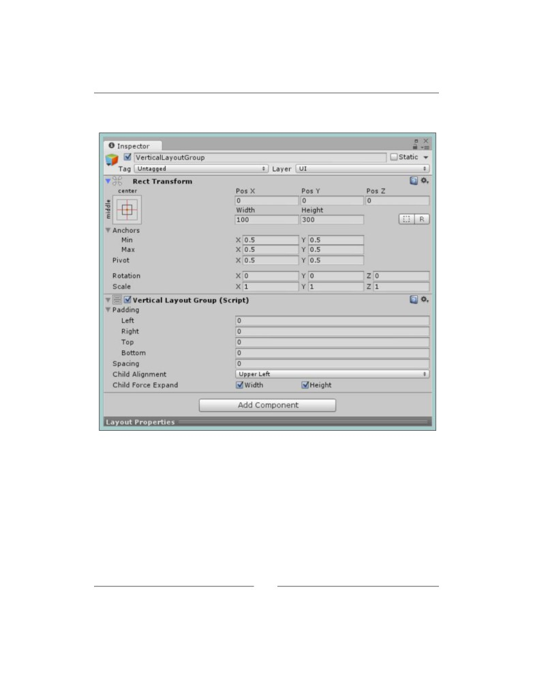
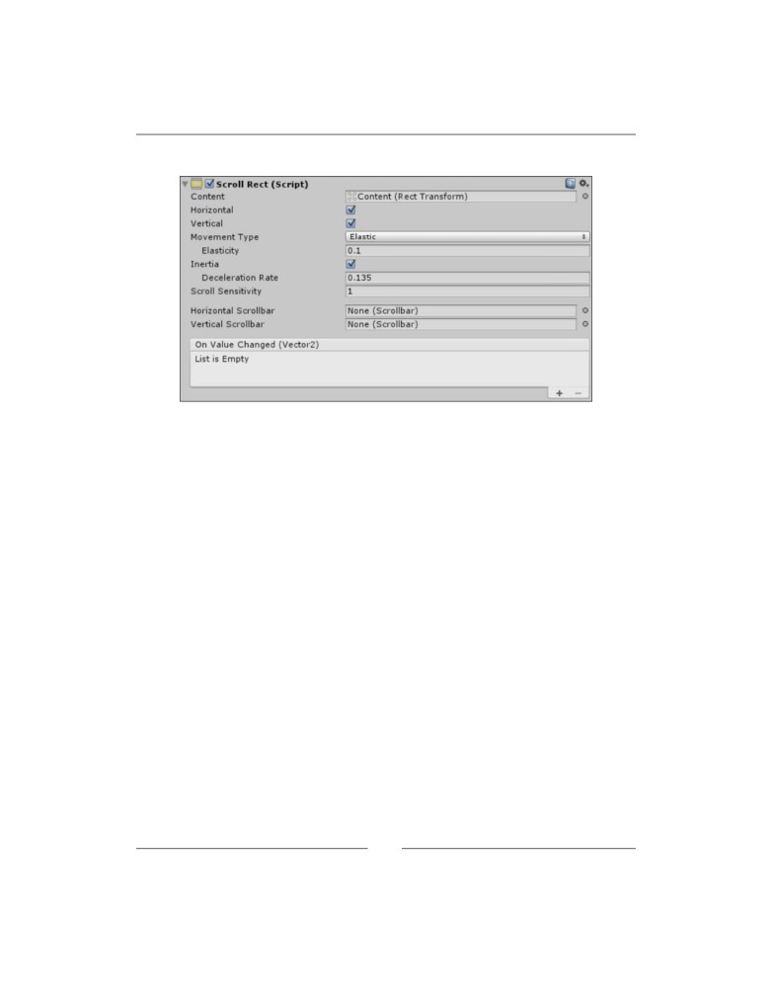
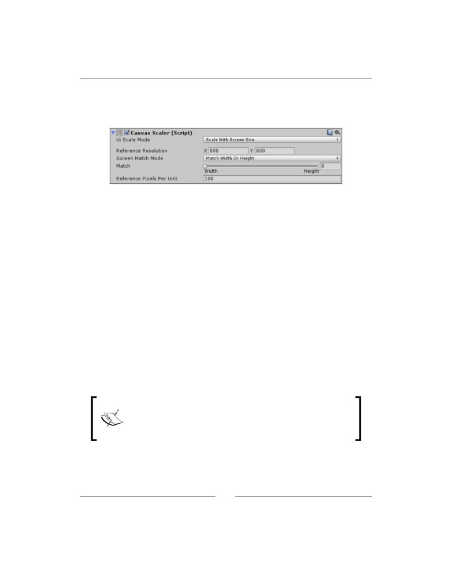
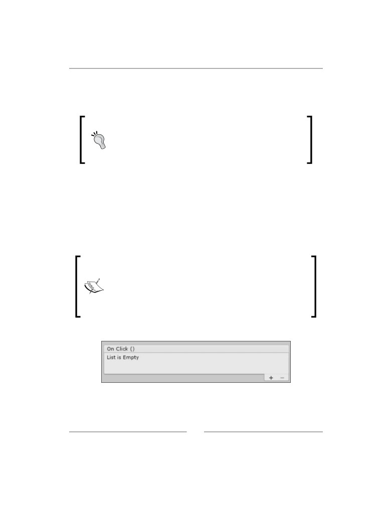
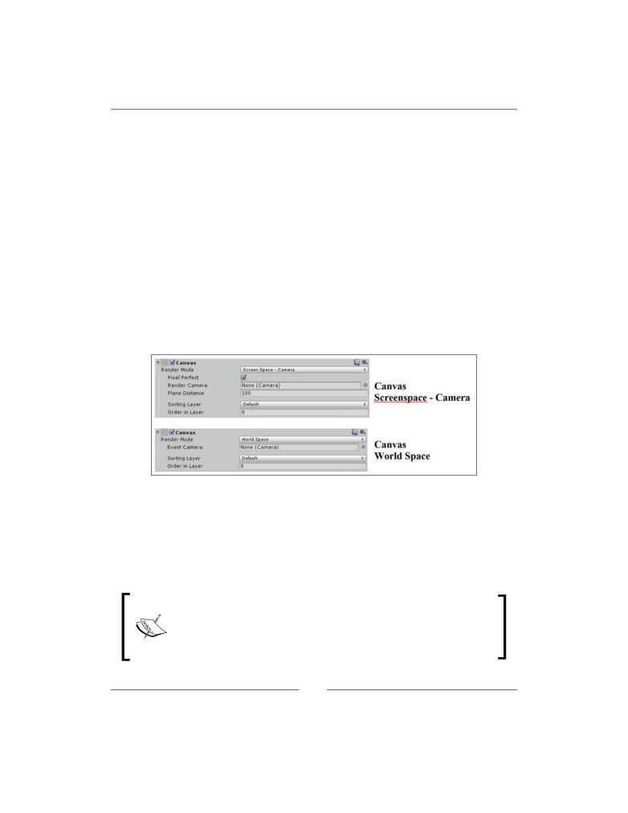
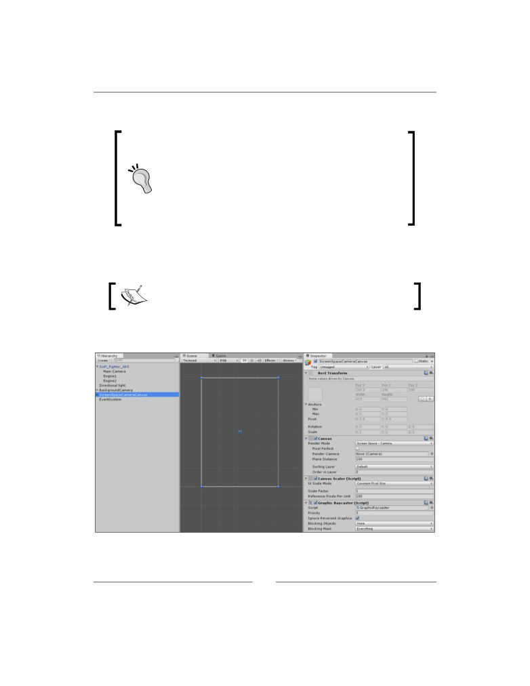
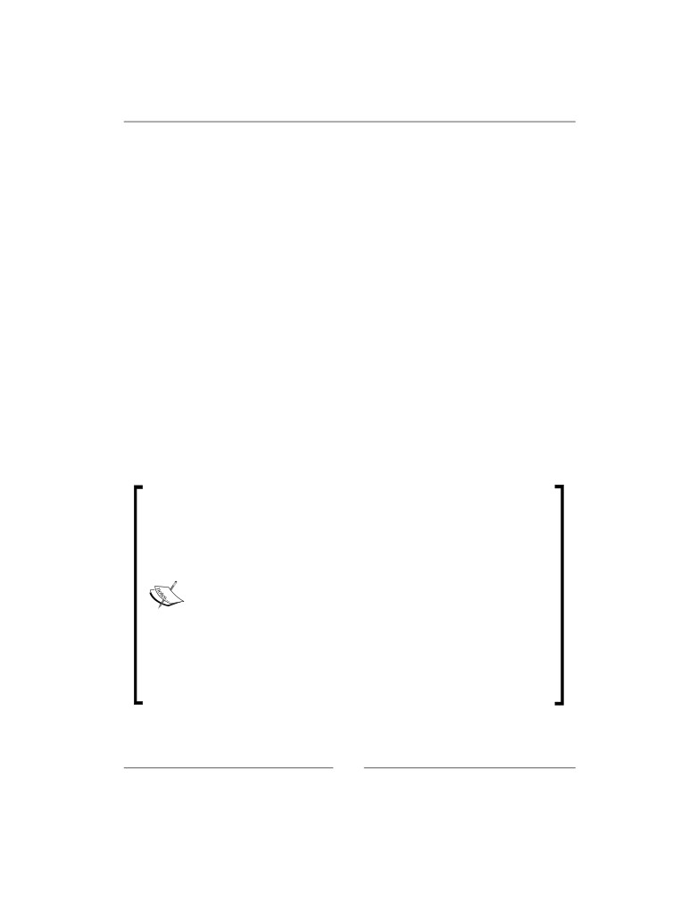
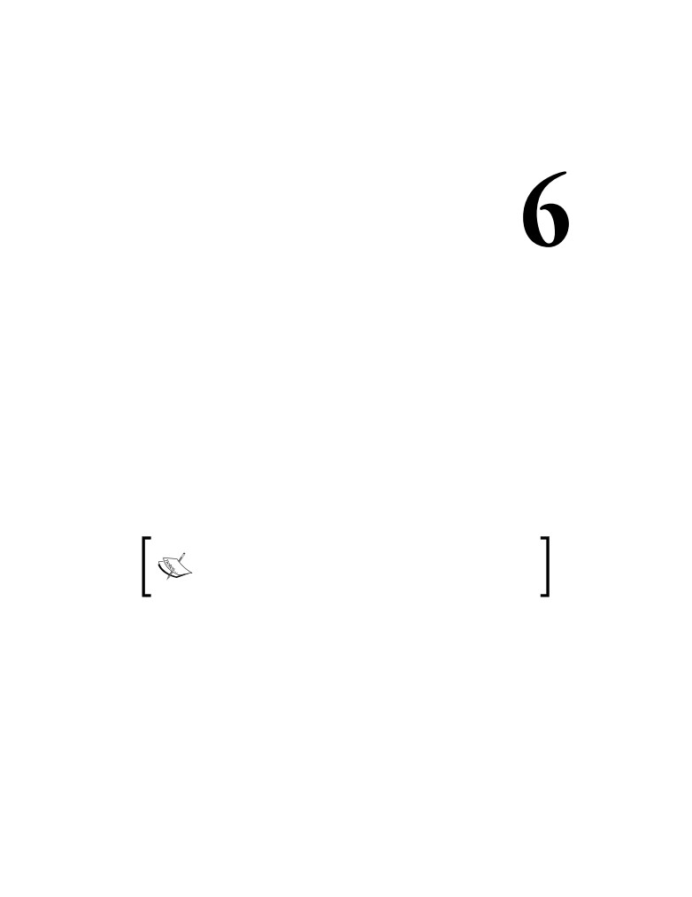
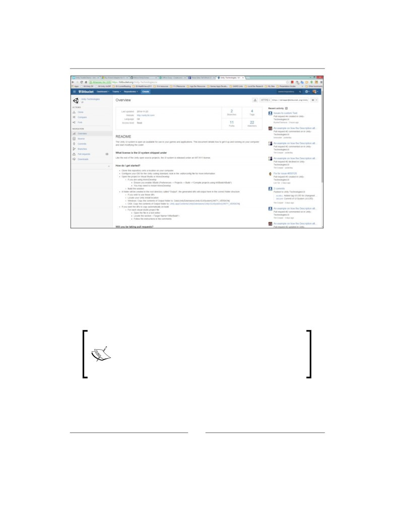
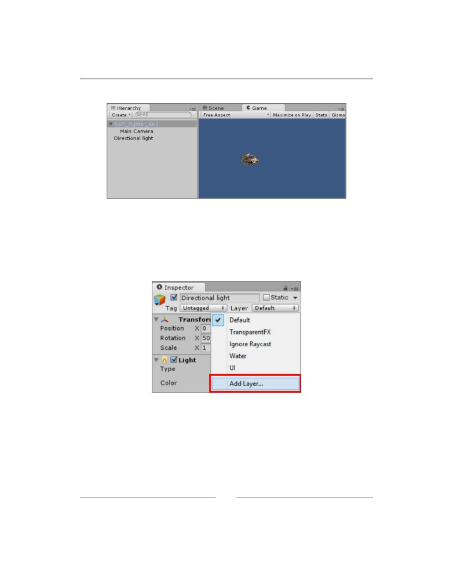

Unity 3D UI Essentials
Leverage the power of the new and improved UI
system for Unity to enhance your games and apps
Simon Jackson
BIRMINGHAM - MUMBAI
Unity 3D UI Essentials
Copyright © 2015 Packt Publishing
All rights reserved. No part of this book may be reproduced, stored in a retrieval
system, or transmitted in any form or by any means, without the prior written
permission of the publisher, except in the case of brief quotations embedded in
critical articles or reviews.
Every effort has been made in the preparation of this book to ensure the accuracy
of the information presented. However, the information contained in this book
is sold without warranty, either express or implied. Neither the author nor Packt
Publishing, and its dealers and distributors will be held liable for any damages
caused or alleged to be caused directly or indirectly by this book.
Packt Publishing has endeavored to provide trademark information about all of the
companies and products mentioned in this book by the appropriate use of capitals.
However, Packt Publishing cannot guarantee the accuracy of this information.
First published: January 2015
Production reference: 1270115
Published by Packt Publishing Ltd.
Livery Place
35 Livery Street
Birmingham B3 2PB, UK.
ISBN - 978-1-78355-361-7
Credits
Author
Project Coordinator
Simon Jackson
Danuta Jones
Reviewers
Proofreaders
Attilio Carotenuto
Simran Bhogal
Adam Dawes
Ameesha Green
Javier García-Lajara Herrero
Paul Hindle
Dr. Sebastian T. Koenig
Indexer
Simon Wheatley
Priya Subramani
Commissioning Editor
Graphics
Akram Hussain
Sheetal Aute
Acquisition Editor
Production Coordinator
James Jones
Nitesh Thakur
Content Development Editor
Cover Work
Sumeet Sawant
Nitesh Thakur
Technical Editor
Utkarsha S. Kadam
Copy Editors
Gladson Monteiro
Merilyn Pereira
About the Author
Ever since my early years I have been a tinkerer, engineer, problem solver, and
solution gatherer. In short, I love to break things apart, figure out how they work,
and then put them back together, usually better than before.
I started way back when with my first computer, the Commodore Vic20. It was
simple, used a tape deck, and forced you to write programs in basic or assembly;
they were fun times. From there, I progressed through the ZX Spectrum +2 and the
joyous days of modern graphics, but with the 30 minute load times from a trusty
tape deck. Games were a passion of mine even then, which led to many requests for
another gaming machine, but Santa brought me an Amstrad 1640, my first PC. From
there, my tinkering and building exploded, and that machine ended up being a huge
monstrosity with so many addons, tweaks, and fixes; I was Frankenstein, and this
PC became my own personal monster crafted from so many parts. Good times.
This passion has led me down many paths, and I learned to help educate others on
the tips and tricks I learned along the way; these skills have equipped me well for
the future.
Today I would class myself as a game development generalist. I work with many
different frameworks, each time digging down, ripping them apart, and then
showing whoever would listen through my blog, videos, and speaking events
how to build awesome frameworks and titles. This has been throughout many
generations of C++, MDX, XNA (what a breath of fresh air that was), MonoGame,
Unity 3D, The Sunburn Gaming Engine, HTML, and a bunch of other proprietary
frameworks; I do them all. This gives a very balanced view of how to build and
manage many different types of multiplatform titles.
I don't stop there, as I regularly contribute to the MonoGame project, adding
new features and new samples before publishing it on NuGet. I also have several
of my own open source projects and actively seek out any new and interesting ones
to help with.
By day I am a lowly lead technical architect working in the healthcare software
industry seeking to improve patients' health and care through better software
(a challenge to be sure), but by night I truly soar! Building, tinkering, and educating
whilst trying to push game titles of my own. One day they will pay the bills, but
until then I still lead a double life.
More recently, I achieved the highly acclaimed reward of being a Microsoft MVP in
the ID@Xbox program, for my evangelizing efforts in the game development space.
This won't change much about me, but will give me additional tools to help game
developers out there.
Lastly, you should check out my previous title, which has been one of Packt's best
sellers since its release, especially if you want to learn more about Unity's 2D system.
It truly has been a tormentous year but it looks to be getting
better. Through it all, my wife Caroline has been my tiller, keeping
me straight and true while I tend to my game development and
writing efforts. Looking forward, I'll likely be crafting more of my
own experiences with my kids pitching in; Caitlin, new to game
development in school, being my sidekick, Jessica adding her
colorful artistic talent to the mix, and the boys (Alexander and
Nathan) no doubt trying to destroy my efforts through testing.
Additionally, a big thanks to my extended family (Mike and
Marilyn) for helping out with the kids and keeping the writing area
a kids-free zone for a few desperate hours. (It's amazing what a few
hours respite can do.)
Also a big shout out to the PWSA (Prader-Willi Syndrome
with Alexander, plus the Warrington Youth Club (http://www.
him entertained, especially in his more trying times. On that last
thread, a very big thank you to Westland Drive respite (supported
by Warrington council), who give us peace of mind and a night off
from time to time; Alexander certainly loves his visits there.
Finally, thanks to the reviewers of this title (especially Simon W
and Andrew D who joined me from my previous book); they kept
me grounded and on target, although didn't help keeping the page
count down. Thanks for your support guys!
About the Reviewers
Attilio Carotenuto is a senior game developer at Space Ape Games, based in
London. There, he uses Unity to create awesome mobile and tablet strategy games
such as Samurai Siege.
Attilio previously worked at King, developing Farm Heroes Saga, and EA Playfish,
creating social games and tools based on the The Sims brand. Before that, he was a
freelance game and web developer, using tools such as Unity, Cocos2D, Flash,
and XNA.
He has previously worked with Packt Publishing on Unity 3D Game Development
(a video tutorial) as a technical reviewer.
Recent projects, tutorials, and articles from Attilio can be found on his personal
Adam Dawes is a software developer and systems architect working at a
cutting-edge online service development company.
He has long maintained a fondness for computer games. From the very first time
Nightmare Park displayed its devious maze of pathways in green symbols back
in 1980, he has been a player across a variety of genres and styles. Creating his
own games has always been a hobby, and while he has no plans to become part
of the professional games industry, Adam has a lot of fun developing his own
titles nonetheless.
Over the last few years, Adam has also published three books of his own,
the most recent of which, Windows 8 and Windows Phone 8 Game Development
(published by Apress), explains everything you need to know to develop Windows 8
games in C# using the open source MonoGame platform.
More information is available from his website at www.adamdawes.com.
Javier García-Lajara Herrero was part of the booming video game industry in
Spain, participating in the Commandos saga of Pyro Studios, where he developed as
an artist, before continuing his career in different studies at Virtual Toys, Bitoon,
and Unusual Studios.
He is now one of the professors at U-Tad University of Technology.
Always passionate about technical advances, he now researches and develops
new proposals in games, virtual reality, and aerial photogrammetry of objects and
environments with drones.
Dr. Sebastian T. Koenig received his PhD in human interface technology
from the University of Canterbury, New Zealand, developing a framework for
individualized virtual reality cognitive rehabilitation. He obtained his diploma in
psychology from the University of Regensburg, Germany, in the areas of clinical
neuropsychology and virtual reality rehabilitation.
Dr. Koenig is the founder and CEO of Katana Simulations, where he oversees
the design, development, and evaluation of cognitive assessment and training
simulations. His professional experience spans over ten years of clinical work in
cognitive rehabilitation and over seven years of virtual reality research, development,
and user testing. Dr. Koenig has extensive experience as a speaker at international
conferences and as a reviewer of scientific publications in the areas of rehabilitation,
cognitive psychology, neuropsychology, software engineering, game development,
games user research, and virtual reality.
Dr. Koenig has developed numerous software applications for cognitive
assessment and training. For his work on the Virtual Memory Task, he was
awarded the prestigious Laval Virtual Award in 2011, for the Medicine and Health
category. Other applications include the virtual reality executive function assessment
in collaboration with the Kessler Foundation, NJ, USA, and the patent-pending
Microsoft Kinect-based motor and cognitive training JewelMine/Mystic Isle at
the USC Institute for Creative Technologies, CA, USA.
and his software development projects. His website also contains a comprehensive
list of tutorials for the game engine Unity.
Simon Wheatley first got into programming with the Sinclair ZX81 and then
the Acorn BBC Micro. This hobby led onto a bachelor's degree in information
technology, after which he embarked on an IT career working in the service,
manufacturing, and higher education sectors.
Recently, he discovered Unity's new 2D tools and set about enthusiastically
learning as much as possible about them while contributing plenty of errata
to several recently published Unity books. Currently, he is developing an indie
mobile game using Unity. When he isn't working, he can be found singing down
at his local karaoke bar or out enjoying the fantastic British countryside!
Support files, eBooks, discount offers, and more
For support files and downloads related to your book, please visit www.PacktPub.com .
Did you know that Packt offers eBook versions of every book published, with PDF
and ePub files available? You can upgrade to the eBook version at www.PacktPub.
com and as a print book customer, you are entitled to a discount on the eBook copy.
At www.PacktPub.com , you can also read a collection of free technical articles,
sign up for a range of free newsletters and receive exclusive discounts and offers
on Packt books and eBooks.
TM
Do you need instant solutions to your IT questions? PacktLib is Packt's online digital
book library. Here, you can search, access, and read Packt's entire library of books.
Why subscribe?
• Fully searchable across every book published by Packt
• Copy and paste, print, and bookmark content
• On demand and accessible via a web browser
Free access for Packt account holders
If you have an account with Packt at www.PacktPub.com , you can use this to access
PacktLib today and view 9 entirely free books. Simply use your login credentials for
immediate access.
Table of Contents
Preface
1
Chapter 1: Looking Back, Looking Forward
7
State of play
8
GUI controls
9
The Label control
10
Texture drawing
11
The Button control
13
The Text control
14
The Box control
16
The Toggle/checkbox control
17
Toolbar panels
18
The Slider/Scrollbar controls
20
The ScrollView control
21
Rich Text Formatting
24
Common control features
26
Grouping controls
26
Naming controls
27
Getting in focus
27
Tooltips
30
The Window control
31
GUI styles and skins
33
GUI events and properties
38
Layout controls
39
BeginArea
39
Horizontal and Vertical layout groups
40
The Asset Store
40
Enter Thunderdome
40
New layouts
41
Rect Transform
42
The Canvas
42
Table of Contents
Groups
43
Masking
44
New controls
44
New UnityEvent system
46
Control extensibility
46
Animation
46
Even the Asset Store has you covered
47
TextMeshPro ($65)
47
GUI Generator ($40)
48
MenuPage ($10)
48
Summary
48
Chapter 2: Building Layouts
51
The Rect Transforms
52
The Rect Tool
52
The Rect Transform component
53
Scaling the Rect Transform
56
The Canvas
56
The Canvas Renderer
61
Canvas Groups
61
Automatic layouts and options
62
Horizontal Layout Group
62
Vertical Layout Group
65
Grid Layout Group
66
Layout options
69
Layout Element
70
Content Size Fitter
74
Aspect Ratio Fitter
76
Scroll Rect
78
Masks
81
Resolution and scaling
82
Constant Pixel Size
83
Scale with Screen Size
84
Constant Physical Size
85
The UnityEvent system
86
Raycasting
86
Input modules
87
Input events
88
Event Triggers
90
Summary
92
[ ii ]
Table of Contents
Chapter 3: Control, Control, You Must Learn Control
93
Overview
94
A word on code
94
Setting up the project
95
A warning on the built-in images
95
Dealing with text
96
A simple FPS control
100
Adding interaction with input
102
Shadows and effects
104
Bring on the images
106
Image types
108
Simple Images
108
Sliced Images
108
Tiled Images
110
Filled Images
111
Adding animation to the mix
112
A word on RawImage
117
Don't push this button
117
What makes it Selectable?
120
An event occurred, what do I do?
122
The ultimate awesome menu
126
Which direction to travel?
130
Grouping toggles
132
Dynamic event properties
133
Sliding opportunities
134
Ancient scrolls
137
Scrolling, Rect'ing, and Masking, oh my
139
Navigation
141
A word on shaders
143
Summary
143
Chapter 4: Anchors Away
145
Dropping Anchor
145
Put a nail in it, and trim the sails
147
Stretch it, bend it
152
Scaling and resolution
157
Working with the constant default
157
Scaling to my view
159
Getting physical
162
Which to choose?
167
Summary
167
[ iii ]
Table of Contents
Chapter 5: Screen Space, World Space, and the Camera
169
The Canvas and Cameras
170
Screen Space and World Space
170
Render cameras
171
Event Cameras
172
Getting some perspective
173
Setting up for the big game
176
Some prerequisites
177
Next up, some Sprite 2D work
177
A Screen Space - Camera health bar
179
What's in a Canvas?
180
Am I dead yet?
182
Reaching in
186
It's all gone a bit flat
187
Going deep
189
Hang your Canvas wherever you like
189
The showcase
190
Build your UI and place it in the scene
191
Troubles with scale
194
A better way
195
A final word on Event Cameras
196
Summary
196
Chapter 6: Working with the UI Source
199
Unravelling the Event System
200
The Event System loop
200
Controlling state
201
Raycast Marshalling
202
Working with events
202
Using a parameter
206
Built-in event interfaces
208
Executing events
210
Building your own handlers or custom events
213
A custom event Data Structure
214
A custom event Interface
216
A custom event static container
216
Processing a custom event
217
The Roll a Ball Derby
219
The Droid script
220
The Alarm plates
222
Who watches the watchers?
224
Summing up the Event System
226
[ iv ]
Table of Contents
Examples, examples, and even more examples
226
Getting access to the source
228
The repository
228
Getting forked
230
Downloading the code
232
Keeping up to date
235
What is in the solution?
236
Adding your own version of UI to your project
238
Extra credit, push it back to Unity
240
Summary
242
Appendix: The 3D Scene Sample
243
Setting up for the big game
244
The initial 3D scene
245
Index
253
[ v ]
Preface
A new era has dawned, and Unity Technologies have taken a big, bold step. Not only
have they delivered on some big promises for an all new and improved UI system
for Unity projects, but they have also made the source for the new UI completely
open source, giving everyday developers access to the inner workings of the new UI.
These are bold steps indeed. Many felt that the new UI wouldn't live up to the dream
that was sold, as it had been years since they announced it was coming. Delays
and rewrites made it look like it was never going to happen, leaving developers
with either having to live with the existing legacy GUI or pay for some of the more
advanced GUI systems on the asset store (such as NGUI).
Now, after a long and highly deliberated beta program, the new UI system is
finally upon us. In some areas, it meets our expectations; in some, it falls a bit short
(however, this is only the beginning). In other areas however, it has gone far beyond.
Throughout this title, we will peel back the layers of all this new technology to
understand what each component does, how it fits together, and how to use it to
build a fantastic new UI in our projects. Each chapter builds upon the last, to arm
you (the reader) with all the knowledge required to assemble your UI within your
projects. You will not just build on screen menus and options, but to embed UI
elements within your 3D game world.
Not only have Unity released the new UI system, they have also given every
developer access to the source that builds the UI, allowing you to better understand
how things are built and enable you to extend the existing controls or even build
your own. If you are feeling adventurous, you can even submit fixes or new features
back to Unity for them to include within Unity itself.
Preface
Finally, we can now build what we want, how we want and best of all, it's
completely free and available with the Free license for Unity. All hail and rejoice!
Now what are you waiting for? Pack up your towel, brew a freshly hot cup of tea,
crack open this guide, and start exploring the all new universe of UI.
What this book covers
Chapter 1, Looking Back, Looking Forward, is a retrospective look at what Unity3D
had to offer prior to 4.6 and an overview of what 4.6 and beyond brings to the
table, including a high-level overview of all the new UI features.
Chapter 2, Building Layouts, covers the core elements of the new Unity UI system,
the Canvas and Rect Transforms. These elements are the foundations of the new
Unity UI system.
Chapter 3, Control, Control, You Must Learn Control, Unity UI introduces a heap-load
of new UI controls to suit just about any UI need, from buttons and checkboxes
to entire scrollable areas and layout masks. Here, we will delve deep into how
to make the most of all the controls available.
Chapter 4, Anchors Away, provides a detailed walk-through of how to make the
most of the new Unity UI anchor system and build responsive layouts/designs.
Chapter 5, Screen Space, World Space, and the Camera, Here we finally delve into
one of the most highly anticipated parts of the new UI system: the ability to easily
build perspective UI layouts and add UI elements as 3D objects within a scene.
Chapter 6, Working with the UI Source, looks at all the coding behind the UI framework
and explores the new Event System and UnityEvent frameworks. The chapter finishes
with a walk-through, the open source project for the UI system, allowing you to see
just about every line of code Unity has written for the new UI.
Appendix, The 3D Scene Sample, talks about a flashy 3D demo scene, which was
discussed in Chapter 5, Screen Space, World Space, and the Camera, to show off the UI.
Because this wasn't the focus of the book, it was added as an optional appendix that
you could follow if you wish. The instructions are also available online and
as a downloadable package to enable developers of all levels to make use of it.
[ 2 ]
Preface
What you need for this book
• Unity3D V4.6+
• Visual Studio 2012 (Express, Pro, or higher); optional but recommended
Who this book is for
This book is for anyone with a solid understanding of Unity's core functionality
and a decent grasp of C# scripting in Unity (although not required for just the core
editor portions of the new Unity UI system). With this book, you'll be well placed
to take advantage of the new UI feature set.
Conventions
In this book, you will find a number of styles of text that distinguish between
different kinds of information. Here are some examples of these styles and an
explanation of their meaning.
Code words in text, database table names, folder names, filenames, file extensions,
pathnames, dummy URLs, user input, and Twitter handles are shown as follows:
"For standards stake, you should add scripts into a folder called Scripts and scenes
into a folder called Scenes."
A block of code is set as follows:
void OnGUI() {
GUI.Label(new Rect(25, 15, 100, 30), "Label");
}
When we wish to draw your attention to a particular part of a code block, the
relevant lines or items are set in bold:
public Texture2D myTexture;
void Start() {
myTexture = new Texture2D(125, 15);
}
void OnGUI() {
GUI.DrawTexture(new Rect(325, 15, 100, 15), myTexture,
ScaleMode.ScaleToFit,true,0.5f);
}
[ 3 ]
Preface
New terms and important words are shown in bold. Words that you see on
the screen, in menus or dialog boxes for example, appear in the text like this:
"With the new Unity UI system, you can define several layout groups."
Warnings or important notes appear in a box like this.
Tips and tricks appear like this.
Reader feedback
Feedback from our readers is always welcome. Let us know what you think about
this book—what you liked or may have disliked. Reader feedback is important for
us to develop titles that you really get the most out of.
To send us general feedback, simply send an e-mail to feedback@packtpub.com,
and mention the book title via the subject of your message.
If there is a topic that you have expertise in and you are interested in either writing
Customer support
Now that you are the proud owner of a Packt book, we have a number of things to
help you to get the most from your purchase.
Downloading the example code
You can download the example code files from your account at http://www.
packtpub.com for all the Packt Publishing books you have purchased. If you
and register to have the files e-mailed directly to you.
Additionally, the author has provided a support forum for the book. This forum
provides direct support from the author on your queries and any forthcoming
announcements regarding the title. You can find this forum at http://bit.ly/
[ 4 ]
Preface
Downloading the color images of this book
We also provide you with a PDF file that has color images of the
screenshots/diagrams used in this book. The color images will help you
better understand the changes in the output. You can download this file from:
https://www.packtpub.com/sites/default/files/downloads/3617OS.pdf.
Errata
Although we have taken every care to ensure the accuracy of our content, mistakes
do happen. If you find a mistake in one of our books—maybe a mistake in the text or
the code—we would be grateful if you could report this to us. By doing so, you can
save other readers from frustration and help us improve subsequent versions of this
link, and entering the details of your errata. Once your errata are verified, your
submission will be accepted and the errata will be uploaded to our website or added
to any list of existing errata under the Errata section of that title.
content/support and enter the name of the book in the search field. The required
information will appear under the Errata section.
Piracy
Piracy of copyright material on the Internet is an ongoing problem across all media.
At Packt, we take the protection of our copyright and licenses very seriously. If you
come across any illegal copies of our works, in any form, on the Internet, please
provide us with the location address or website name immediately so that we can
pursue a remedy.
pirated material.
We appreciate your help in protecting our authors, and our ability to bring you
valuable content.
Questions
You can contact us at questions@packtpub.com if you are having a problem with
any aspect of the book, and we will do our best to address it.
Additionally you can post questions directly to the author about the content of the
[ 5 ]
Looking Back, Looking
Forward
The new Unity UI has long been sought by developers; it has been announced
and re-announced over several years, and now it is finally here. The new UI system
is truly awesome and (more importantly for a lot of developers on a shoestring
budget) it's free.
As we start to look forward to the new UI system, it is very important to understand
the legacy GUI system (which still exists for backwards compatibility) and all it has
to offer, so you can fully understand just how powerful and useful the new system is.
It's crucial to have this understanding, especially since most tutorials will still speak
of the legacy GUI system (so you know what on earth they are talking about).
With an understanding of the legacy system, you will then peer over the diving
board and walk through a 10,000-foot view of the new system, so you get a feel of
what to expect from the rest of this book.
The following is the list of topics that will be covered in this chapter:
• A look back into what legacy Unity GUI is
• Tips, tricks, and an understanding of legacy GUI and what it has done for us
• A high level overview of the new UI features
Looking Back, Looking Forward
Downloading the example code
You can download the example code files for all Packt books you have
purchased from your account at http://www.packtpub.com. If you
com/support and register to have the files e-mailed directly to you.
Additionally, the author has provided a support forum for the book.
This forum provides direct support from the author on your queries and
any forthcoming announcements regarding the title. You can find this
forum at http://bit.ly/Unity3DUIEssentialsForums.
State of play
You may not expect it, but the legacy Unity GUI has evolved over time,
adding new features and improving performance. However, because it has
kept evolving based on the its original implementation, it has been hampered
with many constraints and the ever pressing need to remain backwards compatible
(just look at Windows, which even today has to cater for programs written in BASIC
just not as evolved as some of the newer features being added to the Unity 4.x and
Unity 5.x series, which are based on newer and more enhanced designs, and more
importantly, a new core.
The main drawback of the legacy GUI system is that it is only drawn in screen space
(drawn on the screen instead of within it) on top of any 3D elements or drawing in
your scenes. This is fine if you want menus or overlays in your title but if you want
to integrate it further within your 3D scene, then it is a lot more difficult.
For more information about world space and screen space, see
So before we can understand how good the new system is, we first need to get to
grips with where we are coming from. (If you are already familiar with the legacy
GUI system, feel free to skip over this section.)
[ 8 ]
Chapter 1
A point of reference
Throughout this book, we will refer to the legacy GUI simply as GUI.
When we talk about the new system, it will be referred to as UI or
Unity UI, just so you don't get mixed-up when reading.
When looking around the Web (or even in the Unity support forums),
you may hear about or see references to uGUI, which was the
development codename for the new Unity UI system.
GUI controls
The legacy GUI controls provide basic and stylized controls for use in your titles.
All legacy GUI controls are drawn during the GUI rendering phase from the built-in
OnGUI method. In the sample that accompanies this title, there are examples of all the
controls in the Assets\BasicGUI.cs script.
For GUI controls to function, a camera in the scene must have the
GUILayer component attached to it. It is there by default on any Camera
in a scene, so for most of the time you won't notice it. However, if you
have removed it, then you will have to add it back for GUI to work.
The component is just the hook for the OnGUI delegate handler, to
ensure it has called each frame.
Like the Update method in scripts, the OnGUI method can be called
several times per frame if rendering is slowing things down. Keep this
in mind when building your own legacy GUI scripts.
The controls that are available in the legacy GUI are:
• Label
• Texture
• Button
• Text fields (single/multiline and password variant)
• Box
• Toolbars
• Sliders
• ScrollView
• Window
[ 9 ]
Looking Back, Looking Forward
So let's go through them in more detail:
All the following code is implemented in the sample project in the
basic GUI script located in the Assets\Scripts folder of the
downloadable code.
To experiment yourself, create a new project, scene, and script,
placing the code for each control in the script and attach the
script to the camera (by dragging it from the project view on to
the Main Camera GameObject in the scene hierarchy). You can
then either run the project or adorn the class in the script with the
[ExecuteInEditMode] attribute to see it in the game view.
The Label control
Most GUI systems start with a Label control; this simply provides a stylized control
to display read-only text on the screen, it is initiated by including the following
OnGUI method in your script:
void OnGUI() {
GUI.Label(new Rect(25, 15, 100, 30), "Label");
}
This results in the following on-screen display:
The Label control supports altering its font settings through the use of the guiText
GameObject property (guiText.font) or GUIStyles. (See the following section on
GUIStyles for more detail.)
To set guiText.font in your script, you would simply apply the
following in your script, either in the Awake/Start functions or
before drawing the next section of text you want drawn in another font:
public Font myFont = new Font("arial");
guiText.font = myFont;
You can also set the myFont property in Inspector using an
imported font.
The Label control forms the basis for all controls to display text, and as such,
all other controls inherit from it and have the same behaviors for styling the
displayed text.
[ 10 ]
Chapter 1
The Label control also supports using a Texture for its contents, but not both text
and a texture at the same time. However, you can layer Labels and other controls
on top of each other to achieve the same effect (controls are drawn implicitly in the
order they are called), for example:
public Texture2D myTexture;
void Start() {
myTexture = new Texture2D(125, 15);
}
void OnGUI() {
//Draw a texture
GUI.Label(new Rect(125, 15, 100, 30), myTexture);
//Draw some text on top of the texture using a label
GUI.Label(new Rect(125, 15, 100, 30), "Text overlay");
}
You can override the order in which controls are drawn by setting
GUI.depth = /*<depth number>*/; in between calls; however,
I would advise against this unless you have a desperate need.
The texture will then be drawn to fit the dimensions of the Label field, By default
it scales on the shortest dimension appropriately. This too can be altered using
GUIStyle to alter the fixed width and height or even its stretch characteristics.
GUIStyles and GUISkins are explained in the later GUI styles
and skins section.
Texture drawing
Not specifically a control in itself, the GUI framework also gives you the ability
to simply draw a Texture to the screen Granted there is little difference to using
DrawTexture function instead of a Label with a texture or any other control. (Just
another facet of the evolution of the legacy GUI). This is, in effect, the same as the
previous Label control but instead of text it only draws a texture, for example:
public Texture2D myTexture;
void Start() {
[ 11 ]
Looking Back, Looking Forward
myTexture = new Texture2D(125, 15);
}
void OnGUI() {
GUI.DrawTexture(new Rect(325, 15, 100, 15), myTexture);
}
Note that in all the examples providing a Texture, I have provided a
basic template to initialize an empty texture. In reality, you would be
assigning a proper texture to be drawn.
You can also provide scaling and alpha blending values when drawing the texture to
make it better fit in the scene, including the ability to control the aspect ratio that the
texture is drawn in.
A warning though, when you scale the image, it affects the
rendering properties for that image under the legacy GUI system.
Scaling the image can also affect its drawn position. You may have
to offset the position it is drawn at sometimes.
For example:
public Texture2D myTexture;
void Start() {
myTexture = new Texture2D(125, 15);
}
void OnGUI() {
GUI.DrawTexture(new Rect(325, 15, 100, 15), myTexture,
ScaleMode.ScaleToFit,true,0.5f);
}
This will do its best to draw the source texture with in the drawn area with alpha
blending (true) and an aspect ratio of 0.5. Feel free to play with these settings
to get your desired effect.
This is useful in certain scenarios in your game when you want a simple way to
draw a full screen image on the screen on top of all the 3D/2D elements, such as
pause or splash screen. However, like the Label control, it does not receive any
input events (see the Button control for that).
[ 12 ]
Chapter 1
There is also a variant of the DrawTexture function called
DrawTextureWithTexCoords. This allows you to not only pick where you want the
texture drawn on to the screen, but also from which part of the source texture you
want to draw, for example:
public Texture2D myTexture;
void Start() {
myTexture = new Texture2D(125, 15);
}
void OnGUI() {
GUI.DrawTextureWithTexCoords (new Rect(325, 15, 100, 15),
myTexture ,
new Rect(10, 10, 50, 5));
}
This will pick a region from the source texture (myTexture) 50 pixels wide by
5 pixels high starting from position 10, 10 on the texture. It will then draw this to
the Rect region specified.
However, the DrawTextureWithTexCoords function cannot perform
scaling, it can only perform alpha blending! It will simply draw to fit
the selected texture region to the size specified in the initial Rect.
DrawTextureWithTexCoords has also been used to draw individual
sprites using the legacy GUI, which has a notion of what a sprite is.
The Button control
Unity also provides a Button control, which comes in two variants. The basic
Button control which only supports a single click, whereas RepeatButton supports
holding down the button.
They are both instantiated the same way by using an if statement to capture
when the button is clicked, as shown in the following script:
void OnGUI() {
if (GUI.Button(new Rect(25, 40, 120, 30), "Button"))
{
//The button has clicked, holding does nothing
}
if (GUI.RepeatButton(new Rect(170, 40, 170, 30),
"RepeatButton"))
{
//The button has been clicked or is held down
}
}
[ 13 ]
Looking Back, Looking Forward
Each will result in a simple button on screen as follows:
The controls also support using a Texture for the button content as well by providing
a texture value for the second parameter as follows:
public Texture2D myTexture;
void Start() {
myTexture = new Texture2D(125, 15);
}
void OnGUI() {
if (GUI.Button(new Rect(25, 40, 120, 30), myTexture))
{
}
}
Like the Label, the font of the text can be altered using GUIStyle or by setting the
guiText property of the GameObject. It also supports using textures in the same
way as the Label. The easiest way to look at this control is that it is a Label that
can be clicked.
The Text control
Just as there is a need to display text, there is also a need for a user to be able to enter
text, and the legacy GUI provides the following controls to do just that:
Control
Description
TextField
This is a basic text box, it supports a single line of text, no new
lines (although, if the text contains end of line characters, it will
draw the extra lines down).
TextArea
This is an extension of TextField that supports entering of
multiple lines of text; new lines will be added when the user
hits the enter key.
PasswordField
This is a variant of TextField; however, it won't display
the value entered, it will replace each character with a
replacement character.
Note, the password itself is still stored in text form and if you are
storing users' passwords, you should encrypt/decrypt the actual
password when using it. Never store characters in plain text.
[ 14 ]
Chapter 1
Using the TextField control is simple, as it returns the final state of the value that has
been entered and you have to pass that same variable as a parameter for the current
text to be displayed. To use the controls, you apply them in script as follows:
string textString1 = "Some text here";
string textString2 = "Some more text here";
string textString3 = "Even more text here";
void OnGUI() {
textString = GUI.TextField(new Rect(25, 100, 100, 30),
textString1);
textString = GUI.TextArea(new Rect(150, 100, 200, 75),
textString2);
textString = GUI.PasswordField(new Rect(375, 100, 90, 30),
textString3, '*');
}
A note about strings in Unity scripts
Strings are immutable. Every time you change their value they create a
new string in memory by having the textString variable declared at
the class level it is a lot more memory efficient.
If you declare the textString variable in the OnGUI method,
it will generate garbage (wasted memory) in each frame.
Worth keeping in mind.
When displayed, the textbox by default looks like this:
As with the Label and Button controls, the font of the text displayed can be altered
using either a GUIStyle or guiText GameObject property.
Note that text will overflow within the field if it is too large for
the display area, but it will not be drawn outside the TextField
dimensions. The same goes for multiple lines.
[ 15 ]
Looking Back, Looking Forward
The Box control
In the midst of all the controls is a generic purpose control that seemingly
can be used for a variety of purposes. Generally, it's used for drawing a
background/shaded area behind all other controls.
The Box control implements most of the features mentioned in the controls above
controls (Label, Texture, and Text) in a single control with the same styling and
layout options. It also supports text and images as the other controls do.
You can draw it with its own content as follows:
void OnGUI() {
GUI.Box (new Rect (350, 350, 100, 130), "Settings");
}
This gives you the following result:
Alternatively, you can use it to decorate the background of other controls,
for example:
private string textString = "Some text here";
void OnGUI() {
GUI.Box (new Rect (350, 350, 100, 130), "Settings");
GUI.Label(new Rect(360, 370, 80, 30), "Label");
textString = GUI.TextField(new Rect(360, 400, 80, 30),
textString);
if (GUI.Button (new Rect (360, 440, 80, 30), "Button")) {}
}
Note that using the Box control does not affect any controls you draw
upon it. It is drawn as a completely separate control. This statement
will be made clearer when you look at the Layout controls later in
this chapter.
[ 16 ]
Chapter 1
The example will draw the box background and the Label, Text, and Button controls
on top of the box area and looks like this:
The box control can be useful to highlight groups of controls or providing a simple
background (alternatively, you can use an image instead of just text and color).
As with the other controls, the Box control supports styling using GUIStyle.
The Toggle/checkbox control
If checking on / checking off is your thing, then the legacy GUI also has a checkbox
control for you, useful for those times when you need to visualize the on/off state
of an option.
Like the TextField control, you pass the variable that manages Togglestate as
a parameter and it returns the new value (if it changes), so it is applied in code
as follows:
bool blnToggleState = false;
void OnGUI() {
blnToggleState = GUI.Toggle(new Rect(25, 150, 250, 30),
blnToggleState, "Toggle");
}
This results in the following on-screen result:
As with the Label and Button controls, the font of the text displayed can be altered
using either a GUIStyle or guiText GameObject property.
[ 17 ]
Looking Back, Looking Forward
Toolbar panels
The basic GUI controls also come with some very basic automatic layout panels:
the first handles an arrangement of buttons, however these buttons are grouped
and only one can be selected at a time.
As with other controls, the style of the button can be altered using a GUIStyles
definition, including fixing the width of the buttons and spacing.
There are two layout options available, these are:
• The Toolbar control
• The Selection grid control
The Toolbar control
The Toolbar control arranges buttons in a horizontal pattern (vertical is
not supported).
Note that it is possible to fake a vertical toolbar by using a selection
grid with just one item per row. See the Selection grid section later
in this chapter for more details.
As with other controls, the Toolbar returns the index of the currently selected button
in the toolbar. The buttons are also the same as the base button control so it also
offers options to support either text or images for the button content.
The RepeatButton control however is not supported.
To implement the toolbar, you specify an array of the content you wish to display in
each button and the integer value that controls the selected button, as follows:
private int toolbarInt;
private string[] toolbarStrings ;
Void Start() {
toolbarInt = 0;
toolbarStrings = { "Toolbar1", "Toolbar2", "Toolbar3" };
}
void OnGUI() {
toolbarInt = GUI.Toolbar(new Rect(25, 200, 200, 30),
toolbarInt, toolbarStrings);
}
[ 18 ]
Chapter 1
The main difference between the preceding controls is that you have to pass the
currently selected index value in to the control and it then returns the new value.
The Toolbar when drawn looks as follows:
As stated, you can also pass an array of textures as well and they will be displayed
instead of the text content.
The SelectionGrid control
The SelectionGrid control is a customization of the previous standard Toolbar
control, it is able to arrange the buttons in a grid layout and resize the buttons
appropriately to fill the target area.
In code, SelectionGrid is used in a very similar format to the Toolbar code shown
previously, for example:
private int selectionGridInt ;
private string[] selectionStrings;
Void Start() {
selectionGridInt = 0;
selectionStrings = { "Grid 1", "Grid 2", "Grid 3", "Grid 4" };
}
void OnGUI() {
selectionGridInt = GUI.SelectionGrid(
new Rect(250, 200, 200, 60), selectionGridInt, selectionStrings, 2);
}
The main difference between SelectionGrid and Toolbar in code is that with
SelectionGrid you can specify the number of items in a single row and the control will
automatically lay out the buttons accordingly (unless overridden using GUIStyle).
The preceding code will result in the following layout:
On their own, they provide a little more flexibility than just using buttons alone.
[ 19 ]
Looking Back, Looking Forward
The Slider/Scrollbar controls
When you need to control a range in your games. GUI or add a handle to control
moving properties between two values, like moving an object around in your scene,
this is where the Slider and Scrollbar controls come in. They provide two similar
out-of-the-box implementations that give a scrollable region and a handle to control
the value behind the control.
Here, they are presented side by side:
The slimmer Slider and chunkier Scrollbar controls can both work in either
horizontal or vertical modes and have presets for the minimum and maximum
values allowed.
Slider control code
In code, the Slider control code is represented as follows:
private float fltSliderValue = 0.5f;
void OnGUI() {
fltSliderValue = GUI.HorizontalSlider(new Rect(25, 250, 100,30),
fltSliderValue, 0.0f, 10.0f);
fltSliderValue = GUI.VerticalSlider(new Rect(150, 250, 25, 50),
fltSliderValue, 10.0f, 0.0f);
}
Scrollbar control code
In code, the Scrollbar control code is represented as follows:
private float fltScrollerValue = 0.5f;
void OnGUI() {
fltScrollerValue = GUI.HorizontalScrollbar(new Rect(25, 285,
100, 30), fltScrollerValue, 1.0f, 0.0f, 10.0f);
fltScrollerValue = GUI.VerticalScrollbar(new Rect(200, 250, 25,
50), fltScrollerValue, 1.0f, 10.0f, 0.0f);
}
[ 20 ]
Chapter 1
Like Toolbar and SelectionGrid, you are required to pass in the current value and
it will return the updated value. However, unlike all the other controls, you actually
have two style points, so you can style the bar and the handle separately, giving you
a little more freedom and control over the look and feel of the sliders.
Normally, you would only use the Slider control; The main reason the Scrollbar is
available is that it forms the basis for the next control, the ScrollView control.
The ScrollView control
The last of the displayable controls is the ScrollView control, which gives you
masking abilities over GUI elements with optional horizontal and vertical Scrollbars.
Simply put, it allows you to define an area larger for controls behind a smaller
window on the screen, for example:
Example list implementation using a ScrollView control
Here we have a list that has many items that go beyond the drawable area of the
ScrollView control. We then have the two scrollbars to move the content of the
scroll viewer up/down and left/right to change the view. The background content
is hidden behind a viewable mask that is the width and height of the ScrollView
control's main window.
Styling the control is a little different as there is no base style for it; it relies on
the currently set default GUISkin (see the following GUIStyles section). You can
however set separate GUIStyles for each of the sliders but only over the whole
slider, not its individual parts (bar and handle). If you don't specify styles for each
slider, it will also revert to the base GUIStyle.
[ 21 ]
Looking Back, Looking Forward
Implementing a ScrollView is fairly easy, for example:
1.
Define the visible area along with a virtual background layer where the
controls will be drawn using a BeginScrollView function.
2.
Draw your controls in the virtual area. Any GUI drawing between the
ScrollView calls is drawn within the scroll area.
Note that 0,0 in the ScrollView is from the top-left of the ScrollView
area and not the top-left-hand corner of the screen.
3.
Complete it by closing the control with the EndScrollView function. For
example, the previous example view was created with the following code:
private Vector2 scrollPosition = Vector2.zero;
private bool blnToggleState = false;
void OnGUI()
{
scrollPosition = GUI.BeginScrollView(
new Rect(25, 325, 300, 200),
scrollPosition,
new Rect(0, 0, 400, 400));
for (int i = 0; i < 20; i++)
{
//Add new line items to the background
addScrollViewListItem(i, "I'm listItem number " + i);
}
GUI.EndScrollView();
}
//Simple function to draw each list item, a label and checkbox
void addScrollViewListItem(int i, string strItemName)
{
GUI.Label(new Rect(25, 25 + (i * 25), 150, 25), strItemName);
blnToggleState = GUI.Toggle(
new Rect(175, 25 + (i * 25), 100, 25),
blnToggleState, "");
}
[ 22 ]
Chapter 1
In this code, we define a simple function (addScrollViewListItem) to draw a list
item (consisting of a label and checkbox). We then begin the ScrollView control by
passing the visible area (the first Rect parameter), the starting scroll position, and
finally the virtual area behind the control (the second Rect parameter). Then we
use that to draw 20 list items inside the virtual area of the ScrollView control
using our helper function before finishing off and closing the control with the
EndScrollView command.
If you want to, you can also nest ScrollView controls within each other.
The ScrollView control also has some actions to control its use like the ScrollTo
command. This command will move the visible area to the coordinates of the virtual
layer, bringing it into focus. (The coordinates for this are based on the top-left
position of the virtual layer; 0,0 being top-left.)
To use the ScrollTo function on ScrollView, you must use it within the Begin and
End ScrollView commands. For example, we can add a button in ScrollView to
jump to the top-left of the virtual area, for example:
public Vector2 scrollPosition = Vector2.zero;
void OnGUI()
{
scrollPosition = GUI.BeginScrollView(
new Rect(10, 10, 100, 50),
scrollPosition,
new Rect(0, 0, 220, 10));
if (GUI.Button(new Rect(120, 0, 100, 20), "Go to Top Left"))
GUI.ScrollTo(new Rect(0, 0, 100, 20));
GUI.EndScrollView();
}
You can also additionally turn on/off the sliders on either side of the control by
specifying the BeginScrollView statement using the alwayShowHorizontal and
alwayShowVertical properties; these are highlighted here in an updated
GUI.BeginScrollView call:
Vector2 scrollPosition = Vector2.zero;
bool ShowVertical = false; // turn off vertical scrollbar
[ 23 ]
Looking Back, Looking Forward
bool ShowHorizontal = false; // turn off horizontal scrollbar
void OnGUI() {
scrollPosition = GUI.BeginScrollView(
new Rect(25, 325, 300, 200),
scrollPosition,
new Rect(0, 0, 400, 400),
ShowHorizontal,
ShowVertical);
GUI.EndScrollView ();
}
Rich Text Formatting
Now having just plain text everywhere would not look that great and would likely
force developers to create images for all the text on their screens (granted a fair
few still do so for effect). However, Unity does provide a way to enable richer text
display using a style akin to HTML wherever you specify text on a control (only for
label and display purposes; getting it to work with input fields is not recommended).
In this HTML style of writing text, we have the following tags we can use to liven up
the text displayed.
<b></b>
This gives text a Bold format, for example:
The <b>quick</b> brown <b>Fox</b> jumped over the <b>lazy Frog</b>
This would result in:
The quick brown Fox jumped over the lazy Frog
<i></i>
Using this tag will give text an Italic format, for example:
The <b><i>quick</i></b> brown <b>Fox</b><i>jumped</i> over the
<b>lazy Frog</b>
This would result in:
The quick brown Fox jumped over the lazy Frog
<size></size>
As you can probably guess, this tag will alter the Size of the text it surrounds.
For reference, the default size for the font is set by the font itself.
[ 24 ]
Chapter 1
For example:
The <b><i>quick</i></b> <size=50>brown <b>Fox</b></size> <i>jumped</
i> over the <b>lazy Frog</b>
This would result in:
The quick brown Fox jumped over the lazy Frog
<color></color>
Lastly, you can specify different colors for text surrounded by the Color tag.
The color itself is denoted using its 8-digit RGBA hex value, for example:
The <b><i>quick</i></b> <size=50><color=#a52a2aff>brown</color>
<b>Fox</b></size> <i>jumped</i> over the <b>lazy Frog</b>
Note that the color is defined using normal RGBA color space
space ) in hexadecimal form with two characters per color, for
example, RRGGBBAA. Although the color property does also
support the shorter RGB color space, which is the same notation
but without the A (Alpha) component, for example,. RRGGBB
The preceding code would result in:
The quick brown Fox jumped over the lazy Frog
(If you are reading this in print, the previous word brown is in the color brown.)
You can also use a color name to reference it but the pallet is quite
limited; for more details, see the Rich Text manual reference page at
For text meshes, there are two additional tags:
•
<material></material>
•
<quad></quad>
These only apply when associated to an existing mesh. The material is one of the
materials assigned to the mesh, which is accessed using the mesh index number
(the array of materials applied to the mesh). When applied to a quad, you can also
specify a size, position (x, y), width, and height to the text.
[ 25 ]
Looking Back, Looking Forward
The text mesh isn't well documented and is only here for reference;
as we delve deeper into the new UI system, we will find much better
ways of achieving this.
Common control features
The legacy GUI system does also have some features for controlling flow, control
selection, and targeted behavior. When it was introduced in Unity V2, it was a huge
step up from the previous component-based system.
Grouping controls
The legacy GUI allow you to group controls together on the screen, making all
positions for the group relative to the group's position. This means that if you started
a group at position X 50 and Y 50, then all child control positions within the group
would start at 50,50 when they define their position as 0,0.
Like the ScrollView control, each group has a beginning and an end to define the
scope of all the controls within the group, for example:
void OnGUI() {
//Start a group at position 50, 50. 150 width and 60 height
GUI.BeginGroup(new Rect (50,50,150,60));
//Draw a label with a 10, 10 offset in the group
GUI.Label(new Rect (10, 10, 100, 30), "Label in a Group");
GUI.EndGroup();
}
Here the label is drawn within the group bounds, and as the group starts at X 50,
the Labels screen position will be at X 60 (50 + 10). Anything positioned or
overflowing the group's bounds will not be drawn.
The group, like other controls, can also specify content within the group as text or a
texture with appropriate GUIStyles.
What is odd is that unlike the rest of the controls, if you specify text
content in the function, the default color of text is white, whereas if you
specify text in the content parameter for the BeginGroup function, the
text in the group is black by default. It's also left justified instead
of centered.
Additionally, by default the group does not support Rich Text
Formatting unlike the other controls, so you will need to apply
GUIStyle to change that.
[ 26 ]
Chapter 1
Naming controls
With each control that you implement through script, you can name them as you
place them; this is essential if you want to control flow and access to each field from
the keyboard or to derive logic based on the currently selected/focused control.
Now unlike most other Unity functionality, you cannot directly name controls,
there is no Name field on the properties of the controls as they are just commands
to the GUI system to draw things to the screen, kind of like a rendering pipeline.
So to name GUI controls in Unity, we simply need to tell the GUI system that the
next control we are going to draw has a name, as follows:
string login = "Would you like to play a game?";
void OnGUI() {
GUI.SetNextControlName("MyAwesomeField");
login = GUI.TextField(new Rect(10, 10, 200, 20), login);
}
Getting in focus
With names defined on controls, you could then define which control you were
focusing on. To focus on a specific control, you would simply need to call:
GUI.FocusControl("MyAwesomeField");
This would then change the user's input focus or selection to the specific GUI control
with that name.
Once you have a control in focus, you then discover the name of the specific control
in focus by calling:
string selectedControl = GUI.GetNameOfFocusedControl();
If the control in focus has a name, it will return the name you set for that control.
If no control is in focus or the control in focus has no name, it will return an
empty string.
The logon example
As an example of using the previous naming and focus capabilities, you can
build a simple logon GUI for a user to enter with validation behavior and some
usability features.
To demonstrate, we will create a user registration form where the user can enter a
username and password to register with your game. The password however will have
to be more than six characters long for security reasons (no weak passwords here).
[ 27 ]
Looking Back, Looking Forward
To start, create a new script called IntermediateGUI in your project (the full sample
can be found in the project available with this book in the code download) and
replace its contents with the following:
using UnityEngine;
[ExecuteInEditMode]
public class IntermediateGUI : MonoBehaviour {
public string username = "Enter username";
public string password = "Enter password";
private bool passwordInError = false;
private string passwordErrorMessage =
"<color=red>Password too short</color>";
}
This gives a basic class with some of the parameters you might expect in a logon
or registration form.
To this we'll add a simple function to validate the password entered to ensure it
meets our stringent security policy:
void CheckUserPasswordAndRegister()
{
if (password.Length < 6)
{
//If the password is not long enough, mark it in error
//and focus on the password field
passwordInError = true;
GUI.FocusControl("PasswordField");
} else
{
passwordInError = false;
GUI.FocusControl("");
//Register User
}
}
With that in place, now we can add our GUI controls:
void OnGUI() {
//A tidy group for our fields and a box to decorate it
GUI.BeginGroup(new Rect(Screen.width / 2 - 75,
Screen.height / 2 - 80, 150,160));
GUI.Box(new Rect(0,0,150,160), "User registration form");
[ 28 ]
Chapter 1
GUI.SetNextControlName("UsernameField");
username = GUI.TextField(new Rect(10, 40, 130, 20), username);
GUI.SetNextControlName("PasswordField");
password = GUI.PasswordField(new Rect(10, 70, 130, 20),
password,'*');
if (passwordInError)
{
GUI.Label (new Rect (10, 100, 200, 20),
passwordErrorMessage);
}
if (Event.current.isKey &&
Event.current.keyCode == KeyCode.Return &&
GUI.GetNameOfFocusedControl() == "PasswordField")
{
CheckUserPasswordAndRegister();
}
if (GUI.Button(new Rect(80, 130, 65, 20), "Register"))
{
CheckUserPasswordAndRegister();
}
GUI.EndGroup();
}
Note that the Event keyword here relates to the legacy GUI event
system for handling user input. See the Event section later in this
chapter for more information.
This is NOT to be confused with the UnityEvent system introduced
with the new UI system.
These results are shown in the following GUI screen:
[ 29 ]
Looking Back, Looking Forward
In this example, we draw a box, a text field, and a password field together with a
simple button within a group, which is then centered on the screen.
We check whether the user hits the Enter key and whether they are on the password
field (checked using the GUI.GetNameOfFocusedControl() function) and we try to
register them. The same happens if the user clicks on the Register button.
If the user's password is longer than six characters, then they are registered; if not,
then the passwordInError flag is set to True, which causes the additional label to
be drawn, this then warns the user that their password could be broken easily by
a 6-year-old.
Don't forget to add the IntermediateGUI script to an active
GameObject in a scene or Main Camera to see the result!
Tooltips
Each of the GUI controls can also have a tooltip associated with it to display some
additional text when it is either in focus or the mouse is hovering over the control.
Adding a tooltip is simple; you just need to replace the content of the control when it
is being drawn using the GUIContent class. For example, we can update the Register
button in the previous script as follows:
if (GUI.Button(new Rect(80, 130, 65, 20),
new GUIContent("Register", "My Tooltip")))
{
CheckUserPasswordAndRegister();
}
With the tooltip defined, we just then need to display the current tooltip somewhere
on the screen, usually as a label, but it can be any control that can display text (input
fields are not recommended however), so add the following after the button block
but before EndGroup():
GUI.Label (new Rect (10, 120, 65, 20), GUI.tooltip);
This simply gets the content of the current tooltip in focus and returns the tooltip text
for that control.
GUIContent also has several other options for displaying text and
texture variants, so it's worth checking out some more.
[ 30 ]
Chapter 1
The Window control
The last weapon in the legacy GUI arsenal is the Window control. As the name
suggests, this defines a separate drawable window for your controls.
The window behavior is similar to ScrollView; however, it is
just one layer. Any controls drawn outside the bounds of the
window are simply not drawn.
But there is nothing to stop you using a ScrollView control
inside a Window to achieve the same thing however.
With this separate Window, we can control many things, including:
• The modal nature of the Window
Modal means that this window is the only one you can control;
non-modal means it is a side-by-side window
• The drag state of Window; as in, the window can be dragged by holding
on with a mouse or touch
• The draw order of each Window; this allows sorting of draw windows on
top of each other
• The specific Window in focus, if there are multiple side-by-side windows
or a modal window
This opens lots of possibilities with a GUI Window.
The full Window example can be found in the BasicGUI script in
the sample project, displaying all the same controls as before but
within a single separate Window control.
To create a Window control, you first need to define a new method callback for the
Window using the following signature:
void DoMyWindow(int windowID)
{
}
[ 31 ]
Looking Back, Looking Forward
This method is where you will add all your GUI code using the previous examples;
each control is positioned is based off the top-left position of the window when it is
displayed (same as the Group and ScrollView controls described earlier).
Additionally, you can specify any of the previous options for the window,
for example:
void DoMyWindow(int windowID)
{
GUI.Label(new Rect(25, 15, 100, 30), "Label");
// Make the window Draggable
GUI.DragWindow();
}
With your Window method in place, you just need to call the GUI.Window function
to open it along with the property to track the Window's location:
private Rect rctWindow1;
void OnGUI()
{
Rect rctWindow1;
rctWindow1 = GUI.Window(0,
rctWindow1,
DoMyWindow,
"Controls Window");
}
This calls Window control into view using:
• An ID for the window
• The Rect position for where Window will open
• The delegate method for the GUI contents of Window
• A name/title for the window
If you want a modal window, then you would need to instantiate the window with
the GUI.ModalWindow function instead of the Window function:
rctWindow1 = GUI.ModalWindow(0, rctWindow1, DoMyWindow, "Modal
Controls Window");
If we take all the controls together (that we have created so far in this chapter),
it would create a Window view, as shown in the following screenshot:
For a complete end-to-end example, please see the code download
package, which has all this defined.
[ 32 ]
Chapter 1
GUI styles and skins
Recognizing that not everyone likes plain backgrounds and the same font
throughout their projects, Unity provided options to define a style for the layout
and general look and feel of the legacy GUI system, these are defined as GUIStyles.
These styles can either be applied globally using a GUISkin
(see GUISkin in the following section), or they can be applied
individually to each control (as detailed in the previous screenshot).
[ 33 ]
Looking Back, Looking Forward
Each style has options to define:
• A Name
• A texture or text color for the different states of the control it's attached to
(Normal, Hover, Active, and Focused)
• The border, margin, padding, and overflow sizes for the control
(for each edge)
• A Font (with suitable size, style, alignment, word wrapping, and rich
text support options)
• A text clipping size
• Image position within the control
• Offset settings for the content within the control
• A fixed width and height
• Stretching options for the width and height
I recommended configuring a public GUIStyle property in a class and then
modifying it in Editor Inspector when setting up a GUIStyle, for example:
using UnityEngine;
[ExecuteInEditMode]
public class GUIStyles : MonoBehaviour {
public GUIStyle;
void OnGUI() {
//Create a label using the GUIStyle property above
GUI.Label(new Rect(25, 15, 100, 30), "Label",
myGUIStyle);
}
}
You can also configure a GUIStyle in code, however it's not
recommended as the editor is just better at it.
It is worth noting that having too many different GUIStyles all over
the place can become very inefficient and hard to maintain. If you
find you are using a lot of GUIStyles then I'd recommend you create
a single script attached to a common object (say Main Camera) in
your scene with all your GUIStyle's defined and have each script take
GUIStyle references from there.
[ 34 ]
Chapter 1
When you attach the preceding script with the GUIStyle property to a GameObject
in your scene, it will look like this in Inspector:
Note that the first time you open it in the editor you will
get NullReferenceException in the console window;
this is just because you haven't configured GUIStyle yet.
If you don't want to apply a style to each and every control directly, you can then
optionally create GUISkin, which contains all the styles for each control type.
This is then applied using the GUI class prior to drawing any controls.
A GUISkin also has some additional options that apply to the GUI, which include:
• Setting whether a double-click action selects
• Setting whether a triple-click action selects
• The color of the cursor
• The cursor flash speed
• The default selection color
• Custom styles (an array of GUIStyle properties you can then reuse
on controls)
[ 35 ]
Looking Back, Looking Forward
To demonstrate, click on the Create button in the project folder view and select
GUISkin, which will give you a new GUISkin asset in the project view. By selecting
it, you will see the following window in Inspector:
As you can see, it contains all the options for altering the style globally for each
control. To use GUISkin, create a new script called GUISkins, then replace its
contents with the following:
using UnityEngine;
[ExecuteInEditMode]
public class GUISkins : MonoBehaviour {
public GUISkin MySkin;
void OnGUI()
{
GUI.skin = mySkin;
GUI.Label(new Rect(25, 15, 100, 30), "Label");
//Draw the rest of your controls
}
}
Then attach the GUISkins script to Main Camera in your current scene
(disabling any other scripts currently attached) and drag the GUISkin you
have created and apply it to the My Skin property of the script in the inspector.
[ 36 ]
Chapter 1
By setting the skin at the beginning of any GUI drawing, any and all controls drawn
will now use your custom skin instead of the Unity default. If you wish, you can use
several skins by just changing the skin before drawing more controls.
For some of the best examples of GUISkins, try installing the Unity Extra GUI Skins
built by Unity themselves (and it's free).
Note that if you want to reuse your own skins in other projects
(or sell more skins through the asset store), then you can export
them using Unity's Export Package option under Assets in the
Here's an example of what the GUISkins asset gives you:
[ 37 ]
Looking Back, Looking Forward
GUI events and properties
To support events in the legacy GUI area, Unity added an entire event handler
specifically for GUI interactions. This class is aptly named the Event class.
Remember, this section refers to the legacy GUI Event classes,
which has nothing to do with the new UnityEvent system
introduced in the new Unity UI system. See Chapter 6, Working with
the UI Source, for more details of the UnityEvent system.
These events center on user and device input, varying from:
• Event types: Is it a key event, mouse event, and so on
• Event values: Which key pressed, mouse button pressed, and so on
• Event summary information: Modifier keys, mouse movement delta,
and so on
To access the events you simply need to query the Event.current property to get
the current Event state. (The Event state updates when there is a change, until then
you will get the last/previous state.)
The logon example earlier shows an example for using events, where we detect if
the user has pressed a key and if that key is the Enter key as shown in this script:
if (Event.current.isKey &&
Event.current.keyCode == KeyCode.Return &&
GUI.GetNameOfFocusedControl() == "PasswordField")
{
CheckUserPasswordAndRegister();
}
Along with the events, the GUI class also provides some additional properties you
can query or set in the OnGUI method, namely:
• enabled: Is the GUI enabled and displayed on the screen. Can it be used to
turn on or off controls that are to be drawn to the screen.
• changed: This returns true if any controls' values have changed since the last
call of OnGUI.
• color: This is the global color tint for the GUI layout.
• contentColor: This is the global text color tint for the GUI.
[ 38 ]
Chapter 1
• backgroundColor: This is the global background color tint.
• depth: This is the depth order for the current GUI script. This is useful if you
have GUI elements in more than one script and want to layer them.
• matrix: The 3D transformation matrix for the current GUI.
All of these elements can be used to override all controls or individual controls by
setting them in between controls.
Layout controls
If you prefer not to hand draw the position of every single control in your GUI,
Unity does offer some automatic layout controls from the GUILayout class.
The Layout controls (using GUILayout instead of just GUI) have the same set of
controls as the normal GUI class (hence I'm not going to describe them all over
again), the main difference is that you do not need to specify a Rect area to draw
the control, as it will just be drawn at the first suitable location; any further controls
added will be laid out appropriately with enough spacing between the controls.
You can also control the spacing and even if you want, any empty space between the
controls using the Width, Height, and Spacing properties (Space/FlexibleSpace) of
GUILayout, following the same rules as for GUI controls (setting up the GUILayout
before drawing a control).
If you don't want the layout to take up the maximum space for a control,
you also have the settings for Width (MaxWidth/MinWidth) and Height
(MaxHeight/MinHeight).
The main differences are as follows:
• BeginGroup becomes BeginArea
• Horizontal and vertical groups (sub groups)
BeginArea
Instead of defining Groups, you define Areas. Apart from the name, they behave
exactly the same. This is the only layout control that takes a Rect parameter to
specify where you want to draw the controls (excluding Windows of course); all
GUILayout controls are then aligned to Area in the same way they are in Group.
It's recommended that when using GUILayout controls that you
place them in an Area for the best effect.
[ 39 ]
Looking Back, Looking Forward
Horizontal and Vertical layout groups
To control the layout of controls, you can define a set of controls to draw
in a particular direction, either horizontally or vertically. You start these in
the same way as areas by setting a GUILayout.BeginHorizontal() and
GUILayout.EndHorizontal() command. Like the Area, you can specify
additional content for the new sub-area such as text or textures.
The Asset Store
Several packages on the Unity asset store have tried to build a more fluent UI creation
system. They have met with varying success and all suffer from one underlying issue,
they weren't built by Unity and don't have access to some of the underlying runtime
and rendering components of the Unity editor and player. This results in some
performance issues (but in some cases they are actually faster than the legacy GUI,
especially on mobile platforms) and (in some cases) hacky workarounds. All in all,
most have done incredibly well without access to Unity's innards.
With the release of the new Unity UI system however, I would recommend checking
the state of many of the GUI assets out there as several (quite understandably) have
bowed their heads and are dropping off the store. The main package is still ongoing
tag to it. With it though are a multitude of supporting assets to make its adoption
easier and offer integration into several other assets.
Enter Thunderdome
Now that you've seen what Unity has had available for so long with the legacy GUI
(and if you have experienced it you will undoubtedly shudder at this point), it is a
very welcome relief that the UI system has received such an overhaul in Unity 4.6.
It has been a long time coming and very much anticipated!
Note that this section is just a preliminary overview so you know
what's coming. Each section will be described in depth in the
following chapters.
Recognizing the need for change, Unity set upon the path of redesigning the GUI
system from the ground up. They have looked at what games have needed, what the
community has built (even with the limitations and restrictions of not having access
to Unity's core) and then sprinkled some fairy dust and hey presto, the new Unity UI
system was born.
[ 40 ]
Chapter 1
It has been a long, hard road with many bumps in the way, but the journey has
begun (I say begun because the Unity UI journey does not end with Unity 4.6;
it will continue to evolve into Unity 5 and beyond like many other components).
With a keen eye on the future, the new Unity UI system delivers on several core
points, namely:
•
Extensibility: Each and every control is a script and you can create new
scripts to derive from them and create your own controls.
•
Uses sprites: The new Unity UI system is predominately built on top of the
new sprite system introduced in Unity 4.3. It has also however extended the
sprite system with some new features as well.
•
Tight integration with GameObjects: Each control is a GameObject in its
own right with the same capabilities as any other game object including the
ability to add further components and/or scripts.
•
Exposed events: Each control has its own events which you can attach to and
extend upon.
•
Tight integration with rendering and update loops: Because they are
GameObjects, you can even override the default rendering and updating
of a control.
•
Animation: Each control can be fully animated using the new Animator
dope sheet and Mecanim. Some controls (such as the button) leverage
Mecanim to do state-driven control. There are even animation specific events.
•
Screenspace AND WorldSpace: Finally UI can be drawn in 3D in a
performant way that doesn't involve hacking the project together or
having to use PRO-only features.
•
FREE: Unity UI comes as standard as part of the free license version of Unity
(indie developers rejoice).
•
Open source: Unity has made the source for the UI system open source and
available for anyone to look at and even offer fixes / new suggestions,
to coders delight.
New layouts
The layout features begin the story of the new Unity UI; they set the stage and
ultimately define where controls will be drawn, in which direction they will be
drawn, and also how they fit within a certain area.
[ 41 ]
Looking Back, Looking Forward
Rect Transform
Introduced in 4.3 with the new Sprite functionality, the Rect Transform component
provides a defining region for any 2D element within the Unity system. However,
like most things in 4.6, it has received significant updates allowing more control over
the area it manages as shown here:
It also sports a new button in the editor (called the Rect Tool) to edit and manage
Rect Transform from the scene view, as shown in the following screenshot:
The Canvas
At the core of all Unity UI drawings, is the new Canvas control. It acts as the paint
board for your Unity UI controls (and even other canvases), once rendered the
canvas is drawn to the relative point in your scene.
Thanks to vast improvements this canvas can be drawn in basic 2D overlay mode
(same as the legacy GUI system), in 2D camera space (adding perspective), or
even directly in 3D world space like as any other traditional 3D object (such as a
rendertarget for UI) as shown here:
[ 42 ]
Chapter 1
Groups
In the legacy GUI, groups were defined by the controls themselves;
if you wanted to orientate multiple controls together in a particular fashion,
you simply couldn't.
With the new Unity UI system, you can define several layout groups.
Horizontal Layout Group
A Horizontal Layout Group displays items in a horizontal line:
Vertical Layout Group
A Vertical Layout Group displays controls in a vertical line:
Grid Layout Group
A Grid Layout Group lays out controls according to a grid-based pattern of rows
and columns:
[ 43 ]
Looking Back, Looking Forward
Toggle Group
A Toggle Group manages arranges toggle controls in to a group where only one
can be active at a time (Like a Multiple choice selection where only one option can
be chosen).
Canvas Group
A Canvas Group allows you to generically group child UI controls together and
affect several common properties from the group, for example, the Alpha value
of all child items:
We'll cover these in more detail in Chapter 2, Building Layouts.
Masking
Recognizing the need for generic masking capabilities within the new Unity UI system
(the ability to hide portions of UI within a certain region), they created a new Mask
component. This can be added to any GameObject and any child objects outside the
bounds of the parent GameObject would not be drawn, either partially or fully.
The Image control (highlighted later in the chapter) also includes an additional
masking feature, when the Image Type property of an image is set to Filled;
it gives several additional masking options to gradually bring the image into
view. Just for reference now, we'll go into this in a lot more detail later.
New controls
Something old, something new, something borrowed, something blue.
Obviously when we look at a GUI, there is only so much that is really needed and
Unity has recognized this. Starting with a fresh slate, they have looked at what it
means to create a stunning UI and what you need to build one.
[ 44 ]
Chapter 1
So with this fresh start, here are the new Unity UI controls:
Control
Description
Selectable
The selectable component is the base object for anything that needs
interaction, and it basically turns any other component into a
(only available in
button. Note that it cannot be used on the same GameObject with
the component list)
something that is already selectable (button, toggle, and sliderbar).
Panel
This is a highlighted region, similar to the old Box control, mainly
used to define groups when additional components are added.
When Rect Transform alone is not enough. (Actually it’s an Image
control with a preset image and set to full screen)
Text
If text is your aim, then this control is for you. It gives you text
options like font, color, font style, and overflow. Can also be set to
resize text to fit the container it is in.
Image
This is a basic image that can either use a sprite or material to
display to the screen along with an optional color tint.
Raw Image
This is an alternate image display component that takes a
texture instead of a sprite or a material and can define a color
tint. Additionally has options to set the UV coordinates for the
displayed image.
Button
If you need a big red (color optional) button to press, then this
control is for you. The button has received the biggest overhaul
by far with so many options it will likely take a chapter on its
own to explain.
It also includes a new UnityEvent framework that allows you to
create behaviors that can affect other objects or scripts directly from
the editor.
You can even set different colors for different states of the button,
swap out images, or if you wish, use Mecanim and the new
animation system to animate the button between states.
Toggle
Switch it on, switch it off. The toggle takes the button behavior and
extends it as a prime example of what extensibility features are in
the new UI framework. It adds additional properties to the button
framework to identify the checkbox graphic and a grouping option
should you want to group checkboxes (using a Toggle group).
Scrollbar
It slices, it dices, it even slides as well. Your typical scroll bar with
a handle, fully customizable with options to control the direction,
minimum and maximum values, step size, and number of steps to
slide between. Also includes the event system used for buttons for
when the value changes.
Slider
This is a more advanced version of Scrollbar with fill options
(for a filling cereal bar) so you can build the fanciest health
bar with ease.
[ 45 ]
Looking Back, Looking Forward
New UnityEvent system
Unity has always lacked a good and robust event system. Sure there are the
SendMessage and BroadcastMessage functions, but these are really slow and
can be expensive.
The new UnityEvent System is built around providing and handling all events with
a scene, primarily for the new UI system; but like everything else in Unity 4.x, it is
built to be extensible, and you can enhance your own components and scripts to
expose themselves automatically to the event system and derive new events when
things happen.
A note about UI events in the new Unity UI system: the interaction
events all rely on raycasting to detect clicks, touches, hovering,
and so on. It is very fast and efficient. However, if you build a
new UI component that cannot react to raycasting, then it won't be
recognized or respond to such interaction events.
Control extensibility
One very cool feature of the new UI system is that practically every component is
a script, meaning it can be used as the base for any new scripts you create. You can
either use them as is or even extend them further.
In Chapter 6, Working with the UI Source, we will cover the coding behind all these
components including a walk through the open source library. I'll even throw in a
load of examples and reusable components from the community and myself.
Animation
A core tenant of the new UI system (since it is built upon the core of the new 2D
sprite system) was animation. Every single control or component of the new Unity
UI system is able to be fully animated.
Not only that, but it also gives different modes for how properties can be animated,
from static fixed values to dynamic values that will alter and update with the
controls behavior.
[ 46 ]
Chapter 1
Even the Asset Store has you covered
Through the dark of the beta process, which many developers participated in.
Several worthy asset creators worked feverishly to update their craft to make use of
the new UI system ready for release. Some existing projects were greatly enhanced
and even some new toolkits.
Note that these recommendations are from my own experiences
through the beta evolution of the new UI system. I've worked with
(and against at times) a lot of things described in this section.
I most certainly am not being paid to highlight these, they are just
the best out there solving very unique gaps or limitations of the
new UI system to date (however, Unity isn't sitting still, so these
teams better keep up!).
No doubt I'll mention more of them on my blog as I find them.
I'll point these out again in some of the chapters where you will get the most use out
of them or where they are relevant.
The most notable assets at the time of writing are the following.
TextMeshPro ($65)
This is a fantastic text management system that helps to bridge the gaps and the
limitations in Unity's aging text rendering system. Unity themselves have noted on
several occasions they want to rip out the text system and replace it with something
better, until that happens, the best asset to help with text generation from within
Unity (not just getting an artist to build lots of text assets) is TextMeshPro.
TextMeshPro has been around for quite a while now and has run with the
leaders to get it updated for the new UI system but the author didn't stop there.
TextMeshPro has gone far and beyond its humble text rendering beginnings to
add such features as improved alignment/indentation and rich text support, even
adding vertex animation for the generated text! (Just check out http://bit.ly/
[ 47 ]
Looking Back, Looking Forward
GUI Generator ($40)
Building clean and efficient UIs in Unity have always been a strain (just look at this
chapter!), this is where GUI Generator comes in, starting with the old GUI, then
adapting to also handle NGUI and now the new Unity UI system. It's a quick and
advanced tool to clean up the look and feel of your UI (no, it doesn't build your UI
for you, it styles it!).
It also has many built-in effects you can add to your UI to make it stunning. Like
TextMeshPro, the author has been working hard through the beta to get this great
tool updated to handle the new UI elements and skin them to great effect.
MenuPage ($10)
Not every asset for the new UI has to be a big beast of a tool meant to save you
hours, sometimes you just need something to get you off the ground and using the
new UI with great effect. This is where MenuPage comes in.
Put simply it's a new asset on the store aimed at building menu systems using the
new UI system automatically. They are fully configured, laid out effectively and
offer some advanced features such as fading, transitions, and much more.
What's even better is that all the source code is there and is fully documented/
commented, so you can learn from some of the best coders out there purveying
their wares.
Summary
So now we have a deep appreciation of the past and a glimpse into the future.
One thing you might realize is that there is no one stop shop when it comes to
Unity; each feature has its pros and cons and each has its uses. There may still
be cases when it is just easier to use the Unity legacy GUI to achieve an effect
(still using the basic GUI.DrawTexture for a splash screen for example, although
even that is very easy with the new UI system) provided you take the performance
concerns on board with mobile devices. It all comes down to what you want to
achieve and the way you want to achieve it; never dismiss anything just because
it's old (except for GUIText and GUITexture, they are just really really old…)
[ 48 ]
Chapter 1
In this chapter, we covered the following topics:
• The history of Unity legacy GUI
• Detailed walkthrough of the legacy Unity GUI
• Whistlestop tour of the new Unity UI system and what we can expect from
this title
In the next chapter, we will start with the underlying framework and guts behind
the new GUI system, namely:
• The new Rect Transform control (not just for Unity UI)
• The new Rect Transform component (and why it's great)
• The Canvas control
• What Unity have done for scaling and resolution for UIs
• The all new and improved Event messaging system for the Unity UI system,
complete with new shiny raycasting features and helpers
It promises to be a fun ride, and once we are through that, then in chapter 3,
Control, Control, You Must Learn Control we can move on to actually building
some UI and then placing it in your game scenes in weird and wonderful ways.
Now stop reading this and turn the page already!!
[ 49 ]
Building Layouts
As we start to look deep into the crystal ball, we gaze upon our first sights of the new
Unity UI system. In a breath of fresh air, Unity UI has appeared to aid the weary UI
developer, who just wants their UI their own way.
We start with the beginnings of Unity UI and the foundations that it builds upon,
most notably the Sprite 2D system that was introduced with Unity 4.3. However,
Unity UI takes these simple beginnings and takes a bold leap forward. Almost every
underlying part of the new sprite system has been improved and stretched to build
something that is sensible and just works. In those areas, where it does not stretch
enough, there is a base framework for extensibility; don't like it the way Unity has
put it together, then do it your own way.
The following is the list of topics that will be covered in this chapter:
• The new Rect Transform
• The Unity UI canvas
• Layout and grouping systems
• Unity Events and the new EventSystem
This chapter focuses on the fundamental framework and layouts
behind the new UI system and as such doesn't cover the individual
controls themselves. The controls will be covered in greater depth
in Chapter 3, Control, Control, You Must Learn Control.
First we need to understand the sandbox before you can start
building stuff in it.
Building Layouts
The Rect Transforms
The idea for the Rect Transforms started back in Unity 4.3 timescales with the
introduction of the new Sprite system, they were exposed through the sprite editor
when you were editing spritesheets, where you had a rectangular area to identify the
area on the spritesheet where your sprite texture would come from. This was then
used as the basis for drawing all sprites, you just didn't get to see it.
The Rect Tool
Seeing the need for more control over how sprites were drawn in the scene gave
birth to a new manipulation control in the Unity editor called the Rect Tool, which
took its rightful place in the main toolbar as shown here:
In its default mode, this tool allows visual scaling of a sprite as you can see here:
If you cannot see the blue control points, you likely need to scroll the
view in. At low zoom levels the controls are not displayed around
sprites/objects.
You get the four control points (one in each corner) to scale the sprite in or out from
that point and the central circle that forms the current pivot point.
Note: If you hold down the shift modifier while moving any of the
corner control points, it will scale the sprite uniformly, maintaining the
aspect ratio of the sprite (equally on each side)
This tool in effect, was built to manage sprites introduced into a scene.
[ 52 ]
Chapter 2
The Rect Transform component
Now the previous Rect Tool works just fine on all 2D and 3D objects and is a great
extension to the Unity toolset; however, Unity also introduced the Rect Transform
component specifically for the new Unity UI system, you can see it here:
Note: If you add a Rect Transform to an ordinary sprite instead of a
UI component, you will not get the full capabilities described here.
The Rect Transform cannot update the Sprite Renderer component
used by sprites alone, so it won't resize or be able to use advanced
features such as the Anchors. Bear this in mind when tinkering. The
primary reason for the new Rect Transform component is the new
UI system.
The Rect Transform with a fixed (non-stretched) anchor
The Rect Transform with a stretched anchor
[ 53 ]
Building Layouts
As you can see, it is quite different to the standard transform component we see on
normal GameObjects; however, it does have the same Rotation and Scale parameters
as the normal transform. Here's a quick breakdown of the new properties:
Note: The positioning values for the Rect Transform change based
on whether the anchors are in a fixed (non-stretched) or stretched
mode. For more details on anchoring, see Chapter 4, Anchors Away.
• Pos X/Pos Y/Pos Z (when in non-stretched mode): These identify the X, Y, and
Z position of the Pivot of the Rect Transform before any scaling or rotation.
• Width/Height (when in non-stretched mode): These identify the width and
height of the Rect Transform area.
• Left/Top/Right/Bottom (when in stretched mode): These values replace the
above properties when the Rect Transform uses stretched Anchors; they
identify the offset positions of the Rect Transforms Pivot point from the
border of the parent Rect Transform.
• Blueprint mode: This changes the selection corners for the Rect Transform
to an un-rotated and unscaled box. The base Rect selection area is identified
by the preceding parameters.
• Raw mode: By selecting this toggle, any changes to pivot or scale will not
also alter the position and size of the Rect Transform.
• Anchors: This controls the layout behavior of the Rect Transform; this will
be covered in more detail in Chapter 4, Anchors Away.
• Pivot: This designates the pivot point for the Rect Transform, this is where
the Rect Transform will rotate around.
The Pivot of a Rect Transform can only be edited for UI
components, not to be confused with a Sprite pivot point,
which is set in the Sprite import settings.
• Anchor Point (the graphic in the top-left hand corner): This is a graphical way
to alter the anchor points for the Rect Transform (see Chapter 4, Anchors Away).
[ 54 ]
Chapter 2
The Rect Transform component is included with all Unity UI objects added to the
scene instead of the regular Transform component and forms a core part in the
layout of all Unity UI controls.
If you add a Rect Transform component to any GameObject,
it will automatically replace the Transform component. If you
remove the Rect Transform component it will revert back to the
standard Transform component.
With UI components, the Rect Tool also reacts to the control modifiers in the
toolbar, depending on what they are currently set to, as you can see in the following
screenshot there are two modifier buttons, each with two settings:
When you have the Rect Tool selected, these toggles behave as follows for a
UI component:
• Center: The central pivot point of the Rect selection area acts as an anchor;
holding the mouse down on it moves the Rect around the screen.
• Pivot: With this option active, holding the mouse down on the pivot
point of the selection Rect moves the pivot point around the object, thus
altering the pivot point for the object (the point at which the object is
rotated/scaled around).
• Global: When in global mode, the selection area for a Rect Transform
surrounds the entire object including any rotated space. If the Rect is rotated,
the selection area stays un-rotated and sizes up to encompass all the used
space by the Rect.
• Local: When in local mode, the selection area is tight to the Rect Transform
area with rotation; if rotated, the selection area is also rotated.
Remember, the Pivot point of a source image and the Pivot point
of the Rect Transform are two separate things; altering the Pivot
point of the Rect Transform does not alter the Pivot point of the
source sprite/image.
[ 55 ]
Building Layouts
Scaling the Rect Transform
A minor but important point to keep in mind with the new Rect Transform
component when scaling: when you scale the Rect Transform it is done
proportionally to the objects Pivot point.
With the Pivot point in the center, the scaling will happen proportionally across
the entire Rect Transform. Move the Pivot point to a corner and the scaling will
be apportioned from the corner where Pivot is.
Something to bear in mind if you're scaling is delivering some
weird results.
This is in effect the same with Rotation, as any Transform will rotate
around its Pivot point. The same is applied for Scaling an object, it gets
scaled by its Pivot point.
The Canvas
As we start to take our first steps with the new Unity UI system, we are welcomed
by one of the first cornerstones of Unity's new implementation, the Canvas.
Put simply, the Canvas (as the name suggests) is your drawing board for all new UI
elements. The legacy GUI system had the GUILayer component attached to a specific
camera. The new Canvas however, has a separate component in its own right that
can (by default) overlay the current rendering scene (as with the legacy GUI), It can
be attached to a specific camera with its own perspective, or even be embedded in
the 3D scene like any other 3D object.
As with many things, you can have more than one Canvas per scene
and can even nest Canvases within each other if you so wish.
Whenever you attempt to add any new UI control to a scene, Unity will
automatically add a base Canvas GameObject into the hierarchy and make your
new UI control a child of the new Canvas. Any new UI elements not parented to a
Canvas will not be drawn to the screen.
[ 56 ]
Chapter 2
If you drag a Unity UI control from a Canvas and parent it to any other
object in the scene that is not a child of a Canvas object, it simply is not
drawn and is ignored. This includes if you drag it to the top of the Unity
project hierarchy.
Unity will also add an EventSystem to the scene, if one does not exist
already; this is explained in detail in the following Event System section.
To try it out, open a new scene in your project and either:
• Create a new Canvas by selecting to the Create | UI | Canvas option in the
hierarchy window, or
• Create any UI component by selecting to Create | UI | Go Wild (select any
control) option in the hierarchy window
If you then select the Canvas in the project hierarchy, you will see the following in
the Inspector window with the default Screen Space - Overlay Render Mode:
The default Canvas, with Screen Space - Overlay selected
[ 57 ]
Building Layouts
You can then change the Canvas Render Mode to either the Screen Space - Camera
option as shown here:
A canvas with the Screen Space - Camera render mode selected
Or select the World Space Canvas Render Mode as shown here:
A canvas with the World Space render mode selected
Let's first walk through all the options we have shown below:
We'll discuss each of these in more detail in specific sections of
this chapter and in some cases, other chapters. There's a lot to
go through so these are just the highlights mentioned here.
[ 58 ]
Chapter 2
•
Rect Transform: The base Rect Transform for the Canvas, which is set
(by default) to the size of resolution for the platform/screen resolution you
have selected. You will note that the Rect Transform for the base Canvas is
read-only for Screen Space Canvases, as it is driven by the platform
resolution to be full screen and cannot be altered. However, you can also
create child Canvas elements, whose size can be modified. A World Space
canvas Rect Transform can be altered as it is a free spirit.
•
Canvas: The main Canvas component has several different modes in which
it operates and drastically changes how it is drawn in a scene. The following
options change based on which Render Mode you have selected:
Note, we'll cover the differences between Screen Space - Overlay,
Screen Space - Camera and World Space in more detail later in
Chapter 5, Screen Space, World Space and the Camera.
°°
Render Mode: The Unity UI Canvas has three distinct rendering
modes, these are Screen Space - Overlay, Screen Space - Camera,
and World Space. Between them we have the ability to project our
Unity UI canvas wherever we want, within either a 2D or 3D scene,
even embed the canvas as a separate 3D element in a 3D scene
(far surpassing the old legacy GUI). We'll discuss these in more
detail in Chapter 5, Screen Space, World Space and the Camera.
°°
Pixel Perfect (Screen Space canvases only): This is a high-quality
option for those times when you need pixel perfect rendering of the
2D UI elements; by default this is turned off as there is a significant
performance hit from enabling it. By turning this feature on, it
will cause the entire canvas and its children to be recalculated and
redrawn (as opposed to just the elements that have changed).
°°
Sort Order (Screen Space - Overlay only): If you have multiple Screen
Space - Overlay Canvases in the scene, what is the drawing order for
this Canvas. Lower orders will be drawn below others, higher orders
will be drawn on top.
°°
Render Camera (Screen Space - Camera only): This selects the camera
on which the canvas should be drawn to; this allows the setting of a
different perspective and view for the canvas over the Main Camera.
The result is then drawn with the Main Camera depending on the
Render Camera's Depth.
°°
Plane Distance (Screen Space Camera only): Dictates how far away
from the Camera the Canvas should be drawn, also known as
drawing distance (perspective depth).
[ 59 ]
Building Layouts
°°
Event Camera (World Space only): This identifies which camera
should be used to render and receive events on (same as the Render
Camera for Screen Space - Camera).
°°
Sorting Layer (Screen Space - Camera and World Space only): When
the Canvas is used with other Sprite Rendering components in a
scene (such as the 2D rendering system and Sprites), this sets which
Sprite Sorting Layer the canvas renders on.
°°
Order in Layer (Screen Space - Camera and World Space only):
The draw order on the selected Sprite Sorting Layer.
•
Canvas Scaler (the Script component): Defines how the canvas resolution
and positioning units are measured. For more details, see the Resolution and
scaling section later in this chapter.
•
Graphics Raycaster (the Script component): This component is part of a
new Raycasting framework delivered with the new UnityEvent system.
(See the following UnityEvent system section later in this chapter). Events
and human interaction are derived through a new and efficient Raycasting
system (which the Graphics Raycaster is one implementation of). This
provides hit tests from the user's current input position through the Unity UI
layer and feeding back information to the UnityEvent system. The settings
here provide configurations to drive how the raycast functions will react;
they are as follows:
°°
Ignore Reversed Graphics: If a UI element is reversed (seen from the
back), then this setting will define if a raycast hit will qualify as a hit
or not and generate an event (basically does what it says on the tin).
°°
Blocking Objects: Allows you to block raycast hit tests from 2D, 3D,
Everything or None (allowing hit tests from everything).
Note: By default, raycasts will pass though the UI layer in to your
scene, so this setting can be very useful. But you can also control
this behavior with a Canvas Group (see the Canvas Group section
later in this chapter).
°°
Blocking Mask: Allows you to restrict the rendering layers
that raycasts will operate on: you can select multiple layers,
a single layer, or all layers.
[ 60 ]
Chapter 2
The Canvas Renderer
In order for a GameObject to render visuals on to a Canvas, a GameObject has to have
a CanvasRenderer component attached to it. By default, all built-in UI controls will
add this component and you cannot remove it unless you remove the UI control first.
If you build your own UI components that render to the Canvas, don't forget to add
a [RequiresComponent] for the CanvasRenderer if you want it displayed.
If you build your own UI controls based on one of the existing ones,
the CanvasRenderer will be added automatically by default. Isn't
inheritance brilliant (sometimes)!
If you build your own UI components that render to the
Canvas, don't forget to add a [RequiresComponent] for the
CanvasRenderer if you want it displayed.
Canvas Groups
The Canvas Group component is a simple little component that can change the
behavior of a Canvas in very subtle ways; put simply, it will group child components
together and allow you to group alter certain properties, namely:
• The Alpha value (to allow group fading), which fades all UI components
that are the children of this group.
• Whether or not a set of child controls receives events or they are blocked
(Interactable).
• Whether or not the group Blocks Raycasts to the scene behind the canvas.
• Should the group ignore settings from parent Canvas Groups (if you have
nested groups) allowing you to override settings by checking the Ignore
Parent Groups property.
It's all very simple as you can see here on the component itself, which has been
added to an empty GameObject:
[ 61 ]
Building Layouts
Automatic layouts and options
You can obviously place UI components within the Canvas and place them
(if you wish), but there are those situations where you need to be able to either
group or order elements together, such as:
• A list box
• A grid
• A scrollable area
In the legacy GUI system, this was done with separate controls that had layout
options built-in. For the new Unity UI however, this has been broken up into a more
component-based system with new grouping components, these can be attached to
any GameObject to organize the elements attached to that GameObject as children.
The types of groups you can create are:
• Horizontal Layout Groups
• Vertical Layout Groups
• Grid Layout Groups
Groups don't have to be static top level elements; like with anything
else in the new system, everything is flexible. Want a Horizontal Layout
Group within a Vertical Layout Group within a Grid Layout Group,
then knock yourself out, as there are no limitations (well other than
common sense, it still has to look good doesn't it).
Horizontal Layout Group
With the horizontal layout, it will automatically place child GameObjects side by
side (columns) within the group's Rect Transform area. For example, we can create
a simple horizontal list (like what could be used to list a selection of in-app purchase
items) by creating the following:
1. Create a Canvas in the scene (Create | UI | Canvas).
2. Right-click on the new Canvas and add an empty GameObject (Create Empty).
3. Rename this new GameObject to Horizontal Layout Group.
4. Select the HorizontalLayoutGroup GameObject object and add a Horizontal
Layout Group component by clicking on GameObject by navigating to Add
Component | Layout | Horizontal Layout Group in the Inspector
(or just searching for it when clicking on the Add Component button).
[ 62 ]
Chapter 2
5. Set the Width of the HorizontalLayoutGroup GameObject to 300
(3 children = 3 x 100 width children as it will auto resize its children
Rect Transforms).
6. Right-click the HorizontalLayoutGroup GameObject and add three child.
Image controls (UI | Image), I named them Child1, Child2, and Child3.
(UI | Image).
7. Set the Source Image of each child to a Sprite of your choice (I borrowed the
Unity 128 x 128 logo as an example, which is included in the book sample
assets download).
This would result in the following view:
An example showing 3 sprites arranged horizontally by the layout group
The resulting view shows three child Unity logos arranged side by side organized
by the Horizontal Layout Group component automatically.
This is a very basic example, but we will cover more advanced layouts later in
the book.
Note: By default, the layout group will resize the child elements to fit
within the area defined by the group's Rect Transform, to alter this you
will need to either resize the group to fit its content or use Layout Element
or Content Size Fitter components described in the sections that follow.
The three 128 x 128 Unity logo's in this example got resized down
to 100 x 100.
[ 63 ]
Building Layouts
When we look at the Horizontal Layout Group in the Inspector window, we see
the following:
Within the Horizontal Layout Group component itself, we have Padding options to
alter the area surrounding the child elements of the group. This allows you to have a
wide border within the group surrounding the laid out elements within.
You can also set the spacing in between each of the child elements with the Spacing
property, leaving a gap equally between each child (if you want finer control, then
you need to use Layout Element component to manually control a child elements
size see the Layout Element section later in this chapter).
[ 64 ]
Chapter 2
Additionally, you can align the the children within the group, however, this setting
only takes effect if you also use some of the additional layout options with a Layout
Element component.
Finally, there are two Child Force Expand options (Width and Height) to force all
child elements within the group's borders to take up the maximum space possible
for each child (evenly distributing that space between its children). These settings
also override the Maximum settings for all child settings if you have applied
Layout Elements (see section later in this chapter).
The default for the Child Force Expand settings is on, so keep this in
mind if you are using any of the layout options described later as it
will render some of them invalid.
Vertical Layout Group
With the Vertical Layout Group, as the name suggests we tile the child components
vertically into separate rows. Everything else is pretty much the same as the
Horizontal Layout Group.
You can even use the same previous example, switching the Width and Height
values, then using Vertical Layout Group instead of Horizontal Layout Group
component, which would result in the following screenshot:
An example showing 3 sprites arranged vertically by the layout group
[ 65 ]

Building Layouts
Looking at Vertical Layout Group in the Inspector window, we also see
familiar options:
So we have the same Padding, Spacing, and Child Alignment options as with the
Horizontal Layout Group and the same restrictions apply to child elements.
Grid Layout Group
The Grid Layout Group is slightly more advanced than the horizontal and vertical
layout groups, giving you more flexibility and control over how the child elements
are drawn within a grid formation.
[ 66 ]
Chapter 2
Creating the Grid Layout Group is done in exactly the same way as the vertical and
horizontal layout groups but selecting the Grid Layout Group component instead.
Setting the Width and Height to 200, and adding 4 children instead of 3. This would
result in the following screenshot:
An example showing 4 sprites arranged in a 2x2 grid by the layout group
When we look at the Inspector window, the flexibility we have becomes
more evident:
[ 67 ]
Building Layouts
Again, we have the familiar Rect Transform to set the Grid's layout area and the
same Padding options as the other layout groups.
The rest of the options open up some new possibilities for how children of the
grid should be arranged; all these settings will determine how many cells will
appear within the Rect Transform of the grid and how they are laid out.
They are elaborated here:
• Cell Size: This defines the interior cell size of child elements; this will
also resize the content to the defined size unless overridden by the Layout
Element component (see Layout Element section later in this chapter). The
control will automatically try to fit as many child elements within its grid
based on the cell size and the size of the group Rect Transform. If the grid
cannot fit a new cell in, then it won't attempt to. (A fine balance to work out
from how big you want your cells to the size of the group itself.)
• Spacing: As with the other layout groups, you can define spacing in-between
child elements; the main difference with the Grid contents is that you can set
separate spacing for both vertical (Y) and horizontal (X) children.
• Start Corner: A nice little effect sets which is the first cell within the grid that
children are drawn from (the start point). You can choose from any of the
four corners of the grid, defined as Upper Left, Upper Right, Lower Left, and
Lower Right. (No, you cannot start in the middle! That would just be silly.)
• Start Axis: Along with the Start Corner, you can also define the flow for
the cells by drawing in a horizontal direction first (starting from the Start
Corner) or you can draw in the vertical direction first. If we set the Start
Corner to Upper Left the child controls would flow in the following order:
• Child Alignment: If the child elements have been configured with a Layout
Element (later in the chapter) component, then you can align them within the
grid cells around any of the edges or the middle.
[ 68 ]
Chapter 2
• Constraint: We could all use a little constraint and the Grid Layout Group is
no different. If you want to limit the number of rows or columns, the grid
will show that you can set this property to either Fixed Row Count or
Fixed Column Count, which will open up an additional Constraint
Count property for you to provide the constrained number. The default
is Flexible, which is basically unconstrained.
Unlike the vertical and horizontal groups, which resize the content to
fit the entire layout group area, the Grid Layout Group will actually
overflow and draw any additional cells that don't fit in the Group area
below the group, filling up more rows. If you don't want this behavior,
then you will need to either set a Constraint, add a Mask component
or limit how many child elements you add.
It will still resize the original image, however, to fit your defined Cell
sizes by default.
For more details about the Mask component, see the Mask section
later in this chapter.
Layout options
The default behavior of the Layout Group components is good for most situations
but for others you want to add a finer level of control. For these situations, Unity has
provided several layout overrides to constraint the use of controls within a group or
as a standalone UI element:
• Layout Element
• Content Size Fitter
• Aspect Ratio Fitter
• Scroll Rects
• Masks
All of these components can also be used on most UI controls as well
as to alter their behavior when presented on the canvas; the layout
groups are just the default use for these controls.
[ 69 ]
Building Layouts
Layout Element
Most UI controls implement Layout Element properties internally but to expose these
for manipulation, you need to add the Layout Element component (Add Component
| Layout | Layout Element) to a child of a layout group as shown here:
Through each of the settings we can define:
• Ignore Layout: Added the override and then changed your mind? Then
you can turn it off with this handy toggle. Most likely for use in scripts or
animation where you want to alter the layout properties of a UI element at
runtime but don't want to keep changing the settings. It does not reset the
properties set in the Layout Element.
• Min Width: The minimum width property defines the smallest width that
the Rect Transform for the child element in a layout group will scale down
to. If the layout group's Rect Transform width is reduced, the control will
scale down until this width property is hit and will not scale the width down
any further. In the following example, the topmost element has a Min Width
set to 100 and is not resized, whereas the bottom most element has not and
as such has been scaled down:
The top most child element overrides the layout and remains larger
[ 70 ]
Chapter 2
• Min Height: The minimum height property defines the smallest height that
the Rect Transform for the child element in a layout group will scale down
to. If the layout group's Rect Transform height is reduced, the control will
scale down until this height property is hit and will not scale the height
down any further. In the following example, the leftmost element has a Min
Height set to 100 and is not resized, whereas the right-hand element has not
and as such has been scaled down:
The left most child element overrides the layout and remains larger
• Preferred Width: The preferred width property defines the largest width
that the Rect Transform for the child element in a layout group will scale up
to. If the layout group's Rect Transform width is increased, the control will
not scale up any more beyond this value. Its width however, will scale lower
than this value.
Note: If you have left the default options on the group for Child
Force Expand, it will override any preferred settings of the Layout
Element, forcing the UI element to take up the maximum space
available within the group.
[ 71 ]
Building Layouts
°°
In the following example, the topmost element has a Preferred
Width set to 50 and its width is smaller than the bottommost
element, which has not been set. With the parent Rect Transform
set to 100, the topmost element has not scaled up past its maximum
to match its parent:
The topmost child element overrides the layout and does not grow bigger
• Preferred Height: The preferred width property defines the largest height
that the Rect Transform for the child element in a layout group will scale up
to. If the layout group's Rect Transform height is increased, the control will
not scale up any more beyond this value. Its height however, will scale lower
than this value.
Remember, if you have left the default options on the group
for Child Force Expand, it will override any Preferred
settings of the Layout Element, forcing the UI element to take
up the maximum space available within the group.
[ 72 ]
Chapter 2
°°
In the following example, the leftmost element has a Preferred Height
set to 50 and its height is less than the rightmost element which has
not been set. With the parent Rect Transform set to 100, the leftmost
element is not scaled up past its maximum to match its parent:
The leftmost child element overrides the layout and does not grow bigger
• Flexible Width: The flexible width property can be best be described as a
width percentage of the containing group's Rect Transform. This is defined
as a number between 0 and 1 to indicate the percentage.
Remember, if you have left the default options on the group for
Child Force Expand, it will override any flexible settings of the
Layout Element, forcing the UI element to take up the maximum
space available within the group.
°°
In the following example, the topmost element has a Flexible Width
applied at 0.8 (80 percentage) and its width is smaller than the
bottommost element, which has not been set:
The topmost child element overrides the layout and only takes u 80% of the available width
[ 73 ]
Building Layouts
• Flexible Height: The flexible height property (same as the width) can be
best be described as a height percentage of the containing group's Rect
Transform. Defined as a number between 0 and 1 to indicate the percentage.
Remember, if you have left the default options as the group
for Child Force Expand, it will override any flexible settings
of the Layout Element, forcing the UI element to take up the
maximum space available within the group.
°°
In the following example, the leftmost element has a Flexible
Height applied at 0.8 (80 percentage) and its height is less than
the right-hand element which has not been set:
The leftmost child element overrides the layout and only takes up 80% of the available height
Content Size Fitter
Seeing the need to constrain the Rect Transform for a layout group's based on its
content (instead of fitting the child elements to the group, which is the default)
Unity created the Content Size Fitter component. When attached to a layout group,
the Content Size Fitter will automatically manage the bounds of the Rect Transform
for the group so that it will resized based on the dimensions of its children.
For the Content Size Fitter to function, it needs to have child controls that support
minimum or preferred layout size settings such as text or an image (or any other
control deriving from the ILayoutElement interface). It can also be used with other
layout groups.
[ 74 ]
Chapter 2
By default, these settings are used automatically based on the native controls setting
of the Min and Preferred sizes; however, these can also be overridden by adding a
Layout Element component manually, to child components to define the Min and
Preferred size of the content.
When you add the Content Size Fitter to a GameObject, you get three options per axis:
The options provide the following capabilities:
• Unconstrained: Do nothing, the Content Size Fitter does not control this axis
• MinSize: This lays out the content and restricts the Rect Transforms width or
height to the minimum values of the GameObjects content and/or children
• PreferredSize: This lays out the content and restricts the Rect Transforms
width or height to the preferred values of the GameObjects content
and/or children
Using the Content Size Fitter becomes especially important when you are working
with content sized to the target platforms resolution and if you have additional
background images/layouts on a parent GameObject or dynamically sized content.
As an example, let's create a text chat window that will automatically grow and
shrink based on the text within it:
1. Add a Canvas to the scene (Create | UI | Canvas) or use one that you
already have.
2. Right-click on the Canvas and select to UI | Image - this is our text window
background.
3. Right-click on the Image and select to UI | Text to add a child text component.
Note that the text size now overlaps the Image.
[ 75 ]
Building Layouts
4. Select the Image in the Hierarchy and in the Inspector click on the
Add Component button and then select Layout | Vertical layout Group.
Note that the Text has now positioned to the top-left of the Image and
its Rect Transform now fills the Image's Rect Transform. This shows
by default the child resizes to the parent.
5. Still with the Image selected, click on Add Component and select
Layout | Content Size Fitter.
Note that there is no actual change yet as the defaults for the fitter
are Unconstrained.
6. Change the Horizontal Fit of the Content Size Fitter to Preferred Size.
Note, that the Image Rect Transform's width has reduced to
match the Text width of the Text component.
For fun, you can extend on this example and set the Vertical Fit and add some
additional child Text controls and end up with something like the following:
As you can see, the parent Image (thanks to the Content Size Fitter) now resizes to
fit the latest child instead of the other way round.
Aspect Ratio Fitter
The Aspect Ratio Fitter was one of the late entrants to the UI framework and is
certainly one of the fringe cases you can use to organize your UI. In effect, this
layout tool will resize the UI of a Rect Transform according to an Aspect Ratio.
[ 76 ]
Chapter 2
Bear in mind, this is the aspect ratio of UI elements and not the
aspect ratio of the screen resolution. The final resolution of the
screen has no impact on GameObject managed by the Aspect
Ratio Fitter.
If you add the Aspect Ratio Fitter component to a UI GameObject navigating to
Add Component | Layout | Aspect Ratio Fitter we see the following:
From here the Aspect Ratio Fitter has several different modes:
• None: This does nothing at all and if you try to change the Aspect Ratio
property, it will just reset it to its previous value. It literally does nothing
(why even add the component unless you are going to animate something
with it maybe?).
• Width Controls Height: In this mode, the Aspect Ratio will alter the Height
of the Rect Transform it is attached to based on its Width. So, Height = Width
x Aspect Ratio.
• Height Controls Width: In this mode, the Aspect Ratio will alter the Width
of the Rect Transform it is attached to based on its height. So, Width = Height x
Aspect Ratio.
• Fit In Parent: This mode will resize a Rect Transform within the bounds of
its parent based on the Aspect Ratio.
°°
When the Aspect Ratio is less than 1 (but greater than 0), it will make
the Width of the Rect Transform a percentage of the Width of the
Parent, as shown here:
Rect Transform drawn based on aspect ratio width
[ 77 ]
Building Layouts
°°
When the Aspect Ratio = 1, the Rect Transform of the GameObject
will match the parent Rect Transform area
°°
When the Aspect Ratio is greater than 1, it will make the Height
of the Rect Transform proportional to the parents Rect Transform
based on the Aspect Ratio, as shown here:
Rect Transform drawn based on aspect ratio height
• Envelope Parent: The Envelope Parent mode is the same as the Fit In Parent
mode with one obvious exception, instead of working within the parent Rect
Transform, it applies its logic to be outside the parent Rect Transform. So
instead of working inwards, it work outwards from the parent. The effects of
the Aspect Ratio are the same, just in reverse.
I personally struggled for the use case behind the Aspect Ratio
Fitter but there must be one. For the best use of this Fitter, I suggest
you play with the settings if you find a need for this style of fitter.
Scroll Rect
When a layout group needs to be larger than the display can handle is where Scroll
Rect comes in. This provides the user with an area that they can interact with that
gives the scrolling capability to the selected Rect Transform content, for example:
1. Add a Canvas to the scene (Create | UI | Canvas) or use one that you
already have.
2. Right-click the Canvas and select Create Empty to add an Empty
GameObject to the Canvas as a child.
3. Rename the new Empty GameObject to ScrollRectArea.
[ 78 ]
Chapter 2
4. Set the Width of the ScrollRectArea to 300, this will form the area of the
screen the user can interact with.
5. With the ScrollRectArea selected and add a Scroll Rect component to it by
navigating to Add Component | UI | Scroll Rect.
6. Add another Empty GameObject as a child to the ScrollRectArea and
rename it to Content.
7. Set the Width of the Content GameObject to 1000, which is several times
larger than the ScrollRectArea and larger than the screen width (make it
bigger if you wish).
8. Select the Content GameObject and add a Horizontal Layout Group by
navigating to Add Component | Layout | Horizontal Layout Group.
9. Add several Images as children of the Content GameObject and set them to
different colors or apply different source images to tell them apart.
10. Finally, select the ScrollRectArea GameObject and drag the newly created
Content GameObject from the hierarchy to the Content property of the
Scroll Rect (or select it using the discovery button to the right of the Content
property of the Scroll Rect component).
This should result in the following display:
When run, the user can swipe or click and drag within the ScrollRectArea
(identified with the Rect Tool selection area), which will move the Content area
in the direction of the user's movement but not beyond the viewable area of the
Scroll Rect control's Rect Transform.
We'll make a bigger example with the Scroll Rect in Chapter 3,
Control, Control, You Must Learn Control
[ 79 ]

Building Layouts
If we look at the Scroll Rect in the Inspector, we will see the following:
From the previous screenshot we have:
• Content: This defines the Rect Transform that contains the content to be
managed by the Scroll Rect; it doesn't have to be a Layout Group, it can be
any other UI control that needs a scrollable area. It should have dimensions
larger that the Scroll Rect to work properly.
• Horizontal/Vertical: These options allow you to enable or restrict the
scrolling direction for the Content area. Useful if you want just a vertical
or horizontal swiping area.
• Movement Type: With the Movement Type, you can control how the user
interacts with the scrollable area:
°°
Unrestricted: Moves and keeps on moving without restriction
(even off the screen where you cannot get hold of it again)
°°
Elastic: Moves with an elastic motion, which snaps back if it goes
beyond the scrollable area
°°
Clamped: Moves in a fix motion within the scrollable area, and stops
as soon as it hits the edges
• Inertia: Applies a physical force to the scrollable movement, both how
fast it moves initially and how quickly it slows down. You can also set a
Deceleration Rate for how fast the scroll slows down.
[ 80 ]
Chapter 2
• Scroll Sensitivity: Scales the input from scroll devices such as a mouse wheel
or track pad scroll.
• Scrollbars: As well as the normal grabbing of the scrollable area, you can also
attach scrollbars to the Scroll Rect to give a visual indication of how large the
area is, both Horizontally and Vertically.
To apply Scroll Bars, simply add them to your scene like any other
UI component and then drag your relevant Vertical or Horizontal
Scrollbar to the relevant property in the Scroll Rect component. More
on this later in Chapter 3, Control, Control, You Must Learn Control.
So the Scroll Rect provides us a way to scroll over larger content than we can see on
the screen, as shown here:
A basic Scroll Rect example
If you want to also restrict the visible area of the Scroll Rect, then we also need
a Mask.
Masks
A welcome addition to the Unity UI arsenal is the Mask component. In short, it
limits the drawing of child components to the Rect Transform of the GameObject it
is attached to. It is very basic and very easy to use.
[ 81 ]
Building Layouts
Note: The Mask requires an Image or other Visual component in
order to mask the child area. Having a Mask on its own without an
additional component that uses the Canvas layout won't work and
will not mask the area.
If you add a Mask component to the ScrollRectArea GameObject from the previous
example (and an Image component without setting a Source Image, as the Mask
requires a Graphic component), then it would only show the Content area within the
bounds of the ScrollRectArea GameObject's Rect Transform as seen here:
Resolution and scaling
Since there has been a UI and the need to display on more than one type of screen
(basically since the days of arcade when you knew what you were running on), there
has always been the challenge how to best design and implement a good UI that will
work on any resolution, especially in Unity!
We will just cover the basics in this section, and full examples will be
given in Chapter 4, Anchors Away when we cover building responsive
layouts with Anchors.
To answer this call with the new Unity UI system, Unity has created a resolution
scaling component that is attached to a Canvas by default in order to control
the resolution-based drawing of the GameObjects and components within; this
component is called the Canvas Scaler.
[ 82 ]
Chapter 2
The Canvas Scaler has several modes of operation that alter how the Canvas is
scaled when drawn to the screen:
• Constant Pixel size
• Scale with Screen Size
• Constant Screen Size
The Canvas Scaler script shows some interesting ways to write a
script that alters the resolution of a Canvas; if you wish, you can
extend the existing script or create your own. Extensibility to the
max! (See Chapter 6, Working with the UI Source for further details on
viewing the Unity UI source.) However, you can only use one script
at a time, else your display will be completely messed up.
Constant Pixel Size
With the Canvas Scaler Ui Scale Mode set to Constant Pixel Size, we see the
following in the Inspector:
The Constant Pixel Size setting basically means no resolution control at all; the
Canvas is simply drawn as is without any resolution management.
The only available options are the Scale Factor, which alters all three transform
scale components (X, Y, and Z) by the same value and the Reference Pixels Per
Unit setting, which sets the Pixels Per Unit setting for the Canvas.
The Pixels Per Unit setting defines how many in game units an object
takes up (how big it is in relation to your other GameObjects). This is
then used by the Reference value that decides how many pixels are in
1 unit, 100 pixels in this case makes 1 game unit of width and height.
For more information on this, check the Unity documentation here:
[ 83 ]

Building Layouts
Scale with Screen Size
With the Canvas Scaler Ui Scale Mode set to Scale with Screen Size, we see the
following in the Inspector:
With this setting, we create a virtual space to match an expected resolution.
When the Screen Match Mode is set to the Match Width Or Height mode, you can
specify how the width (X) and height (Y) of this virtual space is to be proportioned
when drawing to the screen, to either favor the width, the height, or a balance:
• If the physical resolution you output to is lower than the expected virtual
resolution, then all components within the Canvas will be scaled down,
keeping the same proportions based on the matching value.
• However, if the physical resolution is larger than the expected virtual
resolution, the canvas and its children will be scaled up to match the
proportions of the controls based on the matching value as they are
laid out on the canvas.
The two other Screen Match Mode option are different and will do an automatic
Best Fit to scale the Canvas:
• Expand: This will scale down your Canvas to ensure it always draws the
reference resolution within the output screen size
• Shrink: An odd settings but can be valuable, this will shrink your Canvas
by scaling it up and cropping it to fit the output screen
In all cases, it is the Scale Factor of the canvas and its children that is
altered. So, you can write your own version of this Ui Scale Mode to
alter the Scale Factor of GameObjects in your own way if you wish,
or just to customize it. See Chapter 6, Working with the UI Source about
working with the source code.
In all cases, it really is about tinkering with the options with the Scale With Screen
Size (or Reference Resolution) Ui Scale Mode. Play with the settings over multiple
resolutions until you get a look and feel that is just right for you.
[ 84 ]
Chapter 2
Constant Physical Size
With the Canvas Scaler Ui Scale Mode set to Constant Physical Size, we see the
following in the inspector:
While the Scale with Screen Size works by scaling the Canvas, the Constant Physical
Size lets you organize elements on a canvas according to your own positional
coordinate preferences. You can specify the units used to proportion or place child
elements within the bounds of the Canvas based on your own preset proportions.
This allows you to draw using a DPI (or units per inch) appropriate to the drawn
resolution rather than to an actual physical resolution or world space coordinates.
For example, by setting the Unit to Points and Default DPI to 96,
you are specifying that the Rect Transform bounds within the
Canvas is 96 DPI.
The available units of size are:
• Centimeters
• Millimeters
• Inches
• Points
• Picas
I had to look up what Picas were and yes, it is a real measurement J,
the first three measurements are quite self-explanatory, and for Picas
Unlike the Scale with Screen Size option though, the Constant Physical Size
option does not scale; it is an exact measurement of size that will be reflected
on the target device.
[ 85 ]
Building Layouts
The UnityEvent system
The second most important improvement to Unity (in addition to the new UI) is an
all singing, all dancing new event system.
This section is just a UI overview of the new UnityEvent system;
for a more code intensive overview, see Chapter 6, Working with the
UI Source (it's all about the code, about that code, no tuples - a little
Meghan Trainor reference for you, now that song that is likely stuck
in your head as well!! ).
At its core, it is not much more than a weak reference manager, marshalling calls
between the input and raycasting systems and exposing these calls as events that
any delegate or control can attach to. It's also much, much more, with its extensive
extensibility framework.
For more information on what Weak Referencing is and what it
means to you, check out this great Code Project article on it:
Raycasting
At the heart of the new Unity UI user interaction system is the use of Raycasting
to determine what UI component the user is interacting with, either via movement
(am I over a UI control?), direct interaction (click, hold, drag, release, and so on), or
combinations thereof.
Raycasting is a method of drawing a line from a single point to another
and determining whether anything got in the way or got hit by drawing
that line (known as a ray). It can either be two arbitrary points, or (as in
most cases) a line from the user's touch, click, or hover through the scene
to see whether they are interacting with anything.
For more details, check the Unity page on Raycasting here:
In most cases, raycasting is done to a single layer in your scene
(the interactable bits) to improve performance and only interact
with interactable things on that layer.
With the UI system, these are generally UI controls on the UI layer
(the default for Unity UI controls) but this behavior can be altered if
you wish.
[ 86 ]
Chapter 2
By default, Unity UI adds a Graphic Raycaster (a new graphics-based raycasting
component) to a Canvas that provides a robust and performant raycasting system
for the graphical canvas (as highlighted earlier), this provides user interaction with
graphical elements of the UI system.
Unity also provides some other out-of-the-box raycasting components, including:
• Physics Raycaster: This performs raycast tests on 3D models and 3D
collidable objects, such as models/meshes
• Physics 2D Raycaster: This is the same as the Physics raycaster but limited to
2D sprites and 2D collidable objects
• Base Raycaster: This is a high-level base implementation to create your own
raycast systems
All of these systems rely on an Event Camera, which will be used as the source
for all raycasts and can be configured to any camera in your scene—which camera
will depend on your needs.
Input modules
The other input to the Event system is the hardware interaction for touch, mouse,
and keyboard inputs. Unity has finally delivered a framework in which these are
now abstracted and (more importantly) implemented in a more consistent manner.
For other inputs, you will have to build them yourself or keep an eye
on the community for new possibilities.
With this new abstraction, it would be relatively easy to drop in an
input module for a Gamepad, Wiimote, or even the Kinect sensor or
Leap controller.
Once built, you simply attach it to the Unity EventSystem for the
scene and off you go.
[ 87 ]
Building Layouts
The input modules that Unity provides out of the box are as follows:
• Standalone Input Module: This is your basic keyboard and mouse input,
tracking where the mouse is and what mouse/keyboard buttons are pressed.
• Touch Input Module: This is a basic touch input system handling
touches, dragging, and position data. It effectively fakes a mouse in its
implementation.
• Pointer Input Module: This is a higher level class providing the base
functionality for both of the previous modules, only accessible through code.
• Base Input Module: This is a base level input system that is used to create
new implementations in code, providing all the raw framework to handle
just about any input interaction.
If you want to support more than one input mode, then not to worry. Each input
module is complementary and adds to the whole input system, so if you want more
just keep adding them to the EventSystem GameObject in your scene, as shown here:
An Event System configured with both Keyboard/Mouse and Touch input
Input events
We'll cover Event triggers further in Chapter 3, Control, Control, You Must Learn
Control with the implementation of the new Unity UI controls, but it is worth going
over the basics here first.
[ 88 ]
Chapter 2
At the core of Unity's new input event system, there are several interfaces that
describe all the different types of events the base implementation is able to handle:
I say base events because the system is fully extendable and you can
create your own events should you wish.
•
PointerEnter (IPointerEnterHandler/OnPointerEnter): This is similar to
the onTriggerEnter or OnCollisionEnter interfaces. It denotes the point
when a cursor enters the region within a Unity UI control.
•
PointerExit (IPointerExitHandler/OnPointerExit): Like onTriggerExit
or OnCollisionExit. It denotes the point when a cursor leaves the region of
a Unity UI control.
•
PointerDown (IPointerDownHandler/OnPointerDown): This is fired
when a Mouse button or Touch is held down; it fires for each frame where
the button/touch is held.
•
PointerUp (IPointerUpHandler/OnPointerUp): This is fired when a Mouse
or Touch is released from being held (Not on release of click).
•
PointerClick (IPointerClickHandler/OnPointerClick): This is fired when
the user releases the mouse click or a touch on the same GameObject it was
pressed on. (If the user hasn't moved the pointer off the GameObject.)
•
Drag (IDragHandler/OnDrag): This is fired when a draggable object is held
and movement has started in any direction (Movement delta increased).
•
Drop (IDropHandler/OnDrop): This is fired when a draggable item has been
moved and the mouse or touch has been released, finishing the movement.
•
Scroll (IScrollHandler/OnScroll): Fired when a scroll wheel on a mouse
or controller is used.
•
UpdateSelected (IUpdateSelectedHandler/OnUpdateSelected): This is
fired whenever the contents of a control are updated, such as a text field.
•
Select (ISelectHandler/OnSelect): This is fired when an object or toggle is
selected and focus is achieved, for example, when navigation occurs between
Interactable GameObjects/Controls.
•
Deselect (IDeselectHandler/OnDeselect): This is fired when an object or
toggle is deselected and focus is lost. For example,when navigation occurs
between Interactable GameObjects/Controls.
•
Move (IMoveHandler/OnMove): This is a continuous event that is fired while
a draggable object is being moved (Constant delta increase).
[ 89 ]
Building Layouts
With these events, it is possible to write a script to enable any GameObject
(even non-Unity UI related) to react to these events as they are generated from
the Unity EventSystem, for example:
using UnityEngine;
using UnityEngine.EventSystems;
public class eventHandler : MonoBehaviour, IPointerClickHandler {
#region IPointerClickHandler implementation
public void OnPointerClick (PointerEventData eventData)
{
//Do something with a click
}
#endregion
}
The #region syntax is extremely useful for creating readable
script files. It allows you to collapse or expand the code within a
#region/#endregion block.
Check here for more details on using #regions to keep your code
This provides us with a base implementation to add click behavior to any
GameObject in a scene. More on this later
Remember, for the events to be managed and captured, you will need
the appropriate RayCast system attached to the camera that renders the
GameObject. For example, if you attached the previous script to a 3D
model, you would need to add the Physics Raycaster to the main 3D
camera and the 3D object would need some sort of 3D collider such as
Mesh collider.
Event Triggers
Not to be outdone by the previous weighty code-based approach for using input
events from the UnityEvent system, there is also a just-as-powerful graphical
system to add events to GameObjects using Event Triggers.
[ 90 ]
Chapter 2
A configured Event Trigger with two events and a single action for each
Some of the new UI controls natively implement the Event Trigger behavior
using the interfaces described previously, but it is also provided separately should
you have the need to extend anything else with such a capability from Editor.
(Although Unity recommends using code or the built-in controls.)
It is worth noting that although the Event Trigger component
exists, Unity recommends you build your own scripts, mainly for
performance reasons. The Event Trigger component is bound to
all events and receives all events by default. It then decides which
to act upon based on the component's configuration, so it's not as
performant as your own specific script. Keep this in mind and only
use the Event Trigger component if you really, really need it.
In short, the Event Trigger allows you to:
• Create an event hook in the inspector (Shown as PointerClick and
PointerExit in the preceding screenshot)
• Attach the result of that event to another GameObject
• Select a property, script, or other attribute on the target object to manipulate
(shown as the Image.sprite property or the RectTransform.
BroadcastMessage method)
• If applicable, provide a value or input to the target call
What's even better is that you can attach as many different actions on the result of
the event. So if you wished, you could update several different GameObjects or
several different properties of a target GameObject on the result of a single event.
We'll cover this in more detail in Chapter 3, Control, Control, You Must Learn
Control when we cover the specific controls that implement this behavior,
just a taster for now.
[ 91 ]
Building Layouts
Summary
That's a lot of framework theory and understanding you have gone through here and
we still haven't actually built any real UI. Fear not, as from here we start building
with a vengeance.
The previous concepts are really important to understand going forward as they are
the foundations of the new Unity UI system.
In this chapter, we covered the following topics:
• The new Rect Transform system
• Many ways to layout your controls
• Knowing how to proportion your canvas for multiple resolutions
• An overview of the new Event system and its involvement in Unity UI
So we have a canvas and the ability to put stuff in it, so let's rock on with the next
chapter and throw some paint on that canvas.
[ 92 ]
Control, Control, You Must
Learn Control
So far we've covered a lot of theory; we waded through the legacy GUI system and
then watched a nice presentation on the foundations of the new Unity UI system.
If you managed to stay awake so far, be prepared for a shot of UI adrenaline.
It's time to shake things up a bit and have a bit of fun with the new controls and see
just what we can do with them out of the box. Mind you, this is still in the same old
2D full screen graphics you have been used to, but later on, in Chapter 5, Screen Space,
World Space, and the Camera, we will blow your socks off by putting what we create
into different perspectives and even enter the 3D realm fully.
So as we venture forth, let us free ourselves from the shackles of the past and begin
anew, with a fresh canvas and a dream to paint.
Here is a list of topics that will be covered in this chapter:
• All the base controls of the new UI framework
• Some interesting examples using the new controls
• A walk through the new control navigation system
Be warned, there is a lot to cram in here so this is a really long chapter. Time to dig in
and get started!
Control, Control, You Must Learn Control
Overview
In Chapter 1, Looking Back, Looking Forward, I gave you a rundown of all the new
controls available in the new UI framework, namely:
• The Text control
• The Image and RawImage controls
• A Button control
• A Toggle control
• The Scrollbar and Slider controls
It may not sound like much (compared to the larger array of controls in the legacy
GUI), but as you'll discover, it's all you really need as a base (especially when you
combine them with all the other features of the new UI).
Beyond that, Unity also provides you with a fully extensible framework used to
craft your own controls with events, structures, and design patterns to enable just
about whatever you can dream up. You can even use another component called
the Selectable component, that can be added to just about any other GameObject
(on a Canvas) to enable user interaction.
Enough preamble, let's play.
Note: If you draw a RectTransform with a negative width or negative
height, then UI controls will not be drawn. You can rotate the control
in whichever direction you wish to alter how it is drawn in the scene
(including reversed, as UI controls are two-sided textures) but the base
RectTransform must always be drawn in a positive direction.
A word on code
Starting simple, we'll just play around with the controls in this chapter through the
editor, with some code where it adds value to explain things.
We'll delve into building and using the controls through code in later chapters,
including building controls with the event interfaces.
[ 94 ]
Chapter 3
It's also worth noting a bit of best practice with project setup (something I
went into in great depth in my previous book). To keep things clean and
organized in the sample project accompanying this book, each type of
object in the project is organized into its own folder, for example:
• Scenes
• Sprites
• Scripts
That way you can always find what you need and know where it will be.
Setting up the project
As with the previous chapters, you can either set up a new project to test the
following examples or keep using the same project (or even use the sample project
contained in the code download).
If you are setting up a new project, it can be either 2D or 3D (it makes no difference
to the UI system).
However, if you are setting up in 3D, remember that images will be
imported as Textures by default, so you will need to change them to
Sprites after importing them.
A warning on the built-in images
Throughout this chapter, we will refer to the selection of built-in images that
come bundled with Unity and are used as the default image for a lot of the
UI control templates.
At the time of writing, these images are bundled as separate images and not on a
combined spritesheet. Because they are separate images, they will need separate
draw calls per control/image to render them to the screen.
If you use your own images and batch them together in a single spritesheet, your UI
screen will be a lot more performant and use fewer draw calls.
[ 95 ]
Control, Control, You Must Learn Control
Dealing with text
The first control/component we deal with is the Text control. This is used as the
basis for all text drawing for all controls.
You can find the examples shown here in the Scenes\01-Text Control
scene in the bundled sample code.
As you will see, each control is reused by most other controls in a
truly modular approach. This is a nice clean break from the Legacy
GUI in which all controls were concrete implementations.
However, some may not like this approach and may prefer to build
their own UI controls in the old way, as single controls. With the
source now available to all, the choice is up to you.
Whenever and wherever text is displayed in the new UI system, the Text control is
implemented behind the scenes or added as a child component/control to the control
you are adding.
The Unity Text System
At the time of writing, the actual text drawing is still using the legacy
text drawing system; this isn't ideal and can cause graphic artifacts on
the screen when the text is scaled. This is due to be replaced in a later
version of Unity, most likely not until Unity 5,
but it could also be included in the later 4.x series.
If you need a more advanced Text drawing in your project or would
like a few more text effects, then you can check out TextMeshPro on
Its author, Stephan Bouchard, has been hard at work, updating this
awesome tool to work in hand with the new UI framework, so from
day one, you will be able to implement this in your project with
awesome effects.
Getting started, we can add a Text control to our scene (either create a new scene or
reuse an existing one) by using any of the following approaches:
• From the Menu: GameObject | UI | Text
• From the project Hierarchy: Create | UI | Text
• From the project Hierarchy: Right-click | UI | Text
[ 96 ]
Chapter 3
Additionally, because all of the new UI controls are also components, you can add a
Text control to any other GameObject on a Canvas, either from:
• The Menu: Component | UI | Text
• The Inspector: Add Component | UI | Text
In all cases, this will result in the default view of the Text control/component on
your Canvas in the Scene view as you can see here:
A new Text control added to a scene with the color set to white to make it more visible
The border around the text is just the selection box around the control.
Text controls do not have a border, they are just text.
There's no need to add a Canvas if you don't have one already; all UI
controls will automatically add a parent Canvas and an EventSystem
to your scene, if you don't have one already.
[ 97 ]
Control, Control, You Must Learn Control
The default color of the text on the control is now Black. This was
changed in the beta due to popular demand. I have simply changed
it to white in the previous example to make it more visible.
If we then look at the Inspector, we can see the following:
This gives us several familiar text style properties to configure how the text is drawn
and presented on the screen.
[ 98 ]
Chapter 3
Walking through the Text component properties, we have the following:
•
Text: This is the text to be displayed on the screen.
•
Font: This decides which font to use from the list of imported fonts in
your project. By default, only Arial is supplied.
Unity supports a wide range of Font types and many can be imported
using Font Definition files and you can even create your own.
As the font system is not changing in Unity 4.x, it isn't covered in great
depth in this book.
•
Font Style: This decides whether the text will be in Bold, Italics, both,
or just Normal.
•
Font Size: This decides the size of the font to be displayed (see the previous
note about the font system).
•
Line Spacing: This decides the spacing in-between font lines. By default all
text controls are multilined.
•
Rich Text: This Text control enables rich text drawing capabilities
(same as with legacy GUI, as detailed in Chapter 1, Looking Back, Looking
Forward, in the Rich Text formatting section).
•
Alignment: This decides where the text is placed within the bounds of the
text control, such as left/right or top/bottom, and so on.
•
Horizontal Overflow: If the text is too big for the control to display, this
controls how the text should continue overflowing the control bounds.
This can be set to Overflow (continue on same line) or Wrap (continue the
next word on a new line).
•
Vertical Overflow: Like the Horizontal Overflow, the Vertical Overflow
controls how far down the screen the text will flow. This can be set to Overflow
(continue lines vertically) or Truncate (no further characters displayed).
If text doesn't fit vertically (either due to line breaks or wrapping) and
Vertical Overflow is set to Truncate, the lines that don't fit will be
entirely removed even if they fall a fraction outside the Text control
area. Only lines that completely fit within the box will be displayed in
this mode. (Courtesy of Adam Dawes, one of my excellent reviewers.)
[ 99 ]
Control, Control, You Must Learn Control
• Best Fit: This allows the text to resize the font to ensure it fits within the
bounds of the control. It also allows you to set minimum and maximum font
sizes if you want to constrain the scaling.
• Color: The base color of the font (which can be overridden by Rich Text
formatting features), the default color of text is Black.
• Material: The default material the text should be rendered with. Note that
this does not include Font atlases; these are not supported in the base Text
control (but you could extend it). This is also used to assign shaders.
A simple FPS control
The simplest text example that is used in most games is an FPS counter, so first
let's create a script for that. Start by creating a new C# script in your project called
FPSCounter and replace its contents with the following:
using UnityEngine;
using UnityEngine.UI;
[RequireComponent(typeof(Text))]
public class FPSCounter : MonoBehaviour {
}
We start off with the expectation that the control has a Text component attached to
the GameObject using the RequireComponent attribute, we also add the brand new
UnityEngine.UI namespace that holds all the new UI functionality.
Next, we'll add some simple properties to track the FPS for our script:
private Text textComponent;
private int frameCount = 0;
private float fps =0;
private float timeLeft = 0.5f;
private float timePassed = 0f;
private float updateInterval = 0.5f;
Nothing too fancy, and now we need to capture a reference to the Text
component used by the GameObject (always try to use strict references and
not to keep looking up the Text component reference on each use), we do this
in the Awake function as follows:
void Awake()
{
textComponent = GetComponent<Text>();
[ 100 ]
Chapter 3
if (!textComponent)
{
Debug.LogError
("This script needs to be attached to a Text component!");
enabled = false;
return;
}
}
Because we are using the RequireComponent attribute, we don't
actually have to have to put the error test for the component in the
script; however, it is a good practice to get into and will avoid nasty
bugs appearing, when you least expect it, when you reference other
components from scripts!
Lastly, we need an update loop to calculate the FPS and set the Text variable on the
Text control:
void Update()
{
frameCount += 1;
timeLeft -= Time.deltaTime;
timePassed += Time.timeScale / Time.deltaTime;
//FPS Calculation each second
if (timeLeft <= 0f)
{
fps = timePassed / frameCount;
timeLeft = updateInterval;
timePassed = 0f;
frameCount = 0;
}
//Set the color of the text
if (fps < 30) { textComponent.color = Color.red; }
else if (fps < 60) { textComponent.color = Color.yellow; }
else { textComponent.color = Color.green; }
//Set Text string
textComponent.text = string.Format("{0}: FPS", fps);
}
[ 101 ]
Control, Control, You Must Learn Control
If you now add a Text control to your scene and then add the script to it,
(you can just add the script to a GameObject and it will automatically add the
Text component, thanks to the RequireComponent attribute), you will then get
your basic FPS output as shown here:
You could also use rich text to draw the text, if you so wish, if you have it enabled
in the Text settings.
Adding interaction with input
Displaying text is all well and good, but what about when you need the player
to enter some text? Using the native platforms input features is OK but it breaks
the illusion of the world within by breaking out of the game and showing a bulky
platform input box.
To give a better look and feel, Unity have provided a base text Input component,
which is best used when combined with the Text control (The Input Field control
will add a Text component by default) along with an Image component as a
background. (Although you can add it to any other UI control if you wish.)
When you add an Input Field control, navigate to Create | UI | InputField in the
Hierarchy window (or from the multitude of options as detailed at the start of this
section) you will see the following additional options in the Inspector window:
[ 102 ]
Chapter 3
This control went through many iterations until it arrived at this final design with a
lot of debate to boot.
[ 103 ]
Control, Control, You Must Learn Control
As you can see, there are a multitude of different options, from the primary Text
Component field, which holds the entered value (for which you can supply a default
value and a limit on the number of characters the user can enter), to the Placeholder
Text field, which is only displayed until the user enters a value (useful as it separates
default values from actual user data). By default, adding the Input Field control also
adds two child Text components for the Text and Placeholder properties.
The control also provides a multitude of configurations for the Input Field through
the Input Type property, each with their own configurable elements:
• Standard: Single or multiple lined
• Autocorrected: Single or multiple lined with word prompts (depending on
the platform it runs on, does not function in editor)
• Integer Number/Decimal Number: Only numbers
• Alphanumeric: Only letters and numbers; no special characters
• Name: Letters only, and first characters of each word are uppercase
• E-mail address: Complete with e-mail address text validation
• Password/Pin: Hashed out entry with either all characters or just numbers
Additionally, there is a custom option where you can mix and match the option
above you build your own style of input control.
Several other options are available as well from setting the blink rate of the Text caret
(blinking line showing where you are typing) and the color of the text when the user
highlights/selects it.
We'll discuss the Transition options when we go over the Button control and the
Navigation option in the Navigation section.
Shadows and effects
In any modern UI framework, there are always options to apply effects to content,
whether it is with shadows, gloss, or blur. Usually, this is done with shaders but it's
tricky at the best of times and without adequate experience, very time-consuming.
To this end, Unity has all over implemented a modular effect component system that
can modify the vertexes (points in 3D space) of the content being drawn before it is
passed to the rendering system.
[ 104 ]
Chapter 3
All UI content when drawn to the scene through the Canvas renderer is
batched into quads for fast and easy rendering. This results in a simple
way to alter the makeup of these quads for effects before rendering
occurs, quickly and efficiently. This also means it will work for any
platform regardless of what type of graphic system it is.
Unity provides several of these effects out of the box in 4.6, one of which provides a
shadow effect on the UI GameObjects it's attached to. It gives the best effect on Text
components. It can only be used, however, on any GameObject that uses the Canvas
Renderer in the new UI system (for example, the new UI controls).
You don't have to stop there either; all effects are based on the
IVertexModifier interface, which allows you to create your
own effects as well. Just look at the source code for the UI system
for additional details on building these effects from the provided
implementations (see Chapter 6, Working with the UI Source).
To use these effects, simply add the required component (for example, Add
Component | UI | Effects | Shadow) to the GameObject you want affected. The
Shadow component when added, looks like the following in the inspector window:
As you can see, the Shadow component gives you a couple of options to set
the color of the shadow (only color, not material) and how far out from the
GameObject the shadow should extrude. Here is what it looks like when the
Shadow effect is applied:
[ 105 ]
Control, Control, You Must Learn Control
Along with the Shadow effect, Unity is also shipping two other Effect components
out of the box, these include:
• Outline: An extension of the Shadow script, which provides a customizable
outline for the text instead of just an offset shadow.
• Position As UV1: Provides UV1 data for shaders about the Text. A bit more
of an advanced case that was requested quite strongly in the beta. This also
serves as a great example for how to build other effects that use the vertex
data of UI elements.
As stated, if that's not enough for you, then flex your coding skills and make some
more effects of your own, to share (you should always share if you can), or even sell
them if they are fancy enough. I'd expect a fair few of these to turn up after release.
Bring on the images
Next up is the Image control/component, which is the basis for all textured drawing
in the new UI framework (even if you just want a colored box).
The Image control is also very important for any input where you want the
player to interact with any UI GameObject as it forms the Hittable/Interactable
area for the Raycasting system. This determines what point of the screen a user is
touching/clicking and then uses the Image and its bounds (through the Graphics
Raycaster) 3to determine which control the user may be interacting with.
Don't forget, there are also other Raycaster systems such as the Physics
and Physics2D raycasters if you want to test against 3D data, or you can
build your own based on them.
When we add the Image control to our scene, we get the default view in the inspector
as follows:
[ 106 ]
Chapter 3
Note: The Image Type property will not appear until you have assigned
a Sprite to the Source Image property, allowing you to just use it as a
simple or transparent background for basic images or Masks.
Walking through this control, the common options we have are:
•
Source Image: This is the sprite image to displayed within the bounds of the
Rect Transform.
Note: Other than color, none of the other options will do anything
unless an image has been selected. Without an image, it just acts like a
colored box.
There is a pretextured Image control called a Panel. A Panel control
is just an Image control with one of the built-in sprites that come with
Unity preconfigured as the Source Image.
•
Color: This is the tint color to apply to the sprite or the background color of
the Rect Transform area.
Note, if your Sprite has black sections, then the color tint will not affect
those parts.
•
Material: If you wish to apply shaders to your UI controls, then you can
apply a material with a shader attached to it.
•
Preserve Aspect: If you want to uniformly scale the source image within the
Rect Transform, then by clicking this option, the source image will remain in
the same aspect as the original image no matter how much you stretch and
twist the GameObjects Rect Transform. This option only appears for Simple
and Filled Image Types (see the following section for the explanation of
Image Types).
•
Set Native Size: If you want to resize the Rect Transform of the GameObject
to the original size of the selected image, then clicking on this button will do
just that.
[ 107 ]
Control, Control, You Must Learn Control
Image types
The other option on the Image control, the Image Type property, opens up a wrath
of other options and capabilities. The options are:
• Simple
• Sliced
• Tiled
• Filled
Simple Images
As the type name suggests, this just presents the selected image or base color
within the bounds of the Rect Transform. Nothing fancy, just draws the image,
although you can use the shader material to affect how it's drawn and/or use
Effect components to alter the GameObject presentation.
Sliced Images
Slicing (or 9 slicing as it is sometimes called) is a method where you can define a
border within the bounds of your image, then that border will be preserved around
the edges of the Image GameObject's Rect Transform. In layman's terms, it allows
the border of an image to retain its aspect while the interior of the image will just be
stretched to fill its area. This ensures the border will always look the same no matter
the size of the image. (See Chapter 5, Screen Space, World Space, and the Camera, for a
full example).
To define a border for an image, select it in your project's Asset view and then open
up the Sprite Editor using the Sprite Editor button in the inspector window (which
is now available for both Single and Multiple sprite images). When you open up
the editor and click in the area for the selected sprite (selected by default for single
images), you will see a green border surrounding the image at the top, bottom, left,
and right-hand sides, as you can see in the following screenshot:
Note: The corner picking points and the green border only show up
once you have added a border, either by dragging the four picking
points surrounding the image or by manually altering the border
dimension properties.
[ 108 ]
Chapter 3
By adjusting this border zone, you can control which parts of the image will be
scaled and stretched (the portion surrounding the border) with the size of the
Rect Transform.
When using a sliced Sprite as the Source Image for the Image control, if you set the
Image Type to Sliced, you will see the following in the Inspector window:
[ 109 ]
Control, Control, You Must Learn Control
If your Source Image does not have a border set (a border with
dimensions | 1), then you will get a warning when setting the Image
Type to Sliced, informing you that the image cannot be used in this
mode without a border.
As you can see, the preview window shows the border positions as well as an
additional Fill Center option, which when checked will draw the entire image in
the Rect Transform with non-uniform scale; unchecking it will remove the portion
of the image within the border square.
Note: An image that has a border defined cannot be used for a Tiled
image (see the following screenshot). Additionally, when you apply an
image with a border to an Image control, it will automatically default
to a Sliced Image type.
Tiled Images
Instead of scaling the source image, Unity also provides the option to tile an Image
within the bounds of the GameObject's Rect Transform. By setting the Image Type
option to Tiled, the image will then tile both horizontally and vertically from the
bottom-left point of the Rect Transform as shown here:
[ 110 ]
Chapter 3
A limitation with the Tiled image at preset is that there is no way to alter
the scale of the source image used; it will simply be drawn using its native
size. Also if you use a Sprite with a border, the control will attempt to
also draw the border tiled, which gives some very unpredicable results
at present.
There isn't much more to say about the Tiled option. It does exactly what it says
on the tin. If you want images to tile from a different corner, then you will need to
rotate and flip the Rect Transform to put the desired corner where you wish.
Alternatively, you could create your own version of the Image
control and override the Tiled feature to give it a little more
flexibility. See Chapter 6, Working with the UI source, for more details.
Filled Images
The last Image Type option, the Image control is probably the most fascinating as it
mixes masking elements with a gradual fill to offer a way to gradually introduce an
image into the scene. When we set the Image Type to Filled we see the following in
the inspector window:
We see the familiar options as well as a few new ones, all of which you just have to
play with to get the real sense of this option. They include:
• Fill Method: This allows you to set the way in which the image is filled in,
from Horizontal or Vertical, to Radial in either a 90, 180, or 360 fashion
(see the following screenshot with an example of a Radial360 fill)
• Fill Origin: This sets the position where the fill should start from, be it Top,
Bottom, Left, or Right depending on the type of fill you select
[ 111 ]
Control, Control, You Must Learn Control
• Fill Amount: This is a simple slider that ranges from 0 to 1 to control the
percentage of the image that is filled
• Clockwise (only available for Radial fills): If you don't like the direction the
fill is facing, then flip it to the other direction; simple!
As an example of a Radial360 fill, see the following progression by altering the Fill
Amount property:
Adding animation to the mix
One good fact about the new UI system is that each and every part can be
fully animated. To show this, let's build a simple animation logo using the
Filled Image control.
Note: We will only be covering the basics of the Unity Animation system
here as it's outside the scope of this title. I'd recommend picking up a good
Unity 2D title to learn more about it. I'm sure I've seen one somewhere!
First off, let's build a quick animation to control our Image:
1. Create an Image control called LoadingLogo and apply a sprite to it, then set
the Image Type property to Filled.
2. Ensure that the Filled Amount is set to 0.
3. Create a new folder in your project called Animation and two sub folders
called Controllers and Clips (you can skip this step if you wish, it's a
standard thing for me).
4. Create a new Animation Controller by navigating to Create | Animator
Controller from the project menu and saving it in the Animation\
Controllers folder.
[ 112 ]
Chapter 3
5. Double-click the new controller to open the Animator editor window.
6. Right-click in the Animator window and navigate to Create State | Empty to
add a new state to the controller, then rename the new state Start.
The Animator Controller with a new Start animation state
7. Return to your scene and add an Animator Component to the Image control
by navigating to Add Component | Miscellaneous | Animator.
8. Apply the new LoadingLogo Animation Controller to the Animator
component by dragging it from the project view to the Controller property.
The configured Animator Controller on the LoadingLogo Image GameObject
[ 113 ]
Control, Control, You Must Learn Control
9. Select the LoadingLogo GameObject and open the Animator window
(Menu | Windows | Animation).
10. Create a new Animation clip (when prompted, save it to the
Animation\Clips folder) by clicking on Create New Clip in the
clip selection dropdown of the Animation Dope sheet and call it
LoadingAnimationClip, as shown here:
Animation clip selector with Create New Clip option in drop down
11. Check whether the Dope sheet is set to record by clicking on the Record
icon (the red dot in the previous screenshot) and set the time at 1 second
by clicking on the 1:00 point on the dope sheet (a red line should now
appear at that point).
12. Select the Image control and alter the Fill Amount to 1. A new property
should be added to the view, as shown in the following screenshot:
Completed Loading Animation clip
If you hit the play button on the Animator window, you will see the Image being
filled gradually over time in the Scene view.
1. Now return to the Animator view and add a new Bool property called
Loading by clicking on the + icon in the Properties box in the lower left of
the screen and then selecting Bool and entering the name Loading.
[ 114 ]
Chapter 3
2. Next, right-click on the Start state, select Make Transition, and then click on
the new LoadingAnimationClip state (automatically added when we created
the new clip previously) to create an animation transition between the two
states, as shown in this screenshot:
Animator controller with new LoadingAnimationClip and a transition created from Start to the new state
3. Select the new transition (the arrow) from Start to LoadingAnimation
and in the inspector under the Conditions section, click on the drop-down,
and select our new Loading property. Check whether the value is set to
true (which should be the default). This simply means that when the
Loading property is set to true, the animation should move (one way) to
the connected state.
Setting the conditon for the Start to LoadingAnimationClip state transition
4. Finally repeat steps 14 and 15, this time creating the transition between the
LoadingAnimation state to the Start state with the Loading condition set
to False.
[ 115 ]
Control, Control, You Must Learn Control
That finishes the animation part. We now have an end-to-end animation that will
play the loading animation when we tell it we are Loading; it will also stop the
animation when we tell it we are not Loading.
Now we need to tell the animation when the game is Loading. To do this we'll add
a script to play the animation when the scene starts.
Create a new C# script called LoadingAnimation in the Assets\Scripts folder and
replace its contents with the following:
using System.Collections;
using UnityEngine;
public class LoadingAnimation : MonoBehaviour {
Animator loadingAnimation;
// Get the Animator component on Awake
void Awake () {
loadingAnimation = GetComponent<Animator>();
}
// Start the loading animation by setting the animation
// Loading property to true
void Start () {
loadingAnimation.SetBool("Loading", true);
StartCoroutine(LoadLevel());
}
// A simple coroutine to wait 3 seconds and load the level
IEnumerator LoadLevel()
{
for (int i = 0; i < 3; i++)
{
yield return new WaitForSeconds(1);
}
loadingAnimation.SetBool("Loading", false);
//Application.LoadLevel("Main Menu");
}
}
This is just a simple script that gets the reference to the Animation and starts it by
setting the Loading property of the Animation to true, after 3 seconds it then stops
the animation to load a level. (Which is commented out, as it's just an example.)
Attach this script to the LoadingLogo GameObject, and now you have a very simple
UI loading animation, which will work with any of the Filled Image Type options.
[ 116 ]
Chapter 3
A word on RawImage
Alongside the Image control is the RawImage control. The only difference between
the two is that the RawImage uses a Texture instead of a Sprite as its Source
(the Texture property in this case).
Apart from the advanced texture import settings, the big advantage here is that
you could use this to display images downloaded from the Web (once you have
downloaded it), since there are functions to turn a downloaded image stream
into a Texture.
Don't push this button
As we venture into the interactive realm, we tackle the first of the combined controls,
the Button control/component. In fact, the Button control is not a single entity but a
combination of several different components under one banner. The Button is more
of an example of what can be achieved by building/combining controls to do what
you want more than anything else.
Like with the previous controls, you can add the Button from the menu or through
the project Hierarchy, or using the component options (Create | UI | Button).
When you add a Button control, what you actually get is the following:
• An Image control
• A button script that implements:
°°
The Selectable control (covered later)
°°
Several Trigger events
• A Text control (as a child)
A fairly well-built stack that draws in all the features it needs. In fact, let's look at the
Button control in code:
Note: This is taken directly from the UI source as an example.
If you add this in a project it will cause an error because there is
already a Button control/class!
using System;
using System.Collections;
using UnityEngine.Events;
using UnityEngine.EventSystems;
using UnityEngine.Serialization;
[ 117 ]
Control, Control, You Must Learn Control
namespace UnityEngine.UI
{
// Button that's meant to work with mouse or
// touch-based devices.
[AddComponentMenu("UI/Button", 30)]
public class Button : Selectable,
IPointerClickHandler, ISubmitHandler
{
[Serializable]
public class ButtonClickedEvent : UnityEvent { }
// Event delegates triggered on click.
[FormerlySerializedAs("onClick")]
[SerializeField]
private ButtonClickedEvent m_OnClick =
new ButtonClickedEvent();
protected Button() { }
public ButtonClickedEvent onClick {
get { return m_OnClick; }
set { m_OnClick = value; }
}
private void Press() {
if (!IsActive() || !IsInteractable())
return;
m_OnClick.Invoke();
}
// Trigger all registered callbacks.
public virtual void OnPointerClick(PointerEventData
eventData) {
//Click handler for left click
}
public virtual void OnSubmit(BaseEventData eventData) {
Press();
// Submit handler
}
private IEnumerator OnFinishSubmit() {
// Finish submit handler
}
}
}
[ 118 ]
Chapter 3
As you can see, practically everything the Button implements comes from the
Selectable control (see the following screenshot) or through direct implementation
of the EventSystem interfaces. The main parts of the code (commented out, else this
would take several pages) handle clicking on the Button and what should happen if
the Button fires a Submit (finish) event for a form (granted, this is more for keyboard
rather than mouse or touch).
When we look at the Button control in the Hierarchy and Inspector window, we see
the following:
This shows the full implemented control in the editor, so let's look at these
new components.
[ 119 ]
Control, Control, You Must Learn Control
What makes it Selectable?
The Selectable component covers everything that is needed by a GameObject to
react to inbound events from the UnityEvent system; it then offers several graphical
actions based on these events.
Note: For the Selectable component to function correctly, it must have
a component that will interact with the current raycast system in use.
By default, it requires an Image component attached to work with the
default Graphic's Raycaster. Other raycasters may be used if you wish;
you would then need to attach the corresponding detection component
(for example, a mesh with a physics collider for the Physics Raycaster)
to the Selectable's GameObject.
The events that the Selectable control manages by default are:
• OnPointerEnter/OnPointerExit (hover/highlighted)
• OnPointerDown/OnPointerUp (pressed)
These provide input to the control from the UnityEvent system (either touch, mouse,
or keyboard). If we look at just the Selectable component part of the Button control,
we see the following Transition options:
These Transition options provide us with several customizable options we can use to
affect the visualization of UI components based on the current input state:
• Whether the pointer is on top of (hovering over) the GameObject (mouse only)
• Whether the GameObject is being pressed (mouse, touch, and keyboard)
• Whether interactivity on the control is disabled
[ 120 ]
Chapter 3
The type of Transition determines the result of the previous events; they include:
• ColorTint (the default shown in the preceding screenshot): This changes the
base tint color for the selected Image based on the control's state
• SpriteSwap: This replaces the target image with an alternate sprite based on
the control's state as shown here:
• Animation: Instead of just some basic features as discussed previously,
controls implementing the Selectable component also come with an option
to do, basically, whatever you want to when the events occur by using the
full power of the Mecanim animation system.
So based on the control state, the animation controller will activate an animation
with the name supplied. To make things even easier, Unity has provided a handy
button to generate the default animation states and a controller (aren't they nice).
If you want to use the same animation on multiple buttons, just add an
Animation Controller component to the additional buttons and then drag
the controller you initially created to the new buttons.
We'll cover the animation option in more detail in an example later.
• None: Basically don't do anything, be a really boring button if you really
want to.
[ 121 ]

Control, Control, You Must Learn Control
One really nice feature with the Selectable component is that it can be attached to any
GameObject on a UI Canvas. So if you want text that reacts to touch, the mouse, or
even an image (which is basically what the button is), then you can. You can even go
wild and make your own version of the Selectable control with your own features.
Remember, if you want to do anything with the Events that the
Selectable component implements, you will need either an Event
Trigger component (covered in Chapter 2, Building Layouts) or a
script implementing the Event interfaces (like the button script),
which we will cover next.
An event occurred, what do I do?
Next we come to one of my favorite additions with the new UI system, graphical
event hookups.
The Selectable component listens, by default, to events, but the Button also needs
to act on those events to do something else, turn on a light, activate a Hero's skill or
even just exit the game (disabled by default of course). For this, the Button control
also implements the IEventSystemHandler and IPointerClickHandler interfaces.
These interfaces are just subcomponents of the EventSystem. The
EventSystem automatically searches for components and scripts that
implement these interfaces while it is running. The Button is similar
to the Event Trigger component we covered in the previous chapter;
however, it is designed to specifically handle only certain events and
avoids the overhead of providing all types of events (just the click
event, which is all the Button actually needs).
If we look at the Event portion of the Button control, we see the following:
[ 122 ]
Chapter 3
Through this simple interface, we can attach the Click event from the UnityEvent
System to just about anything else within the realm of the Unity Editor; this includes:
• Script methods (not statics)
• GameObject properties
• GameObject components
We'll cover more on what you can and can't use as parameters to
script methods in Chapter 6, Working with the UI Source; for now just
know you can only use base .NET types such as string, float, int, and
bool or Unity types as parameter values.
Once you click on the + symbol, it adds an action to the list; every item in the list is
then called or executed when the event occurs. Each action in the list looks like
the following:
Looking closer at this action item in the list, we see the following:
1. Runtime selector: A simple little option with each event is that you can
decide if you want it to also run in the editor or just in the game. As always,
there is also the option to just turn off an Event rather than delete it and lose
the setting.
The runtime selector when you select an editor option is effectively the
same as using the [ExecuteInEditMode] attribute in scripts.
2. Object selector: Clicking on the Object selector brings up the standard object
browse window, which allows you choose from items in the current scene
or from the entire project (including the built-in Unity assets). Selecting an
object will then enable the Action selector.
[ 123 ]
Control, Control, You Must Learn Control
The selection system actually allows you to select anything within the
realm of your project if you wish but not instantiate them. This part
I find particularly odd because such a global selection doesn't make
sense. You can even select shaders, prefabs, and primitives. I guess at
some point this feature will be expanded in later releases or the global
filter reduced to only those actionable assets. Basically, not everything
you can select is actually useful.
3. Action selector: Based on the object you have selected, you will have
different options available to you in the Action selector. This basically
gives you a list of all the components attached to the selected object and
then within each you have a list of properties or methods that can be actioned
or affected. For example, by selecting the Button GameObject itself, we see
the following possible actionable components:
This shows each part of the Button's GameObject that we can select.
The GameObject itself, the object's Rect Transform, and even the
individual components of the Button (not children however, just the
selected GameObject). After you select the Button component of our button,
we can see the following list of properties and methods that we can affect:
[ 124 ]
Chapter 3
The list of public properties of the Button component on our selected GameObject that we can set
4. Value selector: The action you have selected will determine whether the
Value box is enabled or not. If you have selected an editable property or a
script method with a parameter, then it will be enabled so you can set the
property or pass a single variable to the method. If the method does not
require a variable, then it is disabled. The Value field is also type sensitive
and will alter its look based on the type of variable/property required,
a checkbox for a bool, an image selector for an image, and so on.
Note: Methods with multiple parameters and static methods/classes
are not supported in the editor at the time of writing.
[ 125 ]
Control, Control, You Must Learn Control
All this functionality gives a mountain of choice and a set capabilities directly from
the editor with no coding required (although, to be honest, most things you would
want the click to do will likely require a script attached to the object).
Note that the button only exposes the Click event (well it is a button
after all); if you want to include more events to add actions to, then
you will need to extend the base button control.
You are not limited to a single action (line in the event grid); if you
want, you can have as many as you like! Just don't get too crazy.
To remove an action from the list, just select it by clicking on the specific row and
then click on the - symbol.
The ultimate awesome menu
Putting together what you have learned so far, we can fashion some interesting
artwork, we can construct a good looking menu UI, as shown here:
[ 126 ]
Chapter 3
The previous example (like everything else here) is included in the
sample project with the code download that accompanies this book.
Unfortunately, with this UI pack, you'll run into one of the slightly annoying features
of the 2D sprite editor; most 2D spritesheets use the top-left for position 0,0 when
configuring individual sprites. However, Unity's sprite editor uses the bottom left for
position 0,0.
Bear this in mind, when you use spritesheet configuration files (usually packaged with
the spritesheet) to determine the configuration of the sprite position and size. The X,
width, and height will usually be fine, however, the Y value will need some love. Just
take the spritesheet height and take away the sprite's expected value and then take
away the sprite's height to get the Y position for Unity. For example, the spritesheet
height is 210, the buttons generally have a height of 45, so a Y position of 39 in the
spritesheet configuration would translate to the Y position 126 in Unity. (It's just
inverted). The UI pack above has one of these spritesheet configuration files packaged
with it. Armed with the previous infomation you should import the three spritesheets
and attempt to set them or use the example in the code download as a template.
If you are unfamiliar with the Sprite Editor, then I suggest watching
mode enabled), I hear mine has been very popular — Mastering Unity
2D Game Development, Packt Publishing.
WIth the UI Pack spritesheets imported (Blue, Yellow and Grey), building this
example menu is very simple with the following hierarchy:
[ 127 ]
Control, Control, You Must Learn Control
This is defined as:
• Canvas: A basic Screen Space - Overlay canvas
• Game Menu Rect: This is an empty GameObject for the area of the menu
(Width 300, Height 300)
• Header: This is the header image using an icon from the blue spritesheet
plus white text.
• The menu Background: This is an Image using a background sprite from
the grey spritesheet.
• A Vertical Layout Group: This is positioned in the center of the menu
background, also with a Content Size Fitter applied set to Vertical Fit
Preferred.
• Three Buttons: These Buttons are set to sprite swap using a blue sprite for
the normal, yellow for highlighted, another yellow for pressed, and a grey
sprite for disabled. Additionally, because we are using a Content Size Fitter
on the group, add a Layout Element component setting the Preferred
Height to 50.
Provided you set up your spritesheet correctly (either using sliced sprites or
just basic images), you should get a nice basic effect. Hovering over the buttons
turns them yellow, clicking on them just alters them slightly, and if you disable
interactivity on a button it will turn it grey.
Additionally, the UI pack comes with a kenvector_future.ttf Font.
If you feel adventurous, then drop it in your Unity project and set the
Font of the Text components to give it a different feel.
That's all well and good, but let's add a little bit more flair and leverage the extra
layout bits we added:
1. Change the Start Button to an Animated button by setting the Transition
property of the Button to Animation.
2. Click on the Auto Generate Animation button to create the
default animation controller. When asked, save the controller in the
Animation\Controller folder in your project (create it if it doesn't
exist already). This will result in the following Animator being created
for the button (it will also add an Animator component to your button
GameObject). You can view the Animator at any time by double-clicking
on the new animation controller file in the project view:
[ 128 ]
Chapter 3
3.
Select the Button in the project hierarchy and open the Animation window
(navigating to Menu | Window | Animation); if you open the Clips
dropdown, you should see there are four clips, one for each Button state.
4.
Select the Highlighted clip and ensure the Record button is pressed
(a red line should appear in the window and the Play controls at the top
of the editor should turn red (be warned, anything you change now will
be added to the animation!)
5.
Change the Source Image of the button's image control to one from the
yellow spritesheet (remember as we switched from the Sprite Swap to
Animation mode, any options you had previously now no longer apply).
You don't need to set an animation position as it will automatically
blend from the button's previous state.
6.
Additionally, set the Preferred Height in the Layout Element component
of the Button to 100 to stretch the Button.
With the new UI system, it's always better to control/alter the native
sizes of a control rather than scale it; this allows the UI system to do
the magic for us. Since the button is in a layout group, we cannot alter
its size directly, which is why we are using the Layout Element and
Content Size Fitter to our advantage. You can use scale if you wish,
there is nothing stopping you if that's how you roll.
[ 129 ]
Control, Control, You Must Learn Control
Turn off the Animation recording and play your scene. The Button when hovered over,
will now resize as well as change color as shown in the first screenshot in this section.
Feel free to play with other animation clips for the other states; go wild and see what
you can do. In the downloadable example that comes with this book, I made the
button also rotate when clicked.
As noted, the complete sample is in the Code Download accompanying
this title if you get stuck.
Which direction to travel?
There are times in life when you reach a fork in the road and need to decide which
way to turn; here's where the Toggle control comes in, making a binary decision
much more fun and snazzy (ok, maybe not).
There's not much one can actually say about a Toggle control, it's on or it's off, job
done. Well almost.
The Toggle, like the Button control, is built from several other controls and
components, as shown here when it's added to the Scene:
As you can see the Toggle is a slightly more complex setup, comprising
several parts:
• The parent Toggle GameObject
• A child Background image for the Toggle box (a Unity base image)
[ 130 ]
Chapter 3
• A child Image of the Background containing a Checkmark sprite overlaying
the toggle box
• A Label offset to the right of the toggle box as a child of the Background
This system is completely flexible and you can modify it to your needs as you wish,
the default Unity version is basically just a quick example.
Looking at the Toggle component that was added to the parent object, we can glean
what is actually needed for the Toggle to function:
As we can see, the Toggle has the same Selectable component base as the Button
control and an event handler; this time however, it is using the On Value Changed
event instead of Clicked.
[ 131 ]
Control, Control, You Must Learn Control
The Toggle specific options that are exposed (in the middle) give us a few capabilities:
• Is On: This determines the initial state of the Toggle, active/checked
• Toggle Transition: This controls how the toggle graphic enters and exits the
view, blinkered on/off or fades in/out (default)
There are only two options at present for the transition, I would have
liked to see more or at least a Mecanim hook-in here. Hopefully, it'll be
extended in future updates. If not, then you can always do it yourself.
• Graphic: This is the sprite to use for the check image (not the checkmark
GameObject as shown previously, which is the checkmark background),
this is the image that is turned on/off by the Toggle
• Group: We'll cover this later, essentially, it allows for grouping of Toggle
options together, only allowing a single item in a group to be checked at a time
So from the default setup that Unity gives you, all that is needed is a Toggle
graphic and you're done, but as Unity shows, you should really think beyond
that for a good UX.
Grouping toggles
As described earlier, in the Toggle control's properties, multiple toggles can be
grouped together under a single group. The net effect of a toggle group means that
only one Toggle within the group can be active (checked true) at a time. This is great
for those multiple choice situations where there can only be one right answer.
Groups can be placed anywhere on the scene, the best option however, is to create a
parent empty GameObject, add the Toggle Group component to it, and then place
each toggle that is part of the group as a child of this parent GameObject. For example:
1. In a new scene, create a Canvas and add an empty Empty GameObject as its
child. Name this new GameObject Toggle Group Parent.
2. Add the Toggle Group component to the Toggle Group Parent GameObject.
3. Add a Toggle control as a child of the Toggle Group Parent GameObject.
4. Select the Toggle and drag the Toggle Group Parent to the Group property
of the Toggle component.
5. Set the Is On property to False (unchecked).
[ 132 ]
Chapter 3
The Toggle Group script does not check or manage the initial state of the
Toggles it manages, only the selection logic is handled. So if all Toggles
are on/checked by default, then all will be on when the scene starts. Only
after all but one have been unselected by the user will the script control
the selection.
If you want one set as the default, then just be sure that only that one is
checked by default.
6. Duplicate the Toggle GameObject a couple of times and reposition them in
the scene.
If you run the scene, you will see that by default all the Toggles are unchecked, by
clicking one Toggle it will be selected. If you then select another Toggle, then the
previous Toggle that was selected is now unchecked as only one can be checked
at a time.
You don't have to arrange the GameObjects this way, they can be anywhere in the
scene. Just be sure to have your Toggles in the scene that you want grouped together
and set the same Toggle Group GameObject as the Group property of each Toggle.
Dynamic event properties
In the Button control, you had an event that was a single action—click on this and do
this; there was no additional information fed from the action to say anything about it.
With the Toggle however, it has a Boolean state, which means we have a potential
input to use or pass to whatever action we wish to perform. These are referred to as
dynamic parameters and are exposed as separate options when we try to select an
action on a GameObject, as shown here:
The Event handler with a Toggle selected showing Dynamic (top) values and Fixed/Static (bottom) parameters
[ 133 ]
Control, Control, You Must Learn Control
These additional options are type specific to the value provided from the control,
such as a Boolean from a Toggle. Other controls provide floats or integers,
including the list of methods that accept the same data type as a parameter.
When you select these dynamic options, the Value field of the event
action is disabled as the value comes from the control and not some
user entered value.
This means it will use the current value or state of the control or property when
calling a function or setting another property. For example, using the Boolean state
of the checkbox to set the visibility of another GameObject on or off.
Sliding opportunities
As we almost get to the end of our built-in controls journey, we see more complex
setup of controls that are again just combinations of what has come before with a
simple script to manage a set of child components (instead of the bulky legacy GUI
controls of the past).
You should see a pattern emerge now, that just about anything is possible and how
you use even the built-in scripts is completely within your control.
As we can see, when you add the Slider control to our Scene, we get yet another
default control makeup (you don't have to be bound by the default setup either):
[ 134 ]
Chapter 3
For the Slider, Unity provides by default:
• A grouping parent GameObject for the slider, with the Slider
component attached
• A Background for the entire control (unlike the Toggle, which was just the
checkbox area)
• An empty GameObject used to provide a Rect Transform area for the Slider
bar, with a child Image to fill the area using a default built-in sprite, the area
is filled based on the Value property of the Slider
• An empty GameObject used to provide a Rect Transform area for the sliding
handle and a child Image to denote the Handle itself
As we look to the Slider control itself, we see that these two lower child elements are
the key parts of the Slider. However, their parent is just as important as it provides
the bounds of how far the Slider can travel:
Again, we see the familiar base controls of the Selectable and UnityEvent controls, this
time it is the On Vaue Changed event but with a data type of single (basically a float).
[ 135 ]
Control, Control, You Must Learn Control
If we look deeper into the properties of the Slider, we can see the following:
•
Fill Rect: This provides the graphical range for the Slider control, it
translates the Min and Max values into graphical components on the
Canvas. This is also Selectable to allow the user to jump to a position
in the Slider range.
•
Handle Rect: This provides the grabble handle for the user to drag the
Slider through its range and also provides input to the Fill Rect for
range calculations.
•
Direction: This allows you to define the default direction of travel for the
slider in either horizontal or vertical directions (no diagonal sadly, but you
can always rotate the control J), giving you left to right or right to left options
for example.
Note: You will have to resize the control if you want to switch from
horizontal to vertical and vice-versa.
You don't rotate the control to switch from horizontal to vertical as it
messes with the settings the control uses to render the control.
•
Min and Max Values: This is the minimum and maximum values the Slider
can range to, nothing more, nothing less.
•
Whole Numbers: Given the base data type of the Slider is a float, it allows
for fine incremental changes. However, there are those situations where you
only need whole numbers or steps. Setting this option will cause the handle
and the Slider value to jump up in increments, say for selecting pages/tabs
on a form.
•
Value: The all-important default value for the Slider, restricted to the
Min and Max values you have set previously.
And that's all she wrote, there really isn't anything more fancy about the Slider,
it just does exactly what it says on the tin. As with the other controls/components,
you aren't restricted by Unity's default layout (the images don't even need to be
visible), go wild and see what options you can come up with, slip slide away.
[ 136 ]
Chapter 3
Ancient scrolls
As we enter the twilight of this chapter, we take a look at one last control,
the Scrollbar.
Personally I've always questioned the reason why the Slider and
Scrollbar are separate controls They perform almost the same function
with only a few key differences. Maybe it's for further modularization
(the current Scroll Rect component will only use Scrollbar's and not
Slider's) or ties back to the legacy GUI, or even to maintain consistency
with other UI frameworks, who knows?
Where the Scrollbar differs from the Slider, is that it provides either a freeform
movement along the range (such as the Slider) or a fixed step movement, allowing
you to have fixed pages of content to view. It also has only one Rect Handle by
default, as the GameObjects Rect Transform is used to set the bounds. Looking
at the Scrollbar in the editor, we see the following:
As you can see in the Hierarchy, it looks very similar to the Slider but a little more
cut down.
[ 137 ]
Control, Control, You Must Learn Control
In the Inspector, we see a very similar story:
Here, for the Scrollbar, we have very similar settings, which work the same as the
Slider with a few obvious exceptions:
• Value: This differs from the Slider as it can only move incrementally
between 0 and 1.
• Size: This setting alters the width (when moving horizontally) or the height
(when moving vertically) of the Scrollbar's Handle. The control will then
adjust its calculations for the values the control will expose.
• Number of Steps: If you want a fixed set of slots or steps, then by setting this
option it will constrain the value's movements to this number (anything less
than two does nothing!), If you set it to 6 then the value option will increase
in 1/6th's across its scale from 0 to 1 for example, 0, 0.2, 0.4, 0.6, 0.8, 1.
In the following example, we'll walk through one of the intended uses of this control
with a Scroll Rect.
[ 138 ]
Chapter 3
Scrolling, Rect'ing, and Masking, oh my
As a nice little example of what we have covered so far, let's throw together a couple
of components to make a handy image viewer (yeah I know, it's not that game
related but I thought it would be fun for a change), as shown here:
You will also find this example included in the Code Download that
accompanies this title.
Building this example is (like most of the basic features of the new UI system) very
easy; if we look at the project hierarchy for the completed example, we see this:
[ 139 ]
Control, Control, You Must Learn Control
For this example, we create the following:
1.
An empty GameObject for the boundaries of the Scrollable area. I also
added an Image control (using one of the backgrounds from the UI Pack
we used earlier) to have a border around the image area for effect. Name
this GameObject Scroll Border and set its dimensions to 400x200.
2.
Add an Image and a child Text control for the header positioned above
the main Scroll Border (yes, you can place UI GameObjects outside of
their parents').
3.
Then add two Scrollbar controls to the right and bottom of the Scroll
Border. Resize the Scrollbars to fit, don't rotate them! Then set the Scrollbar
Direction appropriately for the Vertical or Horizontal nature of the bar.
For example, I set the Vertical bar to BottomToTop and the Horizontal to
the default LeftToRight.
4.
Add an Empty GameObject called Scroll Rect as a child to the Scroll Border
and resize it to the inner dimensions of the Scroll Border. (Since my border
has a border image, I set it slightly smaller to the parent so the border will be
visible). This will be our Scroll Rect control but let's add its content child next.
5.
Add an Image as a child to the Scroll Rect GameObject; this is for the
content that you want to be scrollable. Make its Rect dimensions larger
than the parent (say 1024 x 448). I used the Unity5 logo image (provided in
the downloadable assets) as the Source Image for the Image component.
(The Unity Logo image is a 1024 x 448 image, far larger than the Scroll Rect
dimensions of approximately 400 x 200).
6.
Now returning to the Scroll Rect GameObject, we add a Scroll Rect
component, setting its Content property to the child Image GameObject we
created and also attaching the two Scrollbars to the Scrollbar properties of
the Scroll Rect (just drag them from the project hierarchy to the relevant
properties of the Scroll Rect component).
7.
Finally we add a UI Mask component and an UI Image component to
the Scroll Rect GameObject so we can only see the part of the image
underneath, that is within the boundaries of the Scroll Rect.
We have to add an Image for the Mask component to work as it works
with the Graphics Raycaster to only render the masked area.
The Scrollbars are completely optional of course as we can manipulate the
scrollable area either with the Scrollbars or just by touching and dragging within
the Scroll Rect area.
[ 140 ]
Chapter 3
This kind of pattern could be used for any scrollable type of UI, from inventory
items to Mini-maps, it's very flexible.
Navigation
We close his chapter with a quick walk-through control navigation, or the ability to
change focus from one interactable control to another using the keyboard.
At the time of writing, tabbing between controls is not supported.
Selectable's are only navigated between each other using direction
keys (up, down, left, and right); there is no Control order to tab
through. You could of course write your own system (for which
there is an example in Chapter 6, Working with the UI Source).
As we have seen in many of the inspector screenshots earlier in this chapter, most
controls come with built-in Navigation behavior properties including a button called
Visualize to view the navigation in the editor, as shown here:
Note: Navigation features are limited to those UI controls that
implement the Selectable component, be it the built-in controls such as
buttons, sliders, toggles, and so on, or those controls you build yourself.
By default (automatic), Unity will navigate from control to control by its nearest
neighbor in the direction the user navigates (up/down/left/right); if we align controls
vertically and horizontally, this would produce the following navigation pattern:
[ 141 ]
Control, Control, You Must Learn Control
With each movement moving to the next control in that direction, if we rearrange the
controls in a cross style pattern, then this nearest neighbor pattern becomes a little
more obvious:
As you can see in the preceding screenshot, Unity does a good job of ensuring
navigation flows unilaterally between each control; if you want a little more control,
however, there are a few other options using the Navigation selection:
• Automatic: (shown above)
• Horizontal: This limits the navigation to only left and right as shown here:
• Vertical: This limits the navigation to an up/down movement as shown here:
[ 142 ]
Chapter 3
• Explicit: If none of the automatic options really take your fancy and your
control setup is a little bit more bizzare, for situations such as this there is the
Explicit option. This basically allows you to specifically select which control
will be navigated to, based on the direction selected by the layer. If you look
at the inspector, you can see this is very easy to configure:
• Just point each direction at the Selectable UI control that you want,
which is completely optional, you don't have to configure a direction
if you don't want to.
• None: Nothing, absolutely nothing, do nothing ever, nothing works.
You get the picture, navigation is disabled.
A word on shaders
A last word on our wonderful world of UI components is that you will note that each
and every one has a Material property. Through this, you can apply a shader directly
to each component by adding a custom material with a shader attached. Granted
shaders are a bit out of scope for this book, so feel free to play to your heart's content.
Summary
Well, that was fun and we have still only just scratched the surface of what is
possible with the new UI system. We've looked at all the out-of-the-box controls
and some potential uses along with the default selectable navigation system.
Hopefully, you can start to glean the ultimate flexibility of the new UI system and its
component based makeup. It's now even easier to strip down what is available and
start expanding on or just writing your own controls.
Since the new UI is open source, you will also have access to all the code that goes
into the new UI system, making this expandable journey even easier.
[ 143 ]
Control, Control, You Must Learn Control
In this chapter, we covered the following topics:
• More framework stuff
• All the base controls
• How controls have been manufactured and laid out
• The possibilities of making your own controls
• Navigation
In the next chapter, we'll delve deeper into the layout features and the awesome
anchoring system before returning back to the very beginning. We will also take a look
at the different Canvas modes available and some truly interesting possibilities with
the new UI, including placing dynamic UI directly into your 3D world, crafting away.
[ 144 ]
Anchors Away
In the next two chapters, we start to work a lot more closely with our UI. Sure,
we can throw a bunch of controls at the screen and arrange them here and there,
but what happens when the screen resizes, the perspective changes, or it's run by
someone with an 80 inch screen; what happens to our UI then?
With game development, we usually take this into account with our game world, just
shrink and/or resize it to fit the device. The same cannot be said however for our UI.
Text can become unreadable, and buttons may become too small or too big or even
become unusable. There truly isn't one size that fits all, or is there?
Through the new Anchoring system in Unity UI, we can finally build a dynamic and
responsive design that will look like the way we want it to, no matter the resolution
it is displayed in. This is then complemented very well with a scaling component
that slots straight onto our Canvases.
The following is the list of topics that will be covered in this chapter:
• Positioning
• Anchors
• Scaling UI with the Canvas Scaler
• Building a responsive health bar
• Attempting to sail our ship through dangerous waters
Dropping Anchor
I wonder whether I'll be able to keep up with the nautical theme for this entire chapter.
As we venture into this strange land, we can begin to look at what Unity gives us out
of the box and where to find all these Anchor settings before we delve into what they
really mean.
Anchors Away
If you recall, back in Chapter 2, Building Layouts, we introduced the new
Rect Transform component that replaces the traditional transform component
for UI elements, which looks like this:
Highlighted in this screenshot are the new Anchor properties that will take a
Rect Transform and bind it to a certain area of a parent Rect Transform. I say
parent because an Anchor can be set against the borders of any parent UI
GameObject, not just a Canvas.
Clicking on the top-left graphic also reveals the Anchor Presets (or Common
Configurations as Unity likes to refer to them), as you can see here:
[ 146 ]
Chapter 4
These Presets provide a quick and easy way to apply the most common patterns to
bind your UI within the Canvas. However, you are not limited in any way because
you can also manipulate the Anchors whichever way you want to create your
desired effect or the UI layout.
When we look at the scene view, we also see the editor handles for the Anchor that
depict where in the Canvas space the Anchor points are bound to (these being the
top-left, top-right, bottom-left, and bottom-right corners).
The Anchor handles
So what does it all mean? What do these darn Anchor things actually do? We'll cover
these with an example in its use and by the end, hopefully, you'll get the picture.
Put a nail in it, and trim the sails
Starting with fixing the UI to a specific point, we begin with the foundation to
understand how Anchors work:
1. Create a new scene and add a Slider control to it using
Menu | GameObject | UI | Slider.
°°
This will create a Slider control in our scene together with a
Canvas and an EventSystem, nice and neat.
°°
In its default setting, the Anchor is placed at the center of the Canvas.
It is relative to the Canvas because the Canvas is the parent of the
Slider control. If you have the Slider as the child of another Rect
Transform GameObject, then it would be relative to that parent
and not the Canvas.
[ 147 ]
Anchors Away
°°
This means that whatever the resolution, the Slider will always be
drawn exactly with the same dimensions from the Anchor point to
the pivot point of the UI GameObject (by default, at the center), no
matter how the screen is resized, as you can see here:
2. Next, click on the Anchor Presets graphics and select the top and left
presets, as shown here:
The top-left preset in the Common Configurations panel
[ 148 ]
Chapter 4
This will reposition the Anchor for the Slider to the top and left corner of
the Canvas.
If you also hold down the ALT key when selecting Anchor Preset,
it will additionally reposition the Slider control to the top-left
corner of the Canvas as well.
So what did this actually do for us? Couldn't we have just moved the Rect
Transform of the Slider to the top-left corner?
Well, let's examine that. If we leave the Anchor at the center of the screen and just
move the Slider to the top-left of the screen, then when the screen is resized down,
the slider will retain the same distance from the center as it did before. This now
results in the Slider being drawn off the screen, as you can see here:
Screen width resized down - without being Anchored, the slider does not move
It is worth pointing out that the Anchor holds the position of the UI
directly to its Pivot point, not an edge or corner.
[ 149 ]
Anchors Away
However, by then moving the Anchor to the top-left corner of the screen, when we
resize our screen, the Slider will remain where we put it simply because it is now
Anchored to the top-left corner, as shown here:
With the Slider Anchored to the top-left corner, it moves with the top-left when the screen is resized
Remember, if you hold down the Alt key when selecting a preset, it
will also move the GameObject to the Anchor position as well, not
just the Anchor.
This works for any position within a UI component's parent container, fixing the
Pivot point of the UI GameObject to a set distance relative to its Anchor.
This helps us immensely when we create a screen the way we want it, position
it where we like, and guarantee that all the elements within it will be positioned
absolutely, for example:
[ 150 ]
Chapter 4
Here we have the following:
• An empty GameObject container with its Anchor set to the middle of
the Canvas
• A Panel added to the top of the container, Anchored in the top-middle corner
• A Text control added as a child of the Panel, Anchored at the center of
the Panel
• A Button Anchored in the top-left corner of the container, positioned at
an offset
• A Button Anchored in the bottom-right corner of the container, positioned
near the bottom-right corner
Now, no matter how the screen resizes, the position of all the elements within the
Container will always remain the same, much the same way as if the entire container
was an image.
Note though, if we resize the container, we can start to see the limitations of just
using fixed Anchor points, as we can see here:
GameObjects remain locked with their Pivot point's relative to their Anchors
With the Container size increased, the buttons remain at their fixed point towards
their respective corners, and the Panel is the same size fixed to the top.
So, what else can we do with this fancy Anchoring system? Can we make it so that
resizing the Container does not lose our intended placement?
[ 151 ]
Anchors Away
Stretch it, bend it
Now that we have mastered pinning our UI in place, how about some dynamic
resizing? Time to set our course straight and true, Warp factor 5, Mr. Sulu.
(Darn it! That's Star Trek, not very nautical is it?)
In a lot of UI designs, it is just not enough to have objects drawn in a particular
position; we want them to always fill a particular portion of the screen, say 50
percent of the width. In these cases, just having it in a fixed place is no good if the
screen resizes down below the width of the element we are trying to draw.
As an example, let's wipe out what we have done so far and build a health bar.
The requirements set down by our really critical graphics designer are as follows:
• It should always be centered at the top of the screen.
• It should have a 20-pixel space between the top of the screen and the
health bar.
• It should take up approximately 50 percent of the width of the screen on
all devices. (But I'm targeting Android; that's impossible! Far too many
resolutions to handle with any UI )
• It should be 25 pixels high.
• It should fill from the left, with left being 0 and right being 100 health.
A simple request from our designer, but how do we achieve this in the new UI
without a lot of complicated scripting? Easy, with our Anchors.
Let's start by adding a Slider to a new scene; in the example code, I called it
Resizing UI.
We'll add a Slider and then configure its properties to give it a health bar look and
feel (with my poor UX skills and lack of color coordination):
1. Add a new Slider to the Scene.
2. Expand the Slider control in the hierarchy and delete the Handle Slide Area
(which will also delete its child Handle GameObject).
3. Select the Slider and click on the Handle Rect property; if it says Missing
Rect Transform, then hit delete (to clear the property as we have no handle).
[ 152 ]
Chapter 4
4. Set the Target Graphic of the Slider to the Fill GameObject by either using
the Object Selector button to the right of the property or dragging the Fill
GameObject from the hierarchy to the property. (This is just so when the
user's mouse hovers over the control it will be highlighted; this is optional).
5. Set the Slider Width property to 200.
6. Set the Slider Height property to 25.
7. Select the Background GameObject in the Hierarchy and set the Color
property of the Image to Black (the slider background).
8.
(optional) Resize the Rect Transform of the Background GameObject to fill
the area of the Slider GameObject).
9. Select the Slider again and set the Max Value property to 100.
10. Check the box for Whole Numbers on the Slider.
11. Select the Fill GameObject in the project hierarchy and set the Color
property of the image to Green. (Green is good for health, isn't it?)
12. (optional) Resize the Rect Transform of the FillArea GameObject to fill the
area of the Slider GameObject).
A screenshot showing the health bar Slider with its value at 80 (80%)
[ 153 ]
Anchors Away
So we have our health bar; what about our other requirements? For these, we'll
use our stretching Anchors. Select the Slider in the hierarchy and then click on the
Anchor Presets button. Once it's open, select the top and stretch option, as shown in
following screenshot:
Now you have two options when selecting the preset: you can just click on it to alter
the Anchor positions, or you can hold the Alt key and also move the GameObject,
which will give you either of the following results:
As you can see, in both instances, we still need to do some work to position our
health bar how we want it to be; you just choose the path of least resistance for
what you want to achieve.
[ 154 ]
Chapter 4
To finish off, let's finalize the settings of Rect Transform for our Slider to position it
how we want it to be. You will also notice that because we are now using Stretched
Anchors, the Rect Transform position values have been updated to those shown in
the following screenshot:
Position values after stretching the health bar
Because the Slider GameObject is now has stretched Anchors on the X axis, the Pos
X and Width properties have been replaced with Left and Right. These now indicate
how much padding is there between the GameObject's Rect Transform border and
the left- and right-hand side areas of the screen.
If you set Rect Transform Anchors to the stretch mode on Y axis,
the Pos Y and Height settings will be replaced with the top and
bottom settings instead. If you set it to stretch the area completely,
then all four settings will be updated.
If you now update the Rect Transorm values for the Slider with those shown in
the following screenshot, we will achieve the laudy goals our designer required,
well almost:
Updated position values
[ 155 ]
Anchors Away
If you wish, you can now go back to the Slider and stretch the
Anchors for the Background and FillArea GameObjects to make
them fill the entire Slider.
The designer asked for 20-pixel distance between the top of the screen and the health
bar, but at present, it's actually about 9 pixels from the top. (Why oh why? It's set to
20 in the preceding screenshot, isn't it!)
The reason is simple if you recall from earlier: the Anchors are positioned relative to
the Pivot point of the Rect Transform, and our Pivot is still set to the default, in the
center of our Slider .
To correct this, include half the height of the Slider's GameObject in your Pos Y
value of the Slider's Rect Transform (it's negative because we are counting from the
top of the screen), edit the Pivot point to be at the top of the Slider by setting the
value of Pivot Y to 1, or use the Rect Tool in Pivot mode and drag the Pivot point
(blue circle) to the top of the Rect Transform (which is what I did in this example).
Just be sure to check that the Pos Y value is correct after editing the
Pivot point and that it hasn't moved the Rect Transform. If it has,
then update it again to -20.
So we have met our goal; time to get paid, right? Actually, no because our designer
simply failed to mention one little thing: it's meant to also run on a 4-inch Android
device. This means our previous settings will not scale down enough and our health
bar will not be drawn all because the left and right padding values are set to 200.
When the screen is scaled down, there won't be enough space left to draw the
slider, whoops!
Note, you do not have to use just the Anchor Presets. If you wish
you can also alter the Anchors manually by dragging each corner
of the Anchor handle to the position you wish. In most cases the
presets are enough but if you want more, you can just Do it Yourself!
[ 156 ]
Chapter 4
Scaling and resolution
Time for a bit of tilt and sail.
If you recall, in Chapter 2, Building Layouts, we made reference to the Canvas Scaler,
an automagical component that tells our Canvas how to draw the top-level Canvas
to the screen. The Canvas Scaler is automatically added to a new Canvas when it is
added to the scene, if you need to re-add it simply click Add Component | Layout |
Canvas Scaler in the Inspector with the Canvas selected.
Working with the constant default
The default setting of the Canvas Scaler component for your top-level Canvas is
Constant Pixel Size mode, as shown in the following screenshot:
This just lets us set the default Sprite's Scale Factor and a Reference Pixels Per
Unit value (for pixel-perfect drawing if the Pixels Per Unit setting is used in your
sprites) for the Canvas, making it as steadfast as a ship run into the ground—this
boat isn't moving.
The Pixels Per Unit setting on a sprite sets how many in-game units
a sprite takes up (how big it is in relation to your other sprites). This
is then used by the Reference Pixels Per Unit value that decides how
many pixels are in 1 game unit; 100 pixels in this case makes 1 game
unit of width and height.
For more information on this, check the Unity documentation
So what does this mean for our fancy health bar and other UI elements? Well, if we
resize our gameplay screen, the result is fairly obvious.
[ 157 ]
Anchors Away
If we compare what our Canvas looks like at the moment in various resolutions
using the Constant Pixel Size mode, this is what we will see:
Slider as seen in the Free Aspect view using Constant Pixel Size
Slider as seen in the 3:2 aspect using Constant Pixel Size
[ 158 ]
Chapter 4
Slider as seen in a the 5:4 aspect using Constant Pixel Size
As you can see, using the Constant Pixel Size mode, every value we entered
is adhered to regardless of the display resolution. So, the width of the Slider is
dynamically updated because of its Anchors; however, the padding around the
Slider remains constant.
As this is not desirable, let's look at how we can make our UI behave better when
the screen is resized. This is important not just to work with smaller screens, but also
when your game is displayed on huge 50 inch screens with desktops and consoles.
Scaling to my view
The next option we have in our arsenal with the Canvas Scaler is to use what
is referred to as Reference Resolution. This simply means that the UI we are
presenting will always have the same resolution on screen, no matter what its
screen size is, setting our course straight and true.
[ 159 ]
Anchors Away
In this mode the entire Canvas will make itself fit in the screen using our own
preferred resolution scale. Looking at Canvas Scaler in Scale With Screen Size
mode, we see the following:
By setting up our preferred Reference Resolution to a virtual Width (X) and Height
(Y), we can control how the canvas will be drawn. With the Screen Match Mode, we
can also determine on which axis scaling should be controlled. Just the Width, the
Height or a factor in-between using the Match slider; alternatively, we can just set
it to only Expand or only Shrink if you so wish, all of which was explained in great
detail in Chapter 2, Building Layouts.
So, using the Scale With Screen Size mode, we ensure what we originally
configured in our UI will always look the same as shown in the following
screenshots (using a Match width/height setting with a 0.5 Match value, balanced):
If we revisit our comparisons, they now look like this, using Scale With Screen Size
Canvas Scaler (using a Match width/height setting with a 0.5 Match value, balanced):
Slider as seen in the Free Aspect view using Scale With Screen Size
[ 160 ]
Chapter 4
Slider as seen in the 3:2 aspect using Scale With Screen Size
Slider as seen in the 5:4 aspect using Scale With Screen Size
[ 161 ]
Anchors Away
This gives a much better result than not using any manual scaling at all,
but as you can see, there is still some scaling going on: the bar is being shrunk
to fit the desired area. In some cases this may not be the desired effect. We could
increase the Reference Resolution but this would just make it a lot smaller on
small screens and crisper on a large screen. It is a fine balance, but there is another
option to consider.
Getting physical
When you want to get things exactly how you want them and when you want them,
the final gate is to work with pixels. Shaders do it and meshes do this when you're
working at the indices level.
By setting the Canvas Scaler mode to Constant Physical Size, you are in complete
control of your destiny, as you can see here:
You are so much in control that you can even set your own measurements
the way you want to, from Points (effectively, individual pixels) to real-world
measurements in Centimeters and Millimeters. Then, you can set a default
screen scale in DPI (or measurement per inch really), which decides what the
full screen aspect would be.
[ 162 ]
Chapter 4
On first reflection, however, changing our Canvas Scaler over to Constant Physical
Size gives us some unintentional results, as you can see here (iceberg ahead):
Slider as seen in the Free Aspect view using Constant Physical Size
Slider as seen in the 3:2 aspect using Constant Physical Size
[ 163 ]
Anchors Away
Slider as seen in the 5:4 aspect using Constant Physical Size
You will notice that in the 5:4 screen ratio, the slider has vanished
completely. This is just because our Slider now has a negative width
due to the padding and position values used on the slider's Rect
Transform. If you check the scene view, you will see the following:
As you can see, the Slider is now drawn with a red cross; this shows
that it is being rendered incorrectly. Effectively, its left and right edges
have been folded over onto themselves (think of it like folding a piece
of paper over itself), and because UI cannot be rendered backwards, it
cannot be drawn.
[ 164 ]
Chapter 4
The reason for this is quite simple. All our measurements for position and padding
are now completely wrong; they simply haven't been scaled or factored into the new
type of measurement we have selected using our Canvas Scaler.
Granted, if you are starting a new Canvas and selected the Physically
sized Canvas Scaler from the beginning, you won't have these issues
simply because you started with the correct measurements.
However, if you switch to using a different Ui Scale Mode, you will
have to resize your elements again.
If we simply return and update the Rect Transform's Left and Right values to 100
(instead of the previous value of 200), our Slider will again be positioned correctly
and give the following results when scaled:
Slider as seen in the Free Aspect view using Constant Physical Size, that is now scaled correctly
[ 165 ]
Anchors Away
Slider as seen in the 3:2 aspect using Constant Physical Size, that is now scaled correctly
Slider as seen in the 5:4 aspect using Constant Physical Size that is now scaled correctly
[ 166 ]
Chapter 4
Which to choose?
Each mode of the Canvas Scaler has its benefits and drawbacks, and you may
even end up using more than one type of Ui Scale Mode on separate Canvases
within a scene.
Planning a truly multiplatform UI is still hard, but at least Unity has now given you
much better tools and layouts than the old legacy GUI system, plus the full source
code should you wish to extend it in your own way.
Generally speaking, you will most likely use Scale With Screen Size mode
of the Canvas Scaler for your topmost Canvas as it offers the best resizing
options. However, the Constant Physical Size mode of Canvas Scaler is great for
those pixel-perfect UIs where you want everything just so, which you will most
likely use as a child Canvas of a top-level Canvas (remember, you can have any
kind of depth for the Canvas you wish).
Of course, you can forgo all of this and leave the Canvas Scaler alone and build
different UIs for each platform as before if you wish.
My best advice with all these options is to play with them and see
what works for you as each UI situation is different. Remember,
you are not limited in anyway, so if you want three parent
Canvases, all with different scaling options, then go wild or create
nested Canvases in your scene.
However, only use a new Canvas if you want to add the Canvas
Scaler to it or a different Raycast system, else just use an empty
GameObject and its Rect Transform to position, rotate, or scale
your UI panel/window.
Summary
Working on a UI in any format and making it work for multiple platforms is hard,
just ask any web developer who is building a responsive design for their website.
Coming up with a great UI design that works with your style of game is very
tricky; thankfully though, the new Anchor system provided by Unity goes a great
way to help you plan and layout your UI effectively. With the ever-increasing
fragmentation of screen real estate on mobile devices (even Apple is at it now with
multiple sizes of devices). It is more important than ever to get your UI working in
a true multi-platform fashion across all devices rather than making specific ones for
each resolution.
[ 167 ]
Anchors Away
This evolution of a new layout system is certainly a breath of fresh air and welcome
departure from the legacy, programmatic only, legacy GUI system.
Not sure whether I managed to keep up with the whole nautical theme, but I gave it
a good try!
In this chapter, we covered the following topics:
• Positioning UI with Anchors
• Working with UI through multiple resolutions
• Handling UI scaling
• Working with the Canvas Scaler
In the next chapter, we will take things up a notch. So far, we have just looked
at painting a single canvas and drawing it full screen; however, the Canvas
component is capable of so much more. So let's turn up the heat and start having
some real fun with our UI.
We'll also add a living, breathing 3D scene and dunk our UI in it, like a nice
hot-brewed cup of tea with a lovely rich tea biscuit Mr. Arthur Dent. Now rest back
on your towel and let us begin (bit of a Hitchhikers Guide to the Galaxy rift there).
[ 168 ]
Screen Space, World Space,
and the Camera
So far, we have dealt with flat-style UIs; just take this and draw it there, scale,
manage input, done. Granted, the new UI and layout controls make it a lot easier to
get going (the placement and anchoring alone save you tons of time), but this is the
future, so what else has the UI got for me?
As with any modern UI, your controls and drawing need to work with perspective
within a 3D environment. Every game or title is looking to get deeper into the game
world and get the player more involved, whether that's TV screens, more engaging
menus, or third-person UX that is bound to game characters (such as Dead Space
In this chapter, we aim to break this perception boundary and plunge our UI into a
3D world.
The following is a list of topics that will be covered in this chapter:
• Overviews of the new Canvas modes
• Understanding the impact of cameras
• Simple and big UI examples

Screen Space, World Space, and the Camera
The Canvas and Cameras
So far, we have purely dealt with the basic Screen Space - Overlay Canvas, working
through the controls and layout systems necessary to build our UI/UX.
This is all crucial to understand the new UI and what it takes to paint your canvas.
The journey doesn't stop there, however. Once you have your painting (a nice, easy
way to depict a complete Canvas with the new Unity UI), you can go further. You
can opt to apply some camera perspective to how your fullscreen UI will be drawn
or take your painting and simply hang it where you want it in your game world.
As with everything, there are tips and tricks to make the most out of this
new system.
Screen Space and World Space
Back in Chapter 2, Building Layouts, we walked over the canvas options for Screen
Space - Camera and World Space Canvases:
Each has its own capabilities above and beyond what the basic flat screen drawing
canvas offers us:
• Screen Space - Camera: This takes the flat-drawn canvas and applies
camera effects, such as perspective, field of view, depth sorting, and culling,
and then applies this through the rendering cycle to the Canvas. This results
in a 3D-style-drawn Canvas UI rather than a flat system.
Obviously, you could achieve the same effect by having your art
assets created in a perspective view; however, this is time consuming
and difficult to get right. It is far easier to have some high-fidelity flat
images and then apply perspective while rendering (granted, there will
likely be a lot of debate on the best Quality path for this).
[ 170 ]
Chapter 5
• World Space: The other (and much more anticipated) view is to take your
Canvas and embed it within 3D worlds. This could be a TV screen, a
computer console, interactive conversation elements, or even an inventory
UI attached to the player. These scenarios were possible in the Legacy GUI;
however, they were difficult to manage and get the perspective just right.
Also, when text was used, scaling became a nightmare. All of this is so much
easier now with World Space Canvases.
The Canvas, however, is only part of the picture. To make these elements work in a
3D way, they need to work with Cameras in the scene, not just be a flat 2D surface
drawn on top of the screen, as with Screen Space - Overlay Canvases.
Cameras, when used with Canvases, fall into two categories:
• Rendering cameras
• Event cameras
Render cameras
In canvases, such as Screen Space - Camera, a second camera is used to render
the UI.
Actually, Screen Space - Overlay Canvases do this under the hood
but you don't get to control the camera settings; it is just another sprite
layer drawn in the scene.
The camera is used to provide the rendering settings for the UI. This is independent
of any other cameras in the scene, such as the Main Camera.
As such, they can be placed elsewhere in the scene (doesn't have to be in the same
place or direction as Main Camera) with their own settings, such as the following:
• Clear flags: These choose which part of the rendering path should be cleared
(each frame)—this is set to Don't clear by default so that the UI is drawn on
top of the scene.
• Culling Mask: This chooses what elements to draw in the view of the
camera—by default, this is set to UI only (it's recommended to keep it
this way).
• Projection: Setting a Perspective (3D) or Orthographic view (2D) - This
should always be set to Perspective view, (which is the default) as an
Orthographic will only give you the same as a Screen Space - Overlay view.
[ 171 ]
Screen Space, World Space, and the Camera
• Perspective Field of View (FOV): This controls the amount of perspective
viewing angle in a camera's view, basically how bent the view appears.
You will likely tinker with this setting the most with Screen
Space - Overlay Canvases as it plays with the perspective depth
drawing of the UI, either causing rotation angles to appear elongated
or take elements laid on top of each other (with different Z transform
value depths) to be drawn out of the screen.
• Viewport Rect: This controls the size of the camera's viewport. Actually,
playing with this is quite fun, but it will alter how the UI is presented and
causes you a certain amount of rework. Set it and don't change it when
building your UI.
• Target Texture: This is used to render this camera to a RenderTexture.
You can use this if you wish, but it would be far easier to use a World Space
Canvas. Only benefit is if you want the same UI painted all over the scene.
RenderTextures are a Unity Pro license-only feature.
• Other rendering settings (Depth, Path, Occlusion Culling, and HDR) can
be set but do not provide any real value for UI systems. It's better to use the
Canvas UI features.
Basically, you will want to use the Screen Space - Camera Canvas to liven up a flat
UI or use it in conjunction with the Animation system to add an interactive 3D view
to your UI.
Remember, the entire UI system can be animated just like any other
Sprite using the Animation system. Play with it and you will have a
lot of fun.
Event Cameras
The Event Camera is a lot simpler to explain. It is used by the UI system for World
Space canvases to determine which camera should be used by the EventSystem for
raycasting user input into the scene.
If you leave the Event Camera blank (null), it will use the Main
Camera by default.
[ 172 ]
Chapter 5
If you recall, in Chapter 2, Building Layouts, we determined where the mouse was and
where the user clicked on or touched the screen by casting a ray (pointer) from the
camera. It then passed through the scene in the direction the camera is facing until it
hit either a UI element or passed straight through. This information was then passed
back to the UI EventSystem for processing.
In most cases, you may want to just use the default (Main Camera).
If, however, you are rendering your UI on a different camera, be
sure to set it as the Event Camera or none of your input will work.
Getting some perspective
As we start to look deeper into the Screen Space - Camera Canvas, we will see a
world of opportunity to enrich our boring, flat UI (although I quite like a flat UI for
many things) and make it a little more engaging.
As we delve into this, we'll first look at some very simple examples before jumping
into our main demo scene in 3D.
If you haven't started your project in 3D mode, then it might be worth
starting a new project for this chapter in 3D mode.
It's not essential but will makes things a little easier.
As an example, we can work with the Field of View of our Render Camera to draw
our UI out of the screen:
1. Create a Canvas and set the Render Mode to Screen Space - Camera.
2. Add a new Camera (Layer = UI, Clear Flags = Don't Clear, and Field of
View = 1) and name it UICamera.
3. Set the Canvas Render Camera to the new UICamera.
4. Add an Image with a Button on top of it (Button as a child of the Image).
5. Set each element transform's Pos Z value closer to the camera (Image 0,
Button -10, and Text -20).
6. Now select the UICamera and switch to the Game view. Altering the Field
Of View will now draw out each layer of the UI from the screen.
[ 173 ]
Screen Space, World Space, and the Camera
When we run the preceding example and try a few different Field of View (FOV)
settings on the Main Camera, we get the following results:
The Text on top of Button has now completely vanished at FOV 160,
as it has passed the Near Plane of the Camera and isn't being drawn.
A bit hard to show in print, but the effect brings each element to the screen at a
different rate until it passes out of view, based on its Z order depth. This would
make a great animation to use this in reverse and slap each component down on
the screen (maybe with a little shake on landing).
Another example of using the Field of View of Render Camera could be to use
rotation to give perspective depth to the UI:
1. Reset the Pos Z values for all the elements in the previous example.
2. Set the Image's Rotation Y value to 10.
3. Now select the UICamera and switch to the Game view again.
[ 174 ]
Chapter 5
Altering the Field Of View will now draw out the side of the image closer to the
screen, as shown in the following screenshot:
As you can see in the preceding screenshot, the effect is a little easier to see; altering
the FOV extenuates the angle and alters the perspective depth that is drawn.
An important point to note is the Plane Distance on the Screen
Space - Camera Canvas. The value for this has to be within the Near
and Far Clipping Planes settings for the Render Camera. Like any
other 3D object, if it is too near the camera or too far away it simply
won't be drawn.
However, the setting is also invaluable to set how deep into the 3D
scene the UI on the Canvas is when it is drawn. Have a play with it.
[ 175 ]
Screen Space, World Space, and the Camera
Setting up for the big game
Yeah true! The previous examples give a basic look to what the Screen
Space - Camera gives us, but let's aim a little higher! So let's create something
a little more interesting, like the following:
As building a fun 3D scene is a bit outside the scope of this title, full instructions
on how to create the 3D backdrop and model are included in the appendix of this
title. You can tackle this if you wish but it is not essential to learn the UI lessons
in this chapter.
You can also find the setup tutorial for the demo scene on my blog at
http://bit.ly/UnityUIEssentials3DDemoScene.
Or if you want, you can just import the demo scene using this handy
asset package I created (aren't I just the nicest). Download it here:
http://bit.ly/UIEssentialsCh5DemoScene.
Then import it using Assets | Import Package | Import Package from
the Unity editor menu.
[ 176 ]
Chapter 5
If you are not using the demo scene, just create a new scene and add a 3D cube to
the scene using GameObject | 3D Object | Cube from the Unity menu. Then, in the
section that attaches the 3D UI to the ship, just attach the Canvas to the cube instead.
Some prerequisites
For the examples, we'll use some free assets from the Web. Be sure to grab them
before we start building:
(great free asset to generate Avatar heads with some premade ones that
we'll use)
These assets will help the UI look just a tad shinier.
Next up, some Sprite 2D work
As the new UI system predominately uses the new 2D sprite system, we'll need
some assets to start building our UI. For this, import the HUD_BaseA.psd from the
Textures folder of the Doomstalker UI pack you downloaded earlier and drop it
into your project.
Remember, if your project type is set to 3D, it will import images as a
Texture at first (unless you went 2D), so be sure to update the Texture
Type to Sprite (2D and UI) for each image first.
With HUD_BaseA.psd selected in the project folder, set the Sprite Mode in the
inspector to Multiple and then open the Sprite Editor (using the Sprite Editor button).
Looking at this spritesheet, since most of the artwork is transparent (which is
brilliant for spacey effects), because of this however it can be a little hard to make
out all the controls. So when viewing/editing this sheet, it's best to use the Alpha
viewing mode by clicking on the button, as illustrated here:
[ 177 ]
Screen Space, World Space, and the Camera
This swaps the view from colored to the raw Alpha mask, as shown in the
following screenshot:
With the editor open, first use the Automatic Slice option. (By clicking on Slice,
checking the Type is set to Automatic, and then clicking on the Slice button.)
Next you will need to touch up the sprite regions, as follows:
[ 178 ]
Chapter 5
Of note, the Sprites (as shown in the previous sheet) that we are most interested in at
this point are:
• Slider_Top: Position X 219, Y 35, W 293, H 35
• Slider_Bottom: Position X 219, Y 0, W 293, H 35
• Slider_Bar_Top: Position X 286, Y 360, W 226, H 13
• Slider_Bar_Bottom: Position X 286, Y 347, W 226, H 13
• Backdrop_Light: Position X 425, Y 163, W 78, H 62 - Border L 18, B 22,
R 19, T 7
• Backdrop_Dark: Position X 425, Y 242, W 78, H 62 - Border L 18, B 22,
R 19, T 7
• HUD_Selected: Position X 0, Y 184, W 108, H 85
• HUD_UnSelected: Position X 0, Y 271, W 108, H 85
Once you have these Sprites split and set up, we can continue building our Screen
Space - Camera UI.
If you are unsure about how to use the Unity 2D Sprite Editor,
then check out this short video tutorial on the Unity Learn portal:
A Screen Space - Camera health bar
Now let's move on to building our UI. For this example, we will build a simple
health chart for our fighter to track the shield and hull strength of our craft,
as shown in the following screenshot:
A top slider bar in blue for shields and a green bottom slider for health
Using our assets, let's throw this little gem together.
[ 179 ]

Screen Space, World Space, and the Camera
What's in a Canvas?
As a big tip, when you are working on just building UI elements
and with positioning on a UI Canvas, it's best to switch to 2D
mode (using the 2D button at the top of the scene view). It just
makes things a lot easier with the UI.
When you have finished working on the UI, feel free to flip back
into 3D mode (tap the 2D button again) to continue working
with a 3D scene.
Granted, if you are creating a 2D game, you may never leave the
2D mode.
Firstly, add a new Canvas to the scene using Create | UI | Canvas from the project
Hierarchy or GameObject | UI | Canvas from the menu and then rename it to
ScreenSpaceCameraCanvas.
We'll just use the project Hierarchy from now on since you know
where both the options are.
Now with the canvas in the scene, update its Canvas Render mode to Screen
Space - Camera and you should see the following view:
[ 180 ]
Chapter 5
There are a few things to note:
• The bottom left-hand corner of the Canvas in the scene starts at the position
of the topmost element in the project hierarchy, in this case, the fighter.
Just an observation: the Canvas is not actually linked to it. It's still a Screen
Space - Camera Canvas so its position doesn't really matter.
• The size of the Canvas will fluctuate based on the actual scene screen size.
Resize the scene view and watch the width and height update. If you recall
from the last chapter, this is something you need to watch out for, especially
with multi-resolution support (supporting your game on different resolutions).
• The layer of the new Canvas is automatically set to UI by default. You can
change this later if you wish. Remember this in your game if you are culling
certain layers from Camera views (just as the Camera for this Canvas will
only draw the UI layer, but we'll come to that in a minute).
• A new Render Camera option appears along with a Plane Distance option,
which we'll look at next.
• There is nothing to see here. This canvas has been left intentionally
blank (mainly because you haven't added anything to it yet, of course).
If you recall, in previous chapters, when you added a UI element to a scene,
it will have created a Canvas for you and then placed the new UI component
on it. We have just created the Canvas itself, so it's brand new, yet to
be unwrapped.
• An EventSystem was also added to the scene but you should have expected
this by now!
Right! It's time to put our health bar UI into action.
We won't be playing with the Canvas Scaler in this chapter as we
went through it in some depth in the previous one. Canvas Scalers
only really becomes important when you are deploying your title
and need to work with multiple resolutions. For this chapter, we are
concentrating on creating the UI and working with the Canvas itself.
(But don't let this stop you. Play with it as much as you like; it's your
game as well, you know!).
[ 181 ]
Screen Space, World Space, and the Camera
Am I dead yet?
For the health bar, we'll reuse some of the tricks you learned in previous chapters
but with some nicer graphics using our Doomstalker free UI bits.
So let's start by adding a panel to the Canvas. Right-click on the Canvas in the project
hierarchy and select UI | Panel. Once done, rename this new GameObject
HealthUIPanel.
You could alternatively use the Image UI component as a start if
you wish; they are pretty much identical. The only real difference,
is that the Panel starts its life stretched to the full size of the Canvas
and has a default background image, whereas the Image starts off
smaller with no preset image. They are still exactly the same, but
with different defaults.
Your Scene view will now look like what is shown in the following screenshot:
[ 182 ]
Chapter 5
Not much to see here, so just resize the Panel down to the bottom right-hand
corner using its Rect Handles (blue dots) and for good measure, pull the bottom
right-hand corner back from the edge of the screen as well. While you are at it,
change the Source Image of the panel to the Backdrop_Light sprite we created
earlier from the HUD_BaseA.psd file. Since this is your UI, you decide on its final
placement and size; the following screenshot is where I ended up:
Because we started with the Panel UI control, the anchors are by default
stretched to the size of the Canvas (its parent), and as such, will resize
with the screen when it changes.
If you had started with an Image, the anchors would be set at the
middle of the screen and would not resize.
Additionally, because we haven't applied a Canvas Scaler, the
resizing will not be uniform with the screen as the spacing values
would remain fixed.
Something to remember!
[ 183 ]
Screen Space, World Space, and the Camera
Since we are almost repeating what we did earlier in Chapter 4, Anchors Away, for the
health bar, we will quickly whip through the steps for creating the Top blue health
bar, which will be for our shields:
1.
Right-click on the HealthUIPanel panel and select UI | Slider.
2.
Expand the new slider in the project hierarchy and delete the Handle
Slide Area.
3.
Select the Slider and set the Target Graphic to the Slider's Fill GameObject
(which is a child of the Fill Area).
4.
Click on the Handle Rect property and hit Delete (or click on the circle icon
to the right of the property and select None).
5.
Click on the Anchor Presets of the Slider and hold Alt and click on the
Top Stretch option (second from the top on the far right).
6.
Bring in the left and right sides of the Slider (about 10 for Left and Right).
7.
Select the Background GameObject (child of the slider) and set the Source
Image to the Slider_Top sprite.
8.
Resize the slider to give it a chunkier look (either by resizing the slider itself
or altering the Background GameObject).
9.
Select the Fill GameObject and set the Source Image to the
Slider_Bar_Top sprite.
10.
With the Fill GameObject selected, alter its Rect Transform handles to dock
with its parent size (maximizing the Fill area's Rect Transform).
11.
Still with the Fill GameObject selected, click on the Color property and set it
to dark blue (H 244, S 255, V 255, A 255).
12.
Select the Fill Area GameObject and resize it so that it covers the bar portion
of the Slider Background image.
[ 184 ]
Chapter 5
With this, you should end up with something like the following:
Obviously, feel free to play with the design and make it your own.
Now duplicate the Top slider, replace the TOP sprites with the BOTTOM versions
and place them below the Top slider, remembering to position the Fill area over the
new Slider area. (I'll leave it to you to decide whether you want to anchor the bottom
slider to the bottom or top of the panel; each has its advantages.) Also, alter the color
of the fill to green for ship/hull health; this is to give it a finished look, as follows:
[ 185 ]
Screen Space, World Space, and the Camera
Now ain't that pretty? However, looking at the full picture and the game view,
it still looks pretty much the same as a Screen Space - Overlay canvas. So let's
do something about this.
In one test I sized both the Background and the Fill Area Rect
Transform's to fill the entire of the Slider Rect Transform size.
Just a thought, makes them bigger and easier to handle.
Reaching in
So we've got our fancy slider bars in play, but it still looks flat. To break this
perception, we need to add some perspective and to do this we need a new Camera.
Without a separate camera, the Screen Space - Camera Canvas still operates exactly
like a Screen Space - Overlay Canvas, as there is nothing to tell it how to draw
differently. So let's add one.
Create a new Camera in the scene (Create | Camera) and name it GUICamera.
The first thing you will notice (especially if you look at the game view) is that our
scene has now vanished! Well, almost everything, the new UI we created is still
shown. This is simply because both the new Camera you created and the Main
Camera attached to the ship are both competing to draw to the same render depth,
Depth 0, as shown in the Camera properties. Because the new GUICamera is at the
bottom of the project hierarchy, it is drawn last and wins.
Remember, in Unity 4.5, Unity Technologies changed how the rendering
chain worked. Elements are now drawn according to the order they
appear in the project Hierarchy, which by default is normally alphabetic.
Now, as this Camera is going to be specifically used for UI rendering, we can update
its options to focus on just UI elements.
If you plan to use multiple Screen Space - Camera Canvases (which is
possible), each with their own Camera, be sure to use separate Layers
for each canvas unless you want them to draw each other! A fascinating
bug that showed up while creating the demo scene, which saw my World
Canvas UI flying along in the background of the scene. This was because
it was drawing on the same layer as my Main Camera, which was very
weird to see.
[ 186 ]
Chapter 5
So, for GUICamera, update the following options:
1. Set the Layer property (the rendering layer) to UI.
2. Set the Clear Flags property to Don't Clear (since we want UI to be additive).
3. Change the Field of View property to 100 (just for a little extra depth).
4. Set the Culling Mask property to UI (select Nothing from the dropdown and
then select UI to just select UI).
Now with the camera setup, just add it to the Render Camera property of the
Canvas on the ScreenSpaceCameraCanvas GameObject and hey presto!
Wait, nothing happened! What's going on here? What kind of snake oil is this?
It's all gone a bit flat
So while setting up our UI, we attached a Camera with some funky settings to it but
nothing changed! Why?
The answer to this riddle is very simple: if you set something flat, it's going to be
drawn flat. It doesn't matter what funky perspective you apply to it; it's still flat.
So how to change this? (If you have read this chapter carefully, you should already
know the solution! Hmm, let that settle for a bit.)
Earlier, I showed you a way to add perspective when drawing your UI, here we
simply need to do the same thing. For this example, we'll just do something very
simple; I will leave it to you to experiment further.
• Expand the ScreenSpaceCameraCanvas GameObject in the project Hierarchy.
Note that all the Rect Transform properties are read-only.
Both types of Screen Space Canvases (Overlay and Camera) take up the
full screen. As such, their size, rotation, and scale are all determined by
the device they are being run on, which includes the editor.
• Select the HealthUIPanel GameObject and set the Rect Transform Rotation
Y value to 10.
[ 187 ]
Screen Space, World Space, and the Camera
In the Scene view, you will see a minor change to the display of the HealthUIPanel.
However, switch to Game view and you see the full effect of the rotation paired with
the default FOV of the GUICamera, as shown here:
As you can see, the Screen Space - Camera Canvas goes far to add some depth to an
otherwise flat UI.
As detailed earlier, there are many options you can use with this, either tinkering
with the camera, rotation, or depth of UI components.
Go wild and experiment!
[ 188 ]

Chapter 5
Going deep
So far in both modes of the Screen Space Canvases, we dealt with a UI that was
being drawn relative to the entire drawing space of the screen; each of the modes is
intended to draw over or against the full screen.
However, in a lot of cases, this is not the desired effect. We want our UI to draw
on surfaces, pop up message boxes within (not on) a scene, or even hover over the
shoulder of a third-person character (as shown in the aforementioned inventory
panel used in games such as Dead Space).
A lot of this is possible today, either using render textures (which require the pro
version of Unity), twisting the legacy GUI through code (not very pretty), or using
shaders in an intrinsic way (requiring an in-depth knowledge of shaders). All of
these are usually outside the comfort zone for beginners or require a lot of time to
set up and get right. This is where the new World Space Canvas comes in.
Hang your Canvas wherever you like
With the World Space Canvas, you literally get to take your UI canvas and place it
where you want, positioned where you want, and rotated however you like, fully
within a 3D environment. Unlike the Screen Space Canvases, they are not limited in
any way. In fact, a World Space Canvas acts almost entirely the same as a Render
Texture but without the limitation of requiring a Pro license—it is available to all.
A Render Texture is a special kind of texture that is generated at
runtime using an independent camera. The view of the camera is output
to a texture buffer instead of directly to the screen. This image can then
be placed anywhere within a 3D scene to display the camera's output.
This is normally used for minimaps (where the map is rendered in view
of a different camera) for rearview displays or circumstances where you
want to show an additional view other than what the Main Camera is
displaying. In one case, I saw a Render Texture being used in a Portal
clone, where one portal showed the view from another portal, in other
words, the place where the port came out, which was obviously not
what the player was looking at.
The big thing about Render Textures (as stated previously) is that it
requires a Unity Pro license (for each platform) for it to be used, putting
it just out of reach of users using the free license of Unity.
[ 189 ]
Screen Space, World Space, and the Camera
So once you have your World Space Canvas set up, the world is your oyster,
enabling you to build such fanciful things as:
• A TV screen, showing a series of ads
• A floating information board
• Interactive text with in-game characters
• A computer terminal that the player can actually interact with
All of these can be fully animated through Unity's 2D animation system,
which is pretty neat.
The showcase
Right, as a basic example of this, we are going to add a World Space Canvas into
our scene and attach it to our ship so it follows it wherever it goes (or at least when
a conversation needs to happen), as shown in the following screenshot:
A World Space Canvas UI attached to the ship
[ 190 ]
Chapter 5
The make-up of the UI is quite simple:
• One Panel in the top-left as an information image
• A child image for the Avatar placed relative to the empty slot in the
top-left panel
• Another panel for the text background
• A Text control-sized for the panel area as a child of the text panel
However, in a break from tradition, I'm first going to show you the wrong way to
build a World Space Canvas, so you can recognize issues it causes and then update
to the better way.
The reason I'm showing you the wrong way first is to show you why
it's wrong; it's a learning exercise. It also points out why there are
certain ways of doing things that may not appear obvious and what to
expect when it doesn't go right; just bear with me.
Build your UI and place it in the scene
So, jumping in, let's add a new World Space Canvas to our scene:
1. Disable the GUICamera for now so we can focus on our new World Space
Canvas (or just delete it; it's up to you).
2. Right-click on the SciFi_Fighter_AK5 and select UI | Canvas.
3. A new canvas will appear in the scene offset and in a funny place; rename it
to WorldSpaceCanvas.
4. Change the Render Mode of the Canvas to World Space.
5. Reset the Transform of the WorldSpaceCanvas GameObject (using the
cog icon in the top right hand corner of the Rect Transform component in
Inspector with the WorldSpaceCanvas selected, then select Reset).
6. Right-click on the WorldSpaceCanvas GameObject and select UI | Panel
(this just adds a background image to our Canvas so we can see/position it).
[ 191 ]
Screen Space, World Space, and the Camera
If you now switch to the Game view, you will see your new canvas positioned
relative to your fighter in the 3D scene (ain't no 2D on this bad boy), as shown here:
So we have our Canvas. If you return to the Scene view, you can see the first
issue with first positioning your new Canvas in World Space in your 3D scene
before adding UI elements, the Canvas is rotated and positioned at an odd angle in
the other 3D scene. Granted, this isn't a big issue. As with any 3D development we
are used to this, so we can do the following:
• Rotate the camera around until we are looking straight on at the Canvas
• Alternatively, switch on 2D view to flip to seeing the Canvas straight on
(granted, it is still rotated when you use this method)
If you try to use the GameObject alignment options (GameObject
| Align with View or GameObject | Align with Selected in the
menu), then it will likely push our UI out of view. This is just my
experience; yours may be different.
[ 192 ]
Chapter 5
Regardless of which path you choose, let's set up our Canvas how we want it, so do
the following:
1. Rotate and Position the Canvas so it's alongside the Fighter, as shown in the
screenshot earlier in the The Showcase section.
I find it's easier to do this by undocking the Game view and placing
it alongside the Scene view. This way, you can use the Rotation and
Position handles to update the Canvas position/rotation and see the
result while you edit it. Alternatively, you can use the preconfigured
view modes for the editor (dropdown in the upper right-hand corner
of the editor) and use the 2 by 3 or 4 Split options, which will arrange
your editor view.
2. Rename the Panel that we added earlier to TextArea and resize it to the
bottom right-hand corner of the Canvas.
3. Change the Source Image of the TextArea panel to the Backdrop_Dark sprite
from the HUD_BaseA image.
4. Add another Panel to the Canvas and rename it AvatarArea.
5. Change the Source Image of the AvatarArea panel to the HUD_UnSelected
sprite from the HUD_BaseA image.
6. Resize the Panel down to the top left-hand corner.
7. Tweak both the panels until you get something like the following in the
Scene/Game view:
[ 193 ]
Screen Space, World Space, and the Camera
Remember, this is a 3D object like anything else. So, when
positioning it, position it in 3D space to get the view you want.
With these set up, let's add the Text and Avatar and we're done:
1. Import an Avatar head from the NobleAvatar pack mentioned earlier
(make sure you set its TextureType to Sprite after importing).
2. Right-click on the AvatarArea panel and select UI | Image and change its
Source Image to the imported Avatar.
3. Resize and position the Avatar over the empty hexagon on the AvatarArea.
4. Right-click on the TextArea and add select UI | Text to add a
Text Component.
5. Resize the Text Rect Transform to fit comfortably within the TextArea.
6. Set the Text Color to White.
Now, if we examine our creation, you will find it looks pretty awful:
• The images look grainy
• The text is massive
• If you set the Font size of the text down, it looks horrible
So just what is going on here? Why does this look so bad?
Troubles with scale
The simple answer to the previous question, is scale. If you check the size of the Rect
Transform of your WorldSpaceCanvas GameObject, you will see it is 100 pixels
wide by 100 pixels high; in other words, it's tiny in your massive 3D scene.
If you take any image and resize it down to a minute size, it will look awful and
cause all sorts of problems.
If you also recall, in a previous chapter, I noted that the text system hasn't changed in
Unity 4.6. It has its flaws and doesn't scale well, which is why it looks its worst in the
scene at the moment; the text needs to stay large (the larger, the better) to maintain
any kind of quality.
So, the simple answer to this is to think bigger!
[ 194 ]
Chapter 5
A better way
Now that we've ascertained just throwing the Canvas into 3D space isn't enough,
what can we do?
We simply need a bigger Canvas, one drawn at a resolution that suits our art assets
and works well with the text system as it currently is, then lean on the rendering
path used by the Canvas system and scale it down to the size we need.
This way, the Canvas is rendered at the resolution we want, and then once rendered,
is scaled down to a texture for drawing in our scene.
To do this, do the following:
• Either start fresh or simply set the appropriate width and height values for
the canvas to the resolution we want (say 700 x 400 for example, but it could
be any resolution you want)
• Resize and move the Canvas components (its children) to fit the new
resolution (basically, make them bigger)
• Once you are happy, just scale down the Canvas, either using the scale
tool in the scene view or by manually altering the scale values on the
WorldSpaceCanvas GameObject in the inspector (I'd recommend using
the Scale Tool)
Once you have done this, the quality will go up considerably because the Canvas is
working at a much better resolution.
In practice, the way I would recommend creating World Space Canvases would be
the same as working with Render Textures, for example:
1. Create your Canvas and switch to 2D mode.
2. Set the Render Mode of the Canvas to World Space.
3. Set the Width and Height to a good resolution for the type of element you
are trying to create. If you are using text, the bigger the better (just don't go
silly; use what you feel works best with the font you are using, and try not to
oversize). I set mine to a Width of 700 and a Height of 400.
4. Add UI elements to your Canvas and configure/arrange it how you want.
5. Once complete, place and scale it down to where you want it in your scene.
6. Done.
You can of course just create it in the overlay mode and then change the Render
Mode afterwards; it's up to you. However, you will then not get a feel of the
resolution of your Canvas that works best for what you are creating.
[ 195 ]
Screen Space, World Space, and the Camera
You will notice I didn't delve into Anchors for the World Space
Canvas. They aren't as important with World Space UI due to them
being rendered in 3D; however, I would recommend that you use
them where possible to ensure you keep in the habit of using them.
A final word on Event Cameras
Now, as the previous UI didn't have any interactive elements on it, we didn't bother
setting up an Event Camera for the World Space Canvas. You only need to apply an
Event Camera if you want to alter the rendering of a World Space Canvas and thus
need to specify a different camera to do the raycasting for the UI input.
good job of demonstrating this, and in most cases for World Space UI, you will not
need to define a separate Event Camera.
Remember, if you don't specify an Event Camera, it will use the Main
Camera by default.
If you don't have any buttons, sliders, or other interactive elements,
there isn't much point setting one.
So, either the UI will be in the main view and use the Main Camera, or you will
need to draw it in a particular part of the screen (say an Inventory UI). In this case,
you will use a separate camera (like what was done with the Screen Space - Camera
examples earlier), which will be used as the Event Camera and help you to provide
direct (simplify) input and render the World Space UI.
Summary
This chapter has been the most fun and I could have really run away with it,
showing a lot more examples using these two canvas modes, but where's the fun if I
do it all for you? Go create! Think up weird and wacky ideas that are not just flat or
information; throw stuff in your game world like never before and go wild.
the 1-minute mark) showed some other excellent examples of using these Canvas
modes, including using a World Space Canvas attached to a block that pops up a
conversation window aligned to the object in the game (not the player as I've shown
here). The UI system it shows is actually from 4.6 that has been ported to U5, so
everything you see is possible today.
[ 196 ]
Chapter 5
Unity really listened to customer feedback when creating all these options with the
new UI system, and these modes really deliver on the dream of a full 3D-embedded
UI without the hacks.
In this chapter, we covered the following topics:
• UI and 3D
• Added a Screen Space - Camera Canvas and played with perspective
• Added a World Space Canvas and played with 3D placement
• Tips and tricks to use both the Canvas modes; no more flat stuff
In the next chapter, we will bring the title to a close and start to delve deep into
the coding side, building UI through code, and delve into the open source code
(and get it running) and what secrets it uncovers.
The fact that Unity has published the new UI system source using an open
source license is beyond amazing and gives you, the developer, the power to create
whatever you want using actual real-world examples of Unity code as the base.
If you are feeling really adventurous, submit your ideas to Unity and see whether
they make it back into the core product itself!
At this point I'd really urge to use what you have learned this far and rip into the
Official Unity UI examples.
With everything I have shown you, you should be able to understand how all the
parts of the demo fit together. It also has some good examples of interactive UI
screens (such as a keyboard) and a working example of a Drag and Drop system
(although you will need to look at the code section in Chapter 6, Working with the UI
Source, to understand the scripts attached to the Drag and Drop demo).
UnityOfficialUIExamples and has several scenes, each showing a different
UI pattern.
I will also be following up on my blog with more samples and UI layouts, so keep
an eye out!
[ 197 ]

Working with the UI Source
So far we have done most things through the editor, which is fine. Adding Canvases,
scaling them, throwing oodles of new UI at the screen, and even driving around in
space getting veiled threats from passing spacefarers. All in a day's job!
Behind all this UI wonderfulness, there is a powerful new mechanism that keeps the
UI in line and also offers an abundance of extra functionality that you make use of.
So let's delve into the underbelly of the new UI system and uncover its secrets.
The following is a list of topics that will be covered in this chapter:
• The Event System and what it does
• Events and delegates
• Examples to learn by
• What is open source and how to take advantage of it
Note: This is a more advanced chapter than the previous chapters in
this book, there is a lot here and it will come in useful for your game
development journey but it isn't essential if you just want to use the
editor-only features of the new UI system. I leave it in your hands.
Working with the UI Source
Unravelling the Event System
The EventSystem is a powerful yet simple manager providing such capabilities as:
• Cataloging all the input systems available
• Monitoring the current input state
• Maintaining the currently selected GameObject
• Updating all the various input systems
• Marshalling Raycast testing between input and screen objects (and not just
UI GameObjects!)
We'll discuss what these mean in detail, shortly.
It's worth noting, there can only ever be a single EventSystem manager
in any scene, no matter how many you try to add. At the core of the
EventSystem is a static instance that ensures there can be only one.
The EventSystem uses all the Event logic described in the following sections of this
chapter and manages the state of the UI and even processes the events for selected
objects (as described previously).
The Event System loop
Like most managers and Unity itself, the EventSystem runs on a loop that looks like
the following:
[ 200 ]
Chapter 6
1.
The Event System itself: At the start of the loop, the Event System verifies it
has the details of all the active input systems present in your scene and then
kicks off the next stage to test those inputs.
2.
Scanner on the scent: Once the manager knows what types of input are
available (such as mouse, keyboard, touch, and so on), it tells each input
system in turn to gather their current state.
3.
Casting out the net: When each input system has its state, they call back
to the Event System to begin raycasting into the scene using the available
raycast systems (Physics raycasters, Graphic raycasters, and so on) to
determine if any GameObjects were interacted with by the user's input.
This then causes the relevant events to be fired informing the relevant
GameObjects. (Remember, this affects any GameObject, not just UI. If you
only want input to affect UI you have to ensure the Canvas blocks raycasts
into the scene using a CanvasGroup.)
4.
The final frontier: Once the Event System has finished processing, rendering
takes place and the Canvas draws itself into the scene. This is quite efficient
and ensures any user interactions have been dealt with before the drawing
takes place (such as a Button highlighting from the user's mouse hovering
over it).
5.
Back to The EventSystem itself: And the dance begins again:
Obviously, when you finish the dance you start all over again, once Unity
has finished whatever else it needs to do. You know all the other 3D/2D
rendering and such.
Controlling state
In its other roles (because it is the only one), the EventSystem ensures what the
current state of play is in whatever it does, whether that's:
• Which input system is being tested
• What is currently selected (important for the UI navigation system), including
what the first (the default object) and previously selected objects were
These are key states that need to be tracked at all times through the game loop,
understanding what is being processed at this point in time.
[ 201 ]
Working with the UI Source
Raycast Marshalling
The EventSystem is also the go-to manager for raycast testing. As ever, all roads lead
back to the EventSystem.
When an input module needs to verify if something needs to be notified by a
specific input interaction, it asks the EventSystem if anything is in the vicinity of the
current coordinates for the input action (mouse pointer or touch). The EventSystem
then takes this position and then loops through all the raycast modules you have
registered on your Canvas to see if anything was hit. The currently supported
raycast modules are:
• Physics Raycaster: Tests 3D objects within the scene
• Physics 2D Raycaster: Tests 2D objects within the scene
• Graphics Raycaster: Test UI objects within the scene
• Another Raycaster: Build your own raycast test component!
These tests simply return a set of raycast results (if anything was interacted with by
each progressive raycast test) for the input manager to handle.
If you are unfamiliar with Raycasting, check out the Unity documentation
Basically, Raycasting is a simple test that takes one coordinate (say the
position of a mouse) and a second coordinate (usually dynamically
created through the scene using the camera) and tests to see if anything
lies between those two points; if anything is hit, this results in a Raycast
hit with relevant data about what it was.
Working with events
Behind the new UI system is the introduction of a new UnityEvent logic that is
intended to standardize and delegate managed interactions between GameObjects
in a scene; primarily, it focuses the input interactions with the new UI but it doesn't
have to stop there.
At the core of the new UI system there is a new type of delegate manager called the
UnityEvent. This manager allows you to create, add, and remove multiple delegate
functions to it and execute them all at once.
[ 202 ]
Chapter 6
The UnityEvent is an extension of the base delegate pattern that is found
in most programming languages, obviously now tuned to work better
from within Unity's own engine and language interpreter.
For more detail about delegates, see:
Delegate tutorial
Starting simple, we'll create a script that will output to the console to show the event
has occurred. Create a new c# script called SimpleEvent.cs and replace its contents
with the following:
For standards stake, you should add scripts into a folder called Scripts
and scenes into a folder called Scenes. It's up to you; this isn't mandatory
or anything.
using UnityEngine;
using UnityEngine.Events;
public class SimpleEvent : MonoBehaviour {
//My UnityEvent Manager
public UnityEvent myUnityEvent = new UnityEvent();
void Start () {
//Subscribe my delegate to my UnityEvent Manager
myUnityEvent.AddListener(MyAwesomeDelegate);
//Execute all registered delegates
myUnityEvent.Invoke();
}
//My Delegate function
private void MyAwesomeDelegate()
{
Debug.Log("My Awesome UnityEvent lives");
}
}
[ 203 ]
Working with the UI Source
Now, create a new scene and add an empty GameObject into the scene, then rename
it to SimpleEventObject (as this GameObject is just there to attach the script to,
it doesn't matter what it is actually called). Then either drag the script to the new
SimpleEventObject GameObject or click on Add Component in the inspector
(with the new SimpleEventObject GameObject selected) and find the SimpleEvent
script to add to it.
Once you have added the script to the SimpleEventObject, then you see the
following view in the Inspector:
Inspector showing the UnityEvent property drawer
You should recognize the property drawer shown as it's the same one that's used by
the built-in UI components that can be interacted with, such as the Button, Slider,
and so on. It works the same way too because they also use UnityEvents.
Note that it doesn't have to be a UI object you attach the script to; it
doesn't even need to have an EventSystem in the scene for UnityEvents
to function!
With the SimpleEvent script attached to the SimpleEventObject GameObject,
when you run your project now, the script will:
1. Call the Start method when the scene runs.
2. Register the MyAwesomeDelegate function as a delegate of the
new UnityEvent.
3. Invoke (run) the UnityEvent, which causes all delegates to fire.
4. Run the MyAwesomeDelegate method and output to the debug console.
This is all nice and neat but pretty much the same as what you can do with regular
delegates. However, as with the other UnityEvent implementations, we can also
configure the UnityEvent in the inspector thanks to its very useful Property drawer.
[ 204 ]
Chapter 6
To show this, let's add an additional method to the previous script (a public one this
time) as follows:
public void RunMeFromTheInspector()
{
Debug.Log("Look, I was configured in the inspector");
}
Then in the inspector, do the following:
1. Select the SimpleEventObject.
2. Click on the + symbol of the UnityEvent property drawer to register a
new Event.
3. Leave the Runtime Only option alone, since we don't need it running in
the editor.
The option Editor And Runtime is effectively the same as using the
[ExecuteInEditMode] code attribute you can use in code. Just runs it
continually while the editor is open as well as when the game is running.
4. Select the SimpleEventObject using the object selector in the field below
the Runtime Only option (or drag the GameObject from the scene on to the
field). This selects the object the Event is to fire against.
5. Finally, use the drop-down box to the right of the Runtime Only option to
select the action to fire on the selected GameObject. In this case, select the
SimpleEvent | RunMeFromTheInspector() option to run our new delegate
function we created earlier.
This should result in the following view in the Inspector with the
SimpleEventObject selected in the hierarchy:
[ 205 ]
Working with the UI Source
When the project is run this time, it will give us the same effect as with the code
declaration. However, it is now being performed using the editor configuration,
a world of choice at your fingertips. (You should see two output events, one from
code and one from the editor configured option.)
Well, that is all well and good being able to click on something and start an action,
but what about if we also want to send some data?
Using a parameter
We can expand on the previous example by using a set of parameters as part
of the UnityEvent call. First you need to declare a new class type using the
parameter pattern you wish to use. This needs to derive from (or be based upon)
the UnityEvent class using the data type of the information you want to pass. For
example, let's create a new C# script called MyParameterizedEventClass that will
derive from UnityEvent using a string parameter as follows:
using System;
using UnityEngine.Events;
[Serializable]
public class MyParameterizedEventClass : UnityEvent<string>{}
If you don't add the [Serializable] attribute tag to the class type,
the UnityEvent will not be available in the editor inspector!
(Which you may want to enforce.)
Also, don't forget to add the following using statement to the script
file (for the Serializable attribute), else you will get errors:
using System;
With our new type, we can now create and use the event as before but now with an
optional parameter. So create a new C# script called SimpleParameterizedEvent,
and replace its contents with the following code:
using System;
using UnityEngine;
using UnityEngine.Events;
public class SimpleParameterizedEvent : MonoBehaviour {
//My parameterized UnityEvent Manager
public MyParameterizedEventClass myParameterizedEvent =
new MyParameterizedEventClass();
[ 206 ]
Chapter 6
void Start ()
{
//Subscribe my delegate to my parameterized UnityEvent Manager
myParameterizedEvent.AddListener(MyOtherDelegate);
// Execute all registered delegates with the string parameter
myParameterizedEvent.Invoke("Hello World");
}
//My parameterized Delegate function
private void MyOtherDelegate(string arg0)
{
Debug.Log("Some Message - " + arg0);
}
public void RunMeFromTheInspector(string arg0)
{
Debug.Log("What are you telling me? : " + arg0);
}
}
If we then add this to our scene as before on a new empty GameObject called
SimpleParameterizedEventObject and also configure it in the editor as before using
the static version of the RunMeFromTheInspector(string) method as shown in
the following screenshot, we get the same as before but we are now passing it some
additional information in the call using the new value field:
So when we run the project with the previous configuration, we get one message
from the code saying Some Message - Hello World and one message from the editor
configuration saying "What are you telling me? : Inspector Gadget".
It's a little more complicated but also gives you a little more freedom.
[ 207 ]
Working with the UI Source
A word about parameter types
It is worth noting that at present, Unity only supports the C# base types
(bool, string, int, and float) and Unity types (GameObject, and so
on) as parameter types with UnityEvents.
See this video at the 10:30 timestamp for more details on the supported
You can have up to four parameters in a single method with the current version of
the UnityEvent class at present but you can extend that, if you wish, in the source
code (see the Getting access to the source section later in this chapter)
Built-in event interfaces
For the UI system, Unity has built a horde of event types and interfaces to support
these events, ready to use, straight out of the box. Each of these is implicitly
implemented in the Input handlers to ensure all the events occur at the right time
depending on user input.
The events that are currently available in Unity 4.6 broken down in to their respective
groups are as follows: (which could change over time):
The Pointer Events:
• IPointerEnterHandler: This occurs when a cursor (for example a mouse
cursor) enters the Rect Transform area of a UI object
• IPointerExitHandler: This occurs when a cursor leaves the Rect Transform
area of a UI object
• IPointerDownHandler: This occurs when input presses on a selectable UI
control (for example, a button)
• IPointerUpHandler: This occurs when input is released on a selectable
UI control
• IPointerClickHandler: This occurs when input clicks (presses and releases)
on a selectable UI control
[ 208 ]
Chapter 6
The Drag Handlers events:
• IInitializePotentialDragHandler: This is the first point at which a
drag could be taking place
• IBeginDragHandler: This means a confirmed drag action has begun
• IDragHandler: This means a UI component is being dragged
(pointer down and cursor movement)
• IEndDragHandler: This means a dragged UI component has been released
(pointer released when dragging)
• IDropHandler: This is the same as end drag but without drag data
The Miscellaneous handler events:
• IScrollHandler: This occurs whenever scrolling is detected from an input
device; for example a mouse scroll wheel
• IUpdateSelectedHandler: This occurs when the selected UI control is
updated/changed
• ISelectHandler: This occurs when a UI control is selected/focused upon
• IDeselectHandler: This occurs when a UI control is unselected/loses focus
• IMoveHandler: This occurs whenever a controller moves
(uses Input.GetAxis)
• ISubmitHandler: This occurs whenever a Submit button is pressed
(default, the Enter key)
• ICancelHandler: This occurs whenever a Submit button is pressed
(default, the Esc key)
By using these interfaces in your scripts, you can automatically bind to these events
when they occur. Now that we know what's available, how do we use them?
[ 209 ]
Working with the UI Source
Executing events
To use the built-in events (so your script reacts when the event occurs) is quite
simple. As an example, we'll put together a simple script that shows a tooltip when
you hover over a UI element.
First create a new C# script called Tooltip and replace its contents with the following:
using UnityEngine;
using UnityEngine.EventSystems;
using UnityEngine.UI;
public class Tooltip : MonoBehaviour
{
private bool m_tooltipDisplayed = false;
public RectTransform TooltipItem;
private Vector3 m_tooltipOffset;
}
Next we'll add the two event interfaces we will use for the tooltip,
IPointerEnterHandler (to detect when the mouse moves over a UI GameObject)
and IPointerExitHandler (to detect when the mouse moves away from a UI
GameObject). To do this, simply update the class definition to the following:
public class Tooltip : MonoBehaviour, IPointerEnterHandler,
IPointerExitHandler
When you create your own classes using the event handlers, the
interface names are sometimes shown with red squiggles. To fix this just
right-click the interface with the red squiggle and select Resolve | using
UnityEngine.EventSystems menu item.
You can also just add the using UnityEngine.EventSystems; to the
top of the script manually.
With the interfaces added, we need to add the handler methods for those interfaces,
so add the following to your script:
public void OnPointerEnter(PointerEventData eventData)
{
//Mark the tooltip as displayed
m_tooltipDisplayed = true;
//Move the tooltip item to the detected GO and offset it above
TooltipItem.transform.position =
[ 210 ]
Chapter 6
transform.position + m_tooltipOffset;
//Activate the tooltip
TooltipItem.gameObject.SetActive(m_tooltipDisplayed);
}
public void OnPointerExit(PointerEventData eventData)
{
m_tooltipDisplayed = false;
TooltipItem.gameObject.SetActive(m_tooltipDisplayed);
}
Alternatively, in Visual Studio or MonoDevelop, you can just
right-click the interface name (for example, IPointerEnterHandler)
and navigate to Implement Interface | Implement Interface to add all
the necessary methods to your class automatically.
You just then need to add code to the generated method for what to
do when the event occurs (as shown in the previous screenshot).
It is also worth noting that in different versions of MonoDevelop and
Visual Studio, the public portion of the function may or may not be
added. Either will work, and it's up to you whether you want to expose
those functions outside of your script.
To finish, we just need to set up the properties for when the script starts by adding
the following method to the Tooltip script:
void Start () {
//Offset the tooltip above the target GameObject
m_tooltipOffset =
new Vector3(0,TooltipItem.sizeDelta.y ,0);
//Deactivate the tooltip so that it is only shown when you
//want it to
TooltipItem.gameObject.SetActive(m_tooltipDisplayed);
}
[ 211 ]
Working with the UI Source
Now that you have the script, in order to use it we need to:
1. Create a UI element called HoverOverMe on a Canvas and add the Tooltip
script to it.
2. Create another UI element for the tooltip, say an image (add a Text
component as a child if you wish). Make sure to position it off the UI Canvas
so it does not block the UI on startup.
3. Select the HoverOverMe GameObject and set the Tooltip Item property of
the Tooltip script to the UI element you created for the tooltip.
Done! Now when you run the project, the tooltip will pop up above the UI element
you attached the script to when the mouse moves over it and when it moves away
it will be hidden. In the example project, I created an Image and added the ToolTip
script to it. I then added another Image called ToolTip, this time with a Text control
as a child (setting the Text Anchor to Fill). Finally, I set the Tooltip Item property of
the script on the initial Image to my new ToolTip Image/Text GameObject. This was
the result:
Note, the Tooltip (shown in green) only appears when the mouse is over the
GameObject (shown in white).
Note: This is a very basic implementation and only works for Screen
Space - Overlay canvases. To use it with Screen Space - Camera or
World Space canvases, you will have to translate the mouse position
with the ScreenPointToRay function (check out the UIWindowBase
example later for more details).
[ 212 ]
Chapter 6
You could also have several objects using the same tooltip; or even make the tooltip
dynamic and change its text/image based on the object it hovers over.
So how does this actually work then? Sure, we have this script but what does it
all mean?
Since we added the IPointerEnterHandler and IPointerExitHandler interfaces,
the following now happens:
Note: If you only add the interfaces and not the implemented methods,
your script will fail with a message like this:
Does not implement interface member UnityEngine.EventSystems.
IPointerExitHandler.OnPointerExit(UnityEngine.
EventSystems.PointerEventData)'
To fix this, add the methods you are missing manually, or by using the
automatic method mentioned earlier.
• You have a script that implemented one of the previously mentioned events
attached to a GameObject in a scene
• When an input handler (say the StandaloneInputModule) needs to fire an
event it will search for relevant GameObjects that implement the interface for
the event (this may be limited to those identified by raycast hits)
• If a GameObject is found to be implementing the relevant interface, it then
executes the handler method for that interface and passes the necessary data
for that event with it
Some events are managed by the Input handlers, others are managed by the Event
system itself.
All this framework does, is to make it incredibly simple to add handling for these
types of events to any script or component easily.
Building your own handlers or custom events
Now, you don't have to edit Unity's UI source code to build your own events; you
can just write your own. It is a bit of a complicated setup but if you follow the
standard, then it will be a lot easier to manage alongside Unity's UI framework
(and if you find it immensely useful you could submit it to Unity later).
[ 213 ]
Working with the UI Source
This is optional, of course, and you can still do your own thing if you
are so inclined. However, a lot of thought went into the current event
framework that Unity has built, so it's worth considering.
To build your own event, you will need to define the following:
• A custom event data structure (extending from BaseEventData).
• An interface for the custom event (extending from IEventSystemHandler).
• A static container class containing the Execute functions.
•
(Optional) An Input module (extending from BaseInputModule) to process
and execute your events. This could be done from anywhere, however.
• A class or GameObject that implements your interface (covered previously).
This sounds like a lot, but in reality it really is (just kidding)!
The main reason you would want to build your own events is to manage things
going on in your game world that other objects need to know about, such as:
• An alarm system alerting all droids to swarm in
• Targeting data, to tell your starships to attack a certain point
• A conversation or event log system, where several parties needs to feed data
in to be displayed
If we take the first example, let's walk through setting up our custom event handler.
An alarm system is a great fit for this, especially with an Input Manager that
monitors all cameras and sends all the droids if one detects something. (I really like
this idea, as it could open up possibilities of hacking cameras to prevent the alarm
being raised.)
A custom event Data Structure
When planning your custom event, the cornerstone is what data you consider
to be important when this event fires. In the built-in interfaces, this can include
information such as which GameObject is being affected, the mouse cursor
position, and so on.
To start off, we'll create a new C# script to put all this code into one file, just so it's
readable. To fully implement it, however, you would need an actual game to wrap
around it. The main aim here is to set you on the path.
[ 214 ]
Chapter 6
To keep this example simple, we will put all the UnityEvent code in a
single code file called AlarmSystem. This is optional, of course, and you
can create separate scripts for each section if you so wish.
Having the code all together like this will just make it easier to maintain
all the crisscrossed event code.
So create a new C# script called AlarmSystem and replace its contents with the
following (just the base using statements we need):
using UnityEngine;
using UnityEngine.EventSystems;
For our alarm, we only need the location of the alarm trigger point to send our drones
in which would look like the following code, add this to our AlarmSystem script:
// Custom data we will send via the event system
public class AlarmEventData : BaseEventData
{
public Vector3 AlarmTriggerData;
public AlarmEventData(EventSystem eventSystem,
Vector3 alarmTriggerData): base(eventSystem)
{
AlarmTriggerData = alarmTriggerData;
}
}
The important parts of this class definition are:
• The class derives from the BaseEventData class
• The class constructor passes the EventSystem for the event back to the base
class constructor using the base() notation
• With our data in place we can now define our interface
I've used a Vector3 here for the event data to identify the location of the
alarm that has been triggered. If you were just doing a 2D game then this
could be changed to a Vector2. Alternatively, you might want to add
more data such as the direction of the camera with another Vector. The
choice is up to you.
[ 215 ]
Working with the UI Source
A custom event Interface
The interface for your event is by far the simplest part of the puzzle and looks
like the following code. Just add this to the AlarmSystem script (after the
AlarmEventData class section) we created earlier:
// The interface you implement
// in your MonoBehaviours to receive events
public interface IAlarmHandler : IEventSystemHandler
{
void OnAlarmTrigger(AlarmEventData eventData);
}
Here we are simply defining:
• The name of the interface to be used on all classes implementing our alarm
system (will this also include turrets?)
Standards suggest that all interfaces are prefixed with the uppercase letter
I, so that they are easily distinguishable and easy to read.
• A simple method that will be used as the template in classes that implement
the interface (there can be more than one if you support multiple actions)
Now that this is ready, it can be used on classes in the project; however, next we
need to be able to handle the event.
A custom event static container
So that the Event System can call your custom event in the same way that it calls
the rest of the events in its control, you need some boilerplate code so it can use it
effectively, which looks like the following code. Add this after the IAlarmHandler
interface in the AlarmSystem script:
// container class that holds the execution logic that is called
// by the event system to delegate the call to the interface
public static class MyAlarmTriggerEvents
{
// call that does the mapping
private static void Execute(IAlarmHandler handler,
BaseEventData eventData)
{
[ 216 ]
Chapter 6
// The ValidateEventData makes sure the passed event
// data is of the correct type
handler.OnAlarmTrigger(
ExecuteEvents.ValidateEventData<AlarmEventData>(eventData));
}
// helper to return the function that should be invoked
public static
ExecuteEvents.EventFunction<IAlarmHandler> AlarmEventHandler
{
get { return Execute; }
}
}
There is not much to say at this point, when you execute the event you will pass the
AlarmEventHandler that will in turn inform the Event System what the execute
method is for the event.
Processing a custom event
Right with our EventHandler all written up, next we simply need to implement it
within our sample game.
The last piece of the puzzle is the raising of the event, the point at which the event
occurs and all objects implementing the interface are informed that the event
has happened.
For this, we will need a separate input module script that we can attach to an Event
System, so create a new C# script called MyAlarmScannerModule and replace its
contents with the following:
using UnityEngine;
using UnityEngine.EventSystems;
//Custom input module that can send the events
public class MyAlarmScannerModule : BaseInputModule
{
// list of objects to invoke on
public GameObject[] TargetDroids;
// Variable to store the location of a triggered alarm
private Vector3 TriggeredCameraLocation;
// Variable to denote if the alarm has been activated or not
private bool alarmTriggered;
// called each tick on active input module
[ 217 ]
Working with the UI Source
public override void Process()
{
// if we don't have targets return
if (TargetDroids == null || TargetDroids.Length == 0)
return;
// If the alarm has already been triggered
// then there's no point shouting
if (alarmTriggered)
return;
//Placeholder to add some snazzy logic to locate triggered
//alarms, just returns none for now.
TriggeredCameraLocation = Vector3.zero;
// for each droid invoke our custom event if the alarm
// is triggered
if (TriggeredCameraLocation != Vector3.zero)
{
alarmTriggered = true;
var eventdata = new AlarmEventData(eventSystem,
TriggeredCameraLocation);
foreach (var droid in TargetDroids)
{
ExecuteEvents.Execute(droid, eventdata,
MyAlarmTriggerEvents.AlarmEventHandler);
}
}
}
}
The only important part of this script is the Process method, as this is called
by the BaseInputModule class when it is this script's turn to run (called by the
EventSystem). Within this script you need to go through whatever selection logic
you need to use to identify those GameObjects that need notifying (in this case, the
set of droids on our level looking for trouble), then for each droid we are calling
Executing the event on that GameObject if it exists.
Granted, this is a very simplistic example, there are more complicated
scenarios you can implement, most of which are implemented in the
Input Modules in the UI source. Jump down to the Getting access to the
source section and browse through the source if you dare!
[ 218 ]
Chapter 6
You don't have to build an input system if you don't want to; this is just one
example. If you wish you can simply call ExecuteEvents.Execute (provided you
have a reference to the Event System from the scene) from anywhere in your code to
fire an event, say for a Game Over event maybe!
The Roll a Ball Derby
If we take the previous system and put it into action in a simple example, we can
start to see the possibilities of the new UnityEvent system.
For this, I used Unity's own Roll a Ball example from their tutorial
site, which you can follow along to create the base sample: http://
To save time (and since Unity doesn't provide a finished version of the
tutorial) I've created a Unity package you can import to speed along its
then import into your project using Assets | Import Package | Custom
Package in the menu. (It's also included in the code bundle for this project
in the Chapter 6 folder).
In the Roll A Ball example, we start off with a simple scene where our valiant hero
ball is completely surrounded, as you can see in the following screenshot:
The completed Roll A Ball Unity tutorial (without the GUIText parts)
[ 219 ]
Working with the UI Source
Make sure you have also added the AlarmSystem and
MyAlarmScannerModule scripts from the previous section to complete
this example.
In this example, we will add four alarm plates, which when triggered will cause all
the enemy spinning blocks to charge in to attack the hero. (However, since the ball
just collects the cubes, it really ends up more like Mario with a Coin hoover.)
To implement our fancy new custom event, we need a couple of things, namely:
• A script that implements our new event interface
• A script for the Alarm trigger that our Custom Input System will be
watching out for
• Some logic in our Custom Input system to watch for triggered alarms
(we just have boilerplate at the moment that does nothing)
All of this is very simple and basic.
This example has been greatly simplified in order to fit it within the
scope of this title (else it could have been at least twice as big). I'll
probably do a much larger example using these techniques on my blog
at a later date (if I haven't yet when you're reading this). Keep an eye on
the forums where it will be announced.
The Droid script
The script for our alert sentries, who are waiting for some kind of alarm to strike
them into action is very easy to implement (especially if you have been following
along). It is in effect no different to building a script that implements the built-in
UI events.
First, create a new C# script called DroidScript (either in the Project script folder or
in the Roll a Ball script folder) and either add the IAlarmHandler interface manually
to implement that interface (using the handy trick I showed you earlier) or just
replace its contents with the following:
using System.Collections;
using UnityEngine;
[ 220 ]
Chapter 6
public class DroidScript : MonoBehaviour, IAlarmHandler {
public void OnAlarmTrigger(AlarmEventData eventData)
{
//Intruder found, attack!!!
}
}
So we have our event template, to this we'll add a simple Coroutine (after the
OnAlarmTrigger function) that will make our cubes race to the alarm spot once it
triggers, as shown in the following code (mainly to have something visible to see,
I would have preferred turrets shooting at their foe but that would have been a lot
more to script):
//Coroutine that will move an object from its current
//position to another
IEnumerator MoveToPoint(Vector3 target)
{
float timer = 0f;
var StartPosition = transform.position;
while (target != transform.position)
{
transform.position =
Vector3.Lerp(StartPosition, target, timer);
timer += Time.deltaTime;
yield return new WaitForEndOfFrame();
}
yield return null;
}
Next, we update the OnAlarmTrigger function for the interface, to call Coroutine
when it's called:
public void OnAlarmTrigger(AlarmEventData eventData)
{
//Intruder found, attack!!!
StartCoroutine(MoveToPoint(eventData.AlarmTriggerData));
}
To finish off, add the DroidScript script to the Pickup Prefab (select the Pickup
prefab, click Add Component in the inspector, and select the script) and the rolling
cubes of death will be ready.
[ 221 ]
Working with the UI Source
If you add the script to the individual Pickup instances in the scene you
will have to do it many times (and also you have remember to add it
to any other pickups you add in the scene). If you add it to the Pickup
Prefab, then all instances of that prefab will automatically be updated!
Now our cunning cubes will race to assault the intruder once the alarm fires, so now
we need the actual alarm.
The Alarm plates
Again, we'll keep things simple. For the alarm trigger, we will just add some
pressure plates to the floor that when the hero runs over them, they will mark
themselves as triggered.
First add a new Plane (Create | 3D Object | Plane) to the scene, reset its position
(using the cog icon in the top-right hand corner of the Transform component in the
Inspector window) and scale it down to a reasonable size (such as 0.15 on the X, Y
and Z Transform Scale properties). Name the new Plane Alarm and also set its Mesh
Collider to a Trigger by checking the Is Trigger property, as shown in the following
screenshot (leave all the other options as per their defaults):
[ 222 ]
Chapter 6
As we intend to have more than one alarm, make this new creation a Prefab by
dragging the Alarm GameObject from the project Hierarchy to the Prefabs folder.
The Alarm GameObject should now turn blue in the project hierarchy to
denote it is now a prefab instance.
Now that we have our prefab, create an Empty GameObject in the scene, reset its
position, and name it Alarms (this will be our Alarms grouping object). Then drag our
current Alarm to the Alarms GameObject to make it a child, then reset its position.
Next position the Alarm in the scene at an appropriate point to trip the hero up
(as shown in the following screenshot). I placed it to the side between the Hero
sphere and the blocks (because I'm evil); additionally, (if you wish) raise it up a bit
on the Y axis (say 0.1) so that it is above the ground plane.
Now one Alarm is fun, but four are better, so duplicate the Alarm (by navigating to
Edit | Duplicate in the menu or Ctrl/Cmd D) and move them to other positions in
the scene. Here is a screenshot of what I ended up with (but the final placement is up
to you!):
[ 223 ]
Working with the UI Source
With our Alarms in place, all we need now is a simple script to change the state of
the Alarm once the Hero triggers it. So create a new C# script called AlarmScript
and replace its contents as follows:
using UnityEngine;
public class AlarmScript : MonoBehaviour {
void OnTriggerEnter(Collider other)
{
gameObject.SetActive(false);
}
}
Just a very basic script to deactivate the Alarm if the Hero's Sphere enters the alarm's
plane collider, nothing fancy.
To finish off, add the AlarmScript script to the Alarm Prefab and we are set.
Who watches the watchers?
To close, we need to replace the boilerplate in our MyAlarmScannerModule input
module that is managing the events to scan the alarms and send in the killer robots if
any foolish Hero tries to plunder the gold.
To keep with the basic example thread, we will just add another public property to
our custom input module that manages all the available alarms in the scene. We will
then iterate over those alarms and look for any that have been made inactive by the
clumsy Hero tripping over them.
If you want to add a more complicated system to discover objects to
monitor in a scene, be aware that this discovery has to happen before
the input module is processed, for example, in a custom rayscanning or
detection module.
If you try to build an array of objects (say using the GetObjectsWIthTag
method) in the Process method, it will be unable to interrogate the list.
It's not immediately obvious why this doesn't work, but if I was to hazard
a guess, it's that the processing of the Input modules is either handled on
another thread or is using some uber performant process. Simply put, it
won't be able to see changes in your scene.
I'll see about adding a more complicated scenario in the follow-up example
on my blog.
[ 224 ]
Chapter 6
With that in mind, let's edit the MyAlarmScannerModule script and add a new public
property for the Alarms as follows:
public GameObject[] Alarms;
Then replace the boiler plate line
TriggeredCameraLocation = Vector3.zero;
with the following:
TriggeredCameraLocation = Vector3.zero;
foreach (var alarm in Alarms)
{
if (!alarm.activeSelf)
{
TriggeredCameraLocation = alarm.transform.position;
}
}
This simply loops the alarms and if it finds one that is inactive, it sets the
TriggeredCameraLocation to the position of the triggered alarm; this will
then cause all the selected Droids to be activated.
With everything set, all that remains is to create an EventSystem in the scene
(Create | UI | EventSystem), add the MyAlarmScannerModule script to the
EventSystem, then add all the Pickups to the Target Droids array property
and all the Alarms to the Alarms array property.
Note: We only add an EventSystem to the scene for the custom input
module. We don't actually need a Canvas or any UI components!
If everything went well, when you run the scene and move the sphere using
the arrow keys, when the Hero accidentally trips one of the alarms, they will be
assaulted from all sides by the cubes.
[ 225 ]
Working with the UI Source
A handy tip when assigning multiples of anything from a scene to an
array property in the inspector is to Lock the inspector and then drag
them all at once.
To lock the inspector simply click the Lock icon in the upper-right hand
corner of the Inspector window. While locked, it will not change its view
to any other objects selected in the scene. This allows you to multiple
select all the Pickups or Alarms and drag them all at once to their
respective properties in the Inspector window.
For a visual explanation of this, check out the second image in the set of
out the others while you are at it!).
Summing up the Event System
With great power comes great responsibility. This is so true with the new
EventSystem; there is a lot going on under the covers and a lot of performance
tweaks and enhancements that are unseen.
Granted, the previous example could have been achieved with delegates and a
singleton manager coordinating everything, but it is a very basic example.
In truth, it could be a whole lot bigger with a scanner module that looks for collisions
near the player that feeds into the alarm system, or independent radar style scanners
for each alarm. Because the system is so modular, you can craft almost anything in a
componentized fashion and it will be fast (provided you stick to the rules). Plus the
interface design ensures it is fast and easy in a more object-orientated way to design
your game and be sure it's not going to break in some freakish fashion.
I leave it to you to play further (or wait until I publish a new free, fully featured
bonus tutorial on my blog).
Examples, examples, and even more
examples
Now I could probably go on for several more books creating and walking you
through many different code examples; however, this time I've created a public
repository of all the scripts I have either come across, put together, or enhanced
in my journey through the Unity UI, which can be found at http://bit.ly/
[ 226 ]
Chapter 6
Keep an eye on the following thread in the Unity UI forums, where most
of the scripts here came from, contributed from many stars of the forums:
At the time of writing, the following examples were found:
•
UI Window Base: This example started its life on the Unity forums and was
enhanced/updated and rewritten several times before I finally grabbed the
best of all the changes into one final script. Its main goal is to add, drag, and
drop support to any UI component. Additionally, this script now works with
all types of Canvases, Screen Space - Overlay, Screen Space - Camera, and
even World Space Canvases.
•
Curved Text: This script still amazes me for both its simplicity and
effectiveness. Add this to any Text component and watch your Text bend over
a programmable curve, complete with intensity (careful, Intensity 1 is very
strong, so you might want to use something more like 0.06!). This shows the
power of being able to modify the vertex data of a UI graphics component.
•
Gradient: This is another script from the same author as the Curved Text
script, yet again, it's brilliant in its implementation. Simply put, add this to
any component that provides vertex data and it will allow you to apply a
color gradient to it. It's just fun to play with and breaks down how it works
very clearly.
•
Tab Navigation: This is a simple, yet welcome extension for anyone who
needs to have forms in their title. Simply put, use Tab to go to the next field
and Shift + Tab to go to the previous field.
•
RaycastMask: This is an essential script especially if you have round or
complex-shaped graphics. It ensures that raycast events only fire when the
cursor is actually over your sprite not just the Rect Transform. This gives a
more accurate and finer test if you need something more granular (such as
individual image pixels) than just a box.
•
More to come, keep an eye on the repository!
[ 227 ]
Working with the UI Source
Getting access to the source
In a bold move, Unity released almost all the source code for the new Unity UI
system as an open source project via Bitbucket.org . This isn't the first time they
have made things public; back in October 2014, Unity released their Unit Test
Tools and a bunch of examples on their new public account (check them all out at
Note: This section assumes you have either Visual Studio
(2012+ express/community, pro, or ultimate), MonoDevelop, or
Xamarin Studio installed to build and edit code. By default, you
should already have MonoDevelop installed when you installed Unity.
You can browse the code all you like on the website, but to build/use it
on your machine you will need a code editor and code build engine.
This is however, the first time they have released a core part of the Unity Engine
for all to see (there have been a few other side projects but this is the biggest so
far), to break it apart and even replace it in your own installs. Not only that, they
are welcoming developers to review their code and suggest fixes/updates (within
one week there were already 74 copies/forks of the new UI system); the world has
become a very interesting place indeed.
Granted not everything is in there, the Canvas for example is a core engine
component with specific rendering code so that isn't exposed, however, almost
everything else is there to tinker with.
In this section, we'll walk over the repository itself (if you are not yet familiar with
it), how you get access to the code, make changes, and even submit your suggestions.
Note: If you do find a bug and are unsure how to resolve it, then you
should still use the Unity Bug Tracker built into Unity (Help | Report
a bug) or pop along to the Unity UI forum located at http://forum.
The repository
As the code repository is completely open to the public, getting access to it is very
you will see the following page:
[ 228 ]

Chapter 6
The Unity UI Bitbucket source page (at time of writing this)
From here you can browse the source using the Source link on the left or simply
check out all the existing changes to the project through the Commits link. If you are
feeling brave you can also see what other changes have already been proposed by
other committed developers (or should be) using the Pull Requests link.
Additionally, you can see a feed to the right of all the recent activity.
The main part of the page is taken up with instructions for how to get involved
and more importantly, how to run with the code in your local environment,
but more on that later.
Note: The source control system used by Unity is Mercurial
(http://mercurial.selenic.com/about), a very similar
distributed version control system (DVCS) to the other popular
source control system, GIT. Keep this in mind if you have your
own source control clients and want to connect to the UI project.
[ 229 ]
Working with the UI Source
Getting forked
So you have decided you want to at least look through the code on your own
machine and make changes for yourself; so, what next?
Note: If you only want to download and examine the code you can skip
this step and jump straight to the following Downloading the code section.
You can change your mind at any time and return here if you suddenly
have the urge to make changes.
The first thing you do is to make your own source copy of the UI project; this process
is called Creating a Fork. This clones the entire project into your own area on
Bitbucket's own code servers, and every change you make within this new repository
is your own and (more importantly) linked back to the original project.
The link between your own copy of the project and the original is
crucial if you later want to send changes back to the original (parent)
project later.
It is very simple to create your own fork:
2. Log in to Bitbucket, if you haven't done so already.
It's free to register and host your own projects on Bitbucket. So even after
you have finished playing with the Unity UI code you can go and create
your own public/private projects. If you also want to host your projects
on Bitbucket it's free; just be sure to configure your Unity environment in
the same way you do for GIT source control. Check out this post for more
3. Click on the Fork action in the top-left hand corner of the Bitbucket page.
4. You will now see a form (as shown in the screenshot) for your copy of the
project. Here you can select various options such as making it public or
private (can the rest of the world see it), what permissions to assign, and
whether you want a bug tracking system or Wiki attached to it.
[ 230 ]
Chapter 6
Bitbucket Fork request form
Once you have completed the form, the cogs at Bitbucket will churn for a while and
then spit out your very own project. You will then be returned to the project's start
page, however, this time it's your project, not Unity's.
When browsing any open source project via the source control website,
be sure you are looking at the correct one. Don't get confused if you aren't
seeing your changes when you accidentally look at the parent project.
With Bitbucket (as with most) it's easy enough to see whose project
you are looking at; just check the top-left hand corner where the project
information and owner are listed.
Expect a few double takes till you get used to it.
There are many other advanced options when creating a fork; however, most are only
used within your own projects and not when working with someone else's project.
I actually had the fourth Fork of the Unity UI Bitbucket project but
had to delete it for the purposes of the book—my claim to fame is gone.
The first ever commit from the public was done by Andreia Gaita, which
was accepted and merged. Well done Andreia!
[ 231 ]
Working with the UI Source
Downloading the code
So you have access to Unity's UI project and possibly made your own Fork (copy)
of the code (granted, completely optional). Now how do you get the code down to
your machine.
You can actually just download all the source code in a compressed file
using the Downloads link on the left-hand side of the page. However,
this isn't recommended as it will be disconnected from the main project
(you won't receive updates) and any changes you make could be lost
(if you don't back it up properly).
It's an option but not one I'd recommend.
First off, you are going to need a source control client to pull the code from the server
onto your computer and keep it linked. Here are a few possible options:
graphical client that is available for most operating systems
client as it integrates tightly with Windows Explorer and offers several GUI
management screens
There are many other Mercurial clients for various operating systems that
Bitbucket themselves (oddly enough since they make it) recommend SourceTree; you'll
find links peppered around the website and they also offer integration with all projects
hosted on Bitbucket. If you only use Bitbucket then it's not a bad option to choose.
If, however, you work on several open source projects on many sites,
I'd recommend the Tortoise source control clients. It's my preference;
however, the choice is ultimately up to you of course.
There's nothing particularly wrong with SourceTree and it will work
with several DCVS systems.
[ 232 ]
Chapter 6
Once you have your client installed, you need to get the Pull URL from the projects
website as shown here:
The Clone action on the Bitbucket site to get the code
If you have SourceTree installed, you can actually just click the Clone
in SourceTree button as well. I did say the integration is peppered
everywhere and aimed at beginner users.
Alternatively, you can also find this URL published on the front page of the project's
website in the upper-right hand corner of the screen as shown here:
[ 233 ]
Working with the UI Source
Once you have the URL, all that's left is to then clone the project to a folder on your
local machine, assuming you are using SourceTree you will see something like the
following once the operation is completed:
The UI project open in SourceTree
With the Tortoise clients you need only:
• Open Windows Explorer.
• Navigate to where you want to download (clone) the code.
• Right-click and navigate to TortoiseHG | Clone.
• Give the destination folder a name (the source URL will be
prepopulated from your clipboard, if it doesn't then just paste the
URL into the source field and check your destination folder).
• Click Clone.
It's just my preference to use Windows Explorer really.
[ 234 ]
Chapter 6
So you now have the code and can browse through it at your leisure and start
making your plans to take over the world. Ahem, maybe that's just me!
As a big tip, if you are using Visual Studio to view the code, then I highly
recommend downloading the VisualHG extension (Tools | Extensions
and Updates) and then setting the source control manager for the project
(Tools | Options | Source Control) to VisualHG. You will then see a
graphically enhanced Solution Explorer and see the change state of each
file. This gives you direct access to any modification/changes to source
from within Visual Studio!
Keeping up to date
Over time with each new release Unity will be updating the source repository on
BitBucket with changes and fixes, so you need to ensure you keep up to date.
When a new release is announced, be sure to pop over to your repository on the
BitBucket website and use the Sync feature that will appear in the top-right hand
corner of the page. This will automatically get any new changes and attempt to
merge them into your own project. Then you will need to refresh your local code via
your source control application so that you are now working with the latest source.
Be sure to check if any changes you are working on are affected by the
Unity changes by updating any separate develop branches you have as
well as by refreshing them. Each is a separate project in its own right.
If however, you have not created your own fork/copy, simply update/refresh your
local Mercurial repository using your source control application to continue.
One great thing about the source being public is that you have more detailed
information about what has changed in a file-by-file, line-by-line comparison
between releases. The easiest way to see this is via the commit entries for the project.
[ 235 ]
Working with the UI Source
What is in the solution?
Now you have the code on your machine, let's delve into what we have.
Open the folder where the Unity UI code has been copied to on your machine and
open the UISystem.sln file by double clicking it and that will open your code editor
of choice, such as MonoDevelop, as shown here:
You will see three projects in the Unity UI solution:
• UnityEditor.UI: This contains all the Unity Property Drawers (http://docs.
html ) for all the UI components. If you want to extend or add new Editor
features, this is the place to add them.
• UnityEngine.UI: This contains the core UI classes and components, with
everything from the Event System to Images and Toggles plus everything in
between. If you are adding new controls or fixing existing controls this is the
place to be.
• UnityEngine.UI-Editor: This is the editor version of the previous UI code.
[ 236 ]
Chapter 6
The UnityEngine.UI-Editor project only contains linked files from
the UnityEngine.UI project, meaning they are the same files. If you
add more classes to the UI project you will also need to create a new
Linked file in this project.
Navigating round the innards of the UnityEngine.UI project you will find the
following folders:
Subject to change, it is an open source project after all.
•
EventSystem: This contains core code and types to do with events,
the Event System, and communication:
°°
EventData: This contains structures and classes for event information.
°°
InputModules: These contain the base input managers and delegate
inputs from the Unity input event to the Event System.
°°
Raycasters: This contains the base raycast modules that interrogate
the scene based on the inputs. Note that it doesn't include the
GraphicsRayaster, as this is located in the UI Core folder.
•
UI: This is a structured folder for UI specific code. Code is located within
the subfolders.
•
Animation: This contains animation helper files.
•
Core: At the moment, this contains everything else. So it includes all the
components, types, modifiers, and utilities.
If you add a new type or class to the UnityEngine.UI project, be sure
to also link that file in the UnityEngine.UI-Editor project, or it won't
compile. The UnityEngine.UI-Editor project is essential for the inner
workings of the editor and the main UnityEngine.UI project is what
is deployed to the players.
There is certainly a lot of code to browse and get used to, so when you start I
recommend you take your time walking through each component and understand
how it has been implemented. (All the previous sections in this chapter were put
together after spending a lot of time with the code.)
[ 237 ]
Working with the UI Source
Adding your own version of UI to your project
So you got your code, what to do with it? The first step is to build the code, ready to
copy it to your Unity installation.
At the time of writing this, the only method of getting your own
local code changes to the UI system into your Unity installation is to
manually copy them. However, in the future this may be enhanced
and made easier through the Module system in Unity (Edit | Modules
in Unity) or some other method; they are aware this isn't simple yet
and want to make it easier. So keep checking on Unity's site or the UI
Bitbucket page for updates.
With your solution open from earlier, build the project and once it's complete we
can start:
I will be brief here as the full instructions are included with the project
and on the Unity UI Bitbucket project page.
1. Open Windows Explorer on your computer (or the Finder on your Mac)
and navigate to your Unity installation folder.
2. Open up the Editor\Data\UnityExtensions\Unity\GUISystem folder
(or Unity.app/Contents/UnityExtensions/Unity/GUISystem on a Mac).
By default, on a Mac, the filename extensions aren't turned on. So
instead of Unity.app it will appear in the Finder (the Mac file manager)
as just Unity. To be able to browse to the right folder, it's necessary
to right-click on Unity (or Unity.app) and then select Show Package
Contents from the pop-up menu. A new Finder window then appears
that allows you to navigate from Contents onwards.
This is a handy tip from one of my Mac owning reviewers,
Simon Wheatley.
3. If you haven't done so already, back up the original folders within the
GUISystem folder, which is the same as your installed version (for example,
4.6.0 for the initial release).
[ 238 ]
Chapter 6
It seems on a Mac you may have trouble copying the folder in the
same location, as the Finder (file manager) copy process appeared to
virtually stop or hang. After several minutes, nothing had happened, so
I cancelled the copy process. Copying the folder to a different location
(such as a network drive) worked fine—and in an instant! Thanks again
Simon Wheatley.
4.
Now open the Code folder on your local computer in a new window and
locate the new Output folder (if the project built successfully).
5.
Double-check you built successfully and that the timestamp of the
files/folders within the Output folder match!
6.
Copy the contents of the Output folder (the Unity Editor folder, the
Standalone folder, and UnityEngine.UI.dll) to the version folder in
the GUISystem folder of your Unity installation.
7.
Select Yes to overwrite any files.
Note: You must have administrative privileges to overwrite these
files; if you haven't then uninstall Unity and install it to a folder on the
computer you have write access to (you did know you can install Unity
anywhere on your computer, didn't you?).
Now when you start up Unity (provided nothing went wrong!) you will be
using your own copy of the Unity UI system with all your own fixes and changes
(provided you made any).
If at any time you need to go back to the installed version, just copy your backup
folder over the contexts of the GUISystem folder (you did make a backup didn't you?)
If you ever need to log an issue on the new Unity UI system, ensure
you are using the version that comes installed with Unity. They will
not be very forgiving if it's your own code that is breaking it!
Plus it is unlikely they will be able to replicate it if it is your code
causing the problem.
[ 239 ]
Working with the UI Source
Extra credit, push it back to Unity
So you have been going through the UI source and found a bug that you know how
to fix or have some award-winning idea that you have implemented that you think
is good enough to go into the main build, then thanks to the magic of a DCVS source
control system, we have a way.
Note: The following pattern is meant only for submitting new features or
fixed bugs. If you find something that is breaking or you don't know how
to fix it, then use the standard Unity bug reporter (Help | Report a bug)
to submit it. Don't submit a change with some notes saying it's broken
because it will likely not be picked up by anyone.
Now to submit fixes or new features, you need to keep a few things in mind if you
want it to be accepted (this is true for any open source project):
• Keep it small: Do this as large submissions will likely be ignored.
• Keep it succinct: Stay on target and fix one thing or add one feature at a time.
• Document where possible: This will help moderators who read the code
understand it quicker and easier.
• Plan ahead: If you have a number of changes, either ensure they don't
overlap/depend on each other or work with the moderators to ensure they
are aware of what's coming. There is nothing worse than having a whole
plan of work not accepted because it was too much or not what was wanted.
In the road to submission, we start from grass roots, which means you start planning
for the change before you even start coding. The basic workflow is like this:
1. Create a new branch and keep the name simple and about your change.
2. Add your changes in one go or in a few commits/check-ins (too many
commits in a request are bad).
Commits are when you are done making changes, then you use your
source control tool to mark a checkpoint in your coding and then push/
upload them to the server.
[ 240 ]
Chapter 6
3. Commit your change to your branch.
4. Submit a Pull Request (PR) from your repository back to the main branch of
the parent repository.
5. Monitor the request and answer queries.
6. If necessary update your development branch in your repository in answer
to queries/requests.
7. Commit your fixes (no need to create a new PR, it will automatically
be updated).
8. Once accepted, delete your development branch.
9. Refresh your repository from the parent.
Bitbucket has all this information to hand on their site, so check it regularly
for updates.
If you have already made your changes to your own repository (some developers
to have a playground where they test things), then do not fret. Simply create a new
branch in your source code application from the last Commit point by Unity, then
follow the previous steps and copy your change in.
It's quite normal to have a playground/sandbox area in your own
repository; just be sure to start from a new branch in your local project
before doing anything and above all else, keep the main development
branch (the one from Unity) clean. Do not commit directly to the unity
main branch.
Always use a new/clean branch of your own, or things will get muddled.
Happy coding!
A last note about submitting changes in the current process. Unity won't
actually accept your change directly into their repository. The pattern
currently being followed is that Unity will review your change and if it's
deemed worthy they will copy your fixes/changes into their own code
servers for consumption.
So they aren't using the source control in a normal fashion; they're just
using it for people to highlight what they can easily fix/include. This may
change over time as Unity get better working with Bitbucket.
[ 241 ]
Working with the UI Source
Summary
This chapter has been really code heavy (as expected), with a lot of information to
cover, however, the main aim was to get an understanding of the code and wiring
underneath the hood of the new UI system.
At this point, you should be able to build your own events/event system handlers
and if you have any flashy ideas, know how to submit them to Unity through their
new open source offering.
With the code you can now delve into how Unity are building controls and the
backend to support them so there is even more power in the hands of the everyday
developer; there are grand times ahead!
In this chapter, we covered the following topics:
• Events and what they mean
• How to build your own events and handlers
• The Event System (and what has it ever done for us!)
• Learning through examples (and more to come!)
• Open source UI and how to read and contribute
As a closing note, I would love to hear from developers about the creations you
make, so feel free to drop a note on the book form or contact me through my blog.
Also if you have more examples to add to the UI scripts extensions library I created
with this book, then the same code management instructions (detailed above) apply.
Just submit a PR (pull request) with your new script or a fix to an existing one and
I'll add it in. Have you got a request for a new script/control? If so, just log an issue
as a request; at the time of writing this I already have one and I haven't even shouted
much about it yet!
[ 242 ]
The 3D Scene Sample
As part of Chapter 5, Screen Space, World Space, and the Camera, I set up a simple 3D
demo scene with a few effects to make the UI really stand out and shine. However,
as the focus of this book it has been moved to an appendix for you to follow if you
so wish.
If you want to skip the scene's creation or just use the completed version
to follow through, then you can download the .UnityPackage asset for
and then just import it into your project as a Custom Package using
Assets | Import package | Custom Package… in the Unity menu.
This chapter just works through a couple of 3D tips and tricks that you can use in
any scene to help liven it up and work through some of the niggles of working in
3D scenes.
The 3D Scene Sample
Setting up for the big game
To make any picture stand out, it needs a really good background, so in Chapter 5,
Screen Space, World Space, and the Camera, I created this simple 3D space scene for us
to paint our UI on:
It's a cool mix of different Canvas UI elements displayed in a 3D scene, all with
completely free assets!
First off, for our big example, let's grab a few things:
1. Start a new 3D project or just create a brand new scene for our playground.
2. Add the standard Particle project asset that comes with Unity (either when
setting up the project or through Assets | Import Package | Particles in
the menu).
3. Grab the Skybox Volume 2 Nebula asset package from the store
4. Grab the Free SciFi Fighter asset package from the store
[ 244 ]
Appendix
The free SciFi Fighter asset package when imported doesn't use its
own folder (very annoying), so after you have imported it, create
a new folder called SciFi Fighter and move its assets to this
folder (the Materials, Meshes, and Textures folders and the
SciFi_Fighter_AK5 scene), just to keep the project structure tidy.
It is truly amazing what free stuff is available for game creators these days!
The initial 3D scene
I almost had a little too much fun creating this basic scene and even learned some
new tricks along the way. It's not crucial for the UI setup, so you can skip it if you
want to, but it'll only take 5 minutes or so to complete:
1.
Start with a new scene (if you haven't done so already) and save it as
Example_UI.
2.
Drag the SciFi_Fighter_AK5.fbx mesh asset into the scene from the Meshes
folder (either from the project root or the SciFi Fighter folder you created).
3.
Change the Rotation of the SciFi Fighter to X 357, Y 18, Z 317. This gives a
nice outbound flight path for the fighter.
4.
Drag the Main Camera (in the Hierarchy) as a child of the SciFi Fighter and
reset its transform (using the cog icon in the top right-hand corner of the
Inspector with the Main Camera selected, then select Reset). This ensures
that the camera is always following the fighter and keeps it in view.
5.
Set up the Main Camera's transform as follows:
°°
Position: X 38, Y 48, Z -47
°°
Rotation: X 31, Y 340, Z 30
6.
Remove the GUILayer, Flare layer, and Audio Listener from the Main
Camera by right-clicking on each component and selecting the Remove
Component option. These just get in the way here because it's following
the ship.
7.
Set the Clear Flags property to Depth Only and the Depth to 0 on the
Main Camera since this is just a tracking camera in front of a background
(which we'll add in a bit).
8.
Add a Directional Light using Create | Light | Directional Light to the
scene to light the way.
[ 245 ]

The 3D Scene Sample
Here's where you should be up to now, no UI yet, just the beginnings of a scene:
Next, let's smarten it up a bit with a background skybox and even a trail for the ship:
1. Add a new Layer to the project (through the Layer menu in the top-right
corner of the Inspector for every GameObject) called Background (this just
helps you identify background objects for the background camera). This
should be in the User Layer 8 field (but any position in the Layer array
will do).
The Add Layer... option in the Inspector
2. Add a new Camera to the scene (using Create | Camera) and rename it to
BackgroundCamera.
3. Set the Depth for the BackgroundCamera to 1.
4. Set the Layer for the BackgroundCamera to the new Background layer using
the Layer combobox shown earlier.
[ 246 ]
Appendix
5. Configure the Culling Mask of the BackgroundCamera to just Background
by selecting Nothing in the drop-down selection and then selecting
Background. (For an added bonus, also remove the Background layer
from the Culling Mask of the Main Camera so it does not render it.)
6. Add a Skybox component (Add Component | Rendering | Skybox)
to the BackgroundCamera and set the Custom Skybox property to one
of the skyboxes from the SkyBox Volume 2 folder. You can do this by
dragging the DSG.mat asset (the material, not the textures) to the Custom
SkyBox property of the Skybox Component. I personally went for the
DeepSpaceGreen SkyBox (in the folder of the same name under the SkyBox
Volume 2 folder).
7. Finally, add a new Particle System as a child of the BackgroundCamera
(right-click on BackgroundCamera and select Particle System) with the
following settings (any settings you won't alter are the defaults):
°°
Transform
°°
Position: X = 83, Y = 28, Z = 76
°°
Rotation: X = 10, Y = 240, Z = 1.8
°°
Particle System
°°
Duration = 20
°°
Start Lifetime = 20
°°
Start Speed = 10
°°
Emission Rate = 5
[ 247 ]
The 3D Scene Sample
°°
Shape
°°
Shape = Box
°°
Box X = 50
°°
Box Y = 50
°°
Box Z = 5
°°
Renderer Max Particle Size = 0.005
The Particle System should now look like the following screenshot:
[ 248 ]
Appendix
All this does is it simply adds some flavor to our scene so it's not boring.
I've found in situations where you want a background and a
moving target that you want to follow, it is best to have the
background and the target use separate cameras.
After all that, our demo scene now looks like the following:
Lastly, let's kick our ship into action and make it at least look like it's moving:
1. Add a Rigidbody component (Add Component | Physics | Rigidbody) to
the SciFi_Fighter_AK5 and uncheck the Use Gravity property. (It's space;
there is no gravity!)
2. Add two new Empty GameObjects as children to the SciFi_Fighter_AK5
(right-click on the fighter and select Create Empty). Name them Engine1
and Engine2.
3. For Engine1, set its Transform Position to X -3.24, Y -0.04, Z -1.69
(Rotation values should all be 0 and Scale values should all be 1).
4. For Engine2, set its Transform Position to X 3.49, Y -0.04, Z -1.69
(Rotation values should all be 0 and Scale values should all be 1).
If, for some reason, this does not place the engine's GameObjects in
the exhaust ports of the ship, just position them manually in relation
to the SciFi Fighter.
[ 249 ]
The 3D Scene Sample
5. Select BOTH the Engines in the project Hierarchy. Then, in the Inspector
window, click on Add Component and select Effects | Trail Renderer.
6. Still with both the Engines selected, expand the Materials section of the
Trail Renderer in the Inspector and set the Size to 2.
7. Drag the FlameE material from the standard Assets\Particles\Sources\
Materials folder onto Element 0 of Trail Renderer Materials.
8. Drag the Smoke Trail material from the standard Assets\Particles\
Sources\Materials folder on to Element 1 of Trail Renderer Materials.
9. Set the Time to 2, Start Width to 5, and End Width to 0.5.
The Trail Renderer is a great way of adding simple trails to
GameObjects, whether it's a light cycle, a car, or, in this case, a spaceship.
They float along behind the object as it moves round the scene.
The Trail Renderer in the Inspector window should now look like the
following screenshot:
[ 250 ]
Appendix
Almost there! One last thing remains. If you run the scene now, you won't see any
change. There are no trails; the ship just sits there and does nothing. Simply put,
it's doing nothing because we haven't told it to do anything. For the Trail Renderer
to work, the ship has to move.
For the last touch, create a new C# script called ShipMove and replace its contents
with the following:
using UnityEngine;
public class ShipMove : MonoBehaviour {
void Start () {
//Kick the ship in to action with a bit of force.
GetComponent<Rigidbody>().AddForce(Vector3.forward * 50,
ForceMode.VelocityChange);
}
}
Now, simply attach the script to the SciFi_Fighter_AK5 GameObject and hit play
and your fighter will be screaming through the stars on its way to oblivion.
[ 251 ]
The 3D Scene Sample
Our sample scene is complete.
The complete scene is also available as a Unity package and can be
Now, return to Chapter 5, Screen Space, World Space, and the Camera, and start adding
some UI to this amazing scene you have created.
[ 252 ]
Index
Canvas Scaler component
A
Constant Physical Size 162-165
Anchor
Constant Pixel Size 157-159
dropping 145-147
Reference Resolution 159-162
working 147-151
selecting 167
animation
Canvas Scaler, modes
about 46
about 83
adding, to mix 112-116
Constant Physical Size 85
Animation system 172
Constant Pixel Size 83
Aspect Ratio Fitter 76-78
Scale with Screen Size 84
Asset Store 40
checkbox control 17
Click event
B
about 123
Action selector 124
BASIC
Object selector 123
URL 8
Runtime selector 123
big game
Value selector 125
prerequisites 177
Constant Physical Size 85, 162-165
setting up 176, 244, 245
Constant Pixel Size 83, 157-159
Box control 16, 17
Content Size Fitter 74-76
built-in event interfaces
control extensibility 46
about 208
controls
Drag Handlers 209
about 44, 94
Miscellaneous handlers 209
built-in images, warning 95
Pointer Events 208
Button 45
Button control
code 94
about 13, 14
focusing on 27
adding 117-119
grouping 26
Image 45
C
naming 27
Panel 45
Cameras 170
project, setting up 95
Canvas
Raw Image 45
about 56-60, 170
Scrollbar 45
Canvas Groups 61
Selectable 45
Canvas Renderer 61
Slider 45
Events types 38
Text 45
Event summary information 38
Toggle 45
Event System
Custom Editor windows
about 200
URL 236
controlling state 201
custom event
loop 200, 201
building 213, 214
Raycasting 202
Data Structure 214, 215
summing 226
interface 216
Event Triggers 90, 91
processing 217, 218
Event values 38
static container 216, 217
examples
Curved Text 227
D
Gradient 227
RaycastMask 227
Dead space, 3D inventory
Tab Navigation 227
URL 169
UI Window Base 227
delegates
URL 203
F
Drag Handlers
IBeginDragHandler 209
Field of View, Render Camera
IDragHandler 209
rotation example 174, 175
IDropHandler 209
UI, drawing 173, 174
IEndDragHandler 209
Filled Images
IInitializePotentialDragHandler 209
about 111, 112
Droid script 220-222
Clockwise 112
dynamic parameters 133, 134
Fill Amount 112
Fill Method 111
E
Fill Origin 111
fonts
Editor And Runtime
URL 99
URL 205
fork
Effect components
creating 230, 231
Outline 106
FPS control 100-102
Position As UV1 106
Event Camera 172, 196
G
events
built-in event interfaces 208
Grid Layout Group 66-69
custom events, building 213, 214
groups
custom events, Data Structure 214, 215
about 43, 62
custom events, interface 216
Grid Layout Group 43, 66-69
custom events, processing 217-219
Horizontal Layout Group 43, 62-65
custom events, static container 216, 217
layout options 69
executing 210-213
Toggle Group 44
handlers, building 213, 214
Vertical Layout Group 43, 65, 66
parameter, using 206, 207
working with 202-206
[ 254 ]
GUI
Preserve Aspect 107
events 38, 39
Set Native Size 107
properties 38, 39
Source Image 107
GUI control features
images
about 26
about 108
controls, focusing on 27
Filled Images 111, 112
controls, grouping 26
Simple Images 108
controls, naming 27
Sliced Images 108-110
tooltips 30
Tiled Images 110, 111
Window control 31, 32
initial 3D scene, big game 245-252
GUI controls
input events
about 9
about 88
Box control 16, 17
Deselect (IDeselectHandler.OnDeselect) 89
Button control 13, 14
Drag (IDragHandler.OnDrag) 89
checkbox control 17
Drop (IDropHandler.OnDrop) 89
Label control 10, 11
Move (IMoveHandler.OnMove) 89
Rich Text Formatting 24
PointerClick (IPointerClickHandler.
Scrollbar control 20
OnPointerClick) 89
ScrollView control 21, 23
PointerDown (IPointerDownHandler.
Slider control 20
OnPointerDown) 89
Text control 14, 15
PointerEnter (IPointerEnterHandler.
texture, drawing 11-13
OnPointerEnter) 89
Toggle control 17
PointerExit (IPointerExitHandler.
Toolbar panels 18
OnPointerExit) 89
GUI Generator
PointerUp (IPointerUpHandler.
about 48
OnPointerUp) 89
URL 48
Scroll (IScrollHandler.OnScroll) 89
GUI skins 33-37
Select (ISelectHandler.OnSelect) 89
GUI styles 33-37
UpdateSelected (IUpdateSelectedHandler.
OnUpdateSelected) 89
H
Input Field control
about 102
handlers
Alphanumeric 104
building 214
Autocorrected 104
health bar
E-mail address 104
building 152-156
Integer Number/Decimal Number 104
HealthUIPanel panel 184
Name 104
Horizontal Layout Group 62-65
Password/Pin 104
Standard 104
I
input modules
about 87
Image control
Base Input Module 88
about 106
Pointer Input Module 88
Color 107
Standalone Input Module 88
Material 107
Touch Input Module 88
[ 255 ]
Automatic 142
L
Explicit 143
Label control 10, 11
Horizontal 142
layout controls
None 143
about 39
Vertical 142
BeginArea 39
NGUI
Horizontal layout group 40
URL 40
Vertical layout group 40
Layout Element 70-73
O
layout options
about 69
OnGUI method
Aspect Ratio Fitter 76-78
backgroundColor 39
Content Size Fitter 74-76
changed 38
Layout Element 70-73
color 38
Masks 81, 82
contentColor 38
Scroll Rect 78-81
depth 39
layouts
matrix 39
about 41, 62
Open source UI
canvas 42
access, obtaining 228
groups 43
code, downloading 232-235
masking 44
code repository 228, 229
Rect Transform 42
fork, creating 230, 231
legacy GUI system
pointers 240, 241
drawback 8
updates 235
logon example 27-30
version, adding to project 238, 239
M
P
MenuPage
panel 107
about 48
parameter, events
URL 48
types 208
Mercurial
using 206, 207
URL 229
Picas
Miscellaneous handlers
URL 85
ICancelHandler 209
Pivot point 55
IDeselectHandler 209
Pointer Events
IMoveHandler 209
IPointerClickHandler 208
IScrollHandler 209
IPointerDownHandler 208
ISelectHandler 209
IPointerEnterHandler 208
ISubmitHandler 209
IPointerExitHandler 208
IUpdateSelectedHandler 209
IPointerUpHandler 208
modes, Screen Space Canvas 189
Portal
URL 189
Property Drawers
N
URL 236
navigation
about 141-143
[ 256 ]
Rich Text manual reference page
R
URL 25
RawImage 117
Roll a Ball Derby
Raycasting
about 219, 220
about 86, 87
Alarm plates 222, 223
URL 86
Droid script 220, 221
Raycasting, components
URL 219
Base Raycaster 87
watchers, watching 224, 225
Physics 2D Raycaster 87
Physics Raycaster 87
S
Raycasting, Event System
about 202
scale
Another Raycaster 202
issues 194
Graphics Raycaster 202
scene
Physics 2D Raycaster 202
World Space Canvas, adding to 190-194
Physics Raycaster 202
Screen Space - Camera health bar
URL 202
about 179
Rect Tool 52
Canvas 180, 181
Rect Transforms
example 182-185
about 42, 52
options, updating for GUICamera 187
Anchor Point 54
perspective, modifying 187, 188
Anchors 54
Scrollbar control
Blueprint mode 54
about 20, 137-140
Canvas 56-60
Number of Steps 138
component 53-55
Size 138
Left/Top/Right/Bottom 54
Value 138
Pivot 54
Scrollbar control code 20
Pos X/Pos Y/Pos Z 54
ScrollView control 21-23
Raw mode 54
Selectable component 120-123
Rect Tool 52
Selection Grid control 19
scaling 56
settings, render cameras
Width/Height 54
Clear flags 171
Reference Resolution 159-162
Culling Mask 171
render cameras
Perspective Field of View (FOV) 172
about 171
Projection 171
settings 171, 172
Target Texture 172
Render Texture 189
Viewport Rect 172
resolution 82, 157
shaders 143
RGBA color space notation
Shadow component 105
URL 25
Sliced Images 108-110
Rich Text Formatting
Slider control
<b></b> 24
about 20, 134-136
<color></color> 25
Direction 136
<i></i> 24
Fill Rect 136
<size></size> 24
Handle Rect 136
about 24
[ 257 ]
Min and Max Values 136
Tiled Images 110
Value 136
Toggle control 17, 130, 131
Whole Numbers 136
Toggle Group component 132, 133
Slider control code 20
Toggle options
Sprite 2D
Graphic 132
working 177-179
Group 132
Sprite Editor
Is On 132
URL 127
Toggle Transition 132
Toolbar control 18, 19
T
Toolbar panels
about 18
Text control
Selection Grid control 19
about 14, 15, 96-99
Toolbar control 18, 19
Alignment 99
tooltips 30
Best Fit 100
Transition options
Color 100
about 120
effects 104, 106
Animation 121
Font 99
ColorTint 121
Font Size 99
SpriteSwap 121
Font Style 99
FPS control 100-102
U
Horizontal Overflow 99
interaction, adding with input 102, 104
UI pack
Line Spacing 99
about 127-130
Material 100
URL 126
PasswordField 14
Unit Test Tools 228
Rich Text 99
Unity 2D Sprite Editor
shadows 104-106
URL 179
Text 99
Unity documentation
TextArea 14
URL 83
TextField 14
UnityEvent system
Vertical Overflow 99
about 46, 86
TextMeshPro
Event Triggers 90, 91
about 47
input events 88-90
URL 47, 96
input modules 87, 88
texture
Raycasting 86, 87
drawing 11
Unity examples
Thunderdome
URL 196
about 40, 41
Unity Text System 96
animation 46
Unity UI forum
control extensibility 46
URL 226
new controls 44
Unity UI system
new layouts 41
features 41
store 47
UnityEvent system 46
[ 258 ]
V
Vertical Layout Group 65, 66
W
Window control 31, 32
World Space Canvas
adding, to scene 190-194
[ 259 ]
Thank you for buying
Unity 3D UI Essentials
About Packt Publishing
Packt, pronounced 'packed', published its first book, Mastering phpMyAdmin for Effective
MySQL Management, in April 2004, and subsequently continued to specialize in publishing
highly focused books on specific technologies and solutions.
Our books and publications share the experiences of your fellow IT professionals in adapting
and customizing today's systems, applications, and frameworks. Our solution-based books
give you the knowledge and power to customize the software and technologies you're using
to get the job done. Packt books are more specific and less general than the IT books you have
seen in the past. Our unique business model allows us to bring you more focused information,
giving you more of what you need to know, and less of what you don't.
Packt is a modern yet unique publishing company that focuses on producing quality,
cutting-edge books for communities of developers, administrators, and newbies alike.
For more information, please visit our website at www.packtpub.com.
About Packt Open Source
In 2010, Packt launched two new brands, Packt Open Source and Packt Enterprise, in order
to continue its focus on specialization. This book is part of the Packt Open Source brand,
home to books published on software built around open source licenses, and offering
information to anybody from advanced developers to budding web designers. The Open
Source brand also runs Packt's Open Source Royalty Scheme, by which Packt gives a royalty
to each open source project about whose software a book is sold.
Writing for Packt
We welcome all inquiries from people who are interested in authoring. Book proposals should
be sent to author@packtpub.com. If your book idea is still at an early stage and you would
like to discuss it first before writing a formal book proposal, then please contact us; one of our
commissioning editors will get in touch with you.
We're not just looking for published authors; if you have strong technical skills but no writing
experience, our experienced editors can help you develop a writing career, or simply get some
additional reward for your expertise.
Mastering Unity 2D Game
Development
ISBN: 978-1-84969-734-7
Paperback: 474 pages
Become an expert in Unity3D's new 2D system,
and then join in the adventure to build an RPG
game framework!
1.
Learn the advanced features of Unity 2D
to change and customize games to suit
your needs.
2.
Discover tips and tricks for Unity2D's
new toolset.
3.
Understand scripting, deployment, and
platform integration with an example at
each step.
Unity 2D Game Development
ISBN: 978-1-84969-256-4
Paperback: 126 pages
Combine classic 2D with today's technology to build
great games with Unity's latest 2D tools
1.
Build a 2D game using the native 2D
development support in Unity 4.3.
2.
Create a platformer with jumping, falling,
enemies, and a final boss.
3.
Full of exciting challenges that will help you
polish your game development skills.
Unity Multiplayer Games
ISBN: 978-1-84969-232-8
Paperback: 242 pages
Build engaging, fully functional, multiplayer games
with Unity engine
1.
Create a variety of multiplayer games and apps
in the Unity 4 game engine, still maintaining
compatibility with Unity 3.
2.
Employ the most popular networking
middleware options for Unity games.
3.
Packed with ideas, inspiration, and advice for
your own game design and development.
Unity Shaders and Effects
Cookbook
ISBN: 978-1-84969-508-4
Paperback: 268 pages
Discover how to make your Unity projects look
stunning with Shaders and screen effects
1.
Learn the secrets of creating AAA quality
Shaders without having to write long
algorithms.
2.
Add realism to your game with stunning
screen effects.
3.
Understand the structure of Surface
Shaders through easy to understand
step-by-step examples.